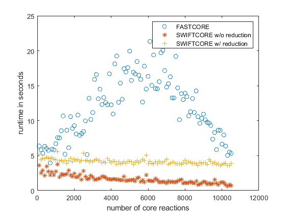

clear all; close all; clc;
load('Recon3D_301/Recon3DModel_301.mat');
model = Recon3DModel;
model.rev = double(model.lb < 0);
clear Recon3DModel;
n = length(model.rxns);
solver = 'ibm_cplex';
LP = zeros(2, 105);
runtime = zeros(3, 105);
performance = zeros(4, 105);
errors = true(3, 105);
for k = 1:105
disp(k);
core = randsample(n, 100*k);
time1 = tic;
coreRxn = fastcore(core, model, 1e-4);
runtime(1, k) = toc(time1);
coreRxnBool = false(n, 1);
coreRxnBool(coreRxn) = true;
performance(1, k) = sum(coreRxnBool);
if all(coreRxnBool(core))
tempmodel.S = model.S(:, coreRxnBool);
tempmodel.rev = model.rev(coreRxnBool);
tempmodel.lb = model.lb(coreRxnBool);
tempmodel.ub = model.ub(coreRxnBool);
tempmodel.rxns = model.rxns(coreRxnBool);
tempmodel.c = model.c(coreRxnBool);
tempmodel.mets = model.mets;
A = fastcc(tempmodel, 1e-4);
if all(A.' == 1:length(A))
errors(1, k) = false;
end
end
time2 = tic;
[~, coreInd, numLP] = swiftcore(model, core, ones(n, 1), 1e-10, false, solver);
runtime(2, k) = toc(time2);
LP(1, k) = numLP;
performance(2, k) = sum(coreInd);
if all(coreInd(core))
tempmodel.S = model.S(:, coreInd);
tempmodel.rev = model.rev(coreInd);
tempmodel.lb = model.lb(coreInd);
tempmodel.ub = model.ub(coreInd);
tempmodel.rxns = model.rxns(coreInd);
tempmodel.c = model.c(coreInd);
tempmodel.mets = model.mets;
A = fastcc(tempmodel, 1e-4);
if all(A.' == 1:length(A))
errors(2, k) = false;
end
end
time3 = tic;
[~, coreIndReduce, numLP] = swiftcore(model, core, ones(n, 1), 1e-10, true, solver);
runtime(3, k) = toc(time3);
LP(2, k) = numLP;
performance(3, k) = sum(coreIndReduce);
if all(coreIndReduce(core))
tempmodel.S = model.S(:, coreIndReduce);
tempmodel.rev = model.rev(coreIndReduce);
tempmodel.lb = model.lb(coreIndReduce);
tempmodel.ub = model.ub(coreIndReduce);
tempmodel.rxns = model.rxns(coreIndReduce);
tempmodel.c = model.c(coreIndReduce);
tempmodel.mets = model.mets;
A = fastcc(tempmodel, 1e-4);
if all(A.' == 1:length(A))
errors(3, k) = false;
end
end
performance(4, k) = sum(coreIndReduce + coreInd + coreRxnBool == 3);
end
fprintf('FASTCORE returns wrong answers in %d%% of cases!\n', round(100*sum(errors(1,:))/size(errors,2)));
fprintf('SWIFTCORE w/o reduction returns wrong answers in %d%% of cases!\n', round(100*sum(errors(2,:))/size(errors,2)));
fprintf('SWIFTCORE w/ reduction returns wrong answers in %d%% of cases!\n', round(100*sum(errors(3,:))/size(errors,2)));
figure();
plot(100*(1:105),LP(1,:),'o',100*(1:105),LP(2,:),'*');
legend({'SWIFTCORE w/o reduction','SWIFTCORE w/ reduction'});
xlabel('number of core reactions');
ylabel('number of solved LPs');
savefig('LP');
figure();
plot(100*(1:105),runtime(1,:),'o',100*(1:105),runtime(2,:),'*',100*(1:105),runtime(3,:),'+');
legend({'FASTCORE','SWIFTCORE w/o reduction','SWIFTCORE w/ reduction'},'Location','northeast');
xlabel('number of core reactions');
ylabel('runtime in seconds');
savefig('runtime');
figure();
plot(100*(1:105),performance(1,:),'o',100*(1:105),performance(2,:),'*',...
100*(1:105),performance(3,:),'+',100*(1:105),performance(4,:),'x');
legend({'FASTCORE','SWIFTCORE w/o reduction','SWIFTCORE w/ reduction','intersection'},'Location','southeast');
xlabel('number of core reactions');
ylabel('size of the subnetwork');
savefig('performance');
fprintf('switftcore w/o reduction was computed in %d%% of fastcore runtime.\n', round(mean(runtime(2, :)./runtime(1, :))*100));
fprintf('switftcore w/ reduction was computed in %d%% of fastcore runtime.\n', round(mean(runtime(3, :)./runtime(1, :))*100));
fprintf('switftcore w/o reduction performed with %d%% of fastcore reactions.\n', round(mean(performance(2, :)./performance(1, :))*100));
fprintf('switftcore w/ reduction performed with %d%% of fastcore reactions.\n', round(mean(performance(3, :)./performance(1, :))*100));
fprintf('The average number of reactions in the intersection is %d%% of fastcore reactions.\n', ...
round(mean(performance(4, :)./performance(1, :))*100));
1
|J|=48 |A|=430
|J|=45 |A|=654
|J|=7 |A|=654
(flip) |A|=684
|J|=2 |A|=684
(flip) |A|=684
|A|=688
|J|=0 |A|=688
Elapsed time is 6.363057 seconds.
|J|=275 |A|=675
|J|=13 |A|=681
|J|=7 |A|=681
(flip) |A|=681
|A|=688
|J|=0
The input model is consistent.
Elapsed time is 0.259438 seconds.
Warning: File: C:\Program
Files\IBM\ILOG\CPLEX_Studio128\cplex\matlab\x64_win64\@Cplex\Cplex.p Line: 965
Column: 0
Defining "changedParam" in the nested function shares it with the parent
function. In a future release, to share "changedParam" between parent and
nested functions, explicitly define it in the parent function.
|J|=262 |A|=650
|J|=10 |A|=652
|J|=8 |A|=652
(flip) |A|=652
|A|=656
|J|=4 |A|=656
(flip) |A|=660
|J|=0
The input model is consistent.
Elapsed time is 0.301871 seconds.
|J|=256 |A|=737
|J|=3 |A|=740
|J|=0
The input model is consistent.
Elapsed time is 0.074642 seconds.
2
|J|=100 |A|=783
|J|=91 |A|=1187
|J|=9 |A|=1187
(flip) |A|=1252
|J|=0 |A|=1252
Elapsed time is 5.828783 seconds.
|J|=518 |A|=1238
|J|=14 |A|=1248
|J|=4 |A|=1248
(flip) |A|=1248
|A|=1252
|J|=0
The input model is consistent.
Elapsed time is 0.258918 seconds.
|J|=509 |A|=1204
|J|=18 |A|=1208
|J|=14 |A|=1208
(flip) |A|=1208
|A|=1222
|J|=0
The input model is consistent.
Elapsed time is 0.249524 seconds.
|J|=554 |A|=1323
|J|=14 |A|=1325
|J|=12 |A|=1325
(flip) |A|=1325
|A|=1334
|J|=3 |A|=1334
(flip) |A|=1337
|J|=0
The input model is consistent.
Elapsed time is 0.357494 seconds.
3
|J|=154 |A|=1001
|J|=121 |A|=1490
|J|=10 |A|=1490
(flip) |A|=1534
|J|=0 |A|=1534
Elapsed time is 5.338487 seconds.
|J|=688 |A|=1513
|J|=21 |A|=1520
|J|=14 |A|=1520
(flip) |A|=1520
|A|=1527
|J|=7 |A|=1529
|J|=5 |A|=1532
|J|=2 |A|=1534
|J|=0
The input model is consistent.
Elapsed time is 0.429445 seconds.
|J|=702 |A|=1508
|J|=25 |A|=1522
|J|=11 |A|=1522
(flip) |A|=1522
|A|=1525
|J|=8 |A|=1527
|J|=6 |A|=1531
|J|=2 |A|=1533
|J|=0
The input model is consistent.
Elapsed time is 0.395114 seconds.
|J|=724 |A|=1605
|J|=26 |A|=1608
|J|=23 |A|=1608
(flip) |A|=1610
|J|=21 |A|=1610
(flip) |A|=1610
|A|=1627
|J|=4 |A|=1627
(flip) |A|=1630
|J|=1 |A|=1631
|J|=0
The input model is consistent.
Elapsed time is 0.534748 seconds.
4
|J|=193 |A|=1212
|J|=168 |A|=1859
|J|=18 |A|=1859
(flip) |A|=1931
|J|=2 |A|=1931
(flip) |A|=1931
|A|=1938
|J|=0 |A|=1938
Elapsed time is 6.328286 seconds.
|J|=831 |A|=1919
|J|=19 |A|=1927
|J|=11 |A|=1927
(flip) |A|=1927
|A|=1936
|J|=2 |A|=1938
|J|=0
The input model is consistent.
Elapsed time is 0.351677 seconds.
|J|=829 |A|=1888
|J|=22 |A|=1899
|J|=11 |A|=1899
(flip) |A|=1899
|A|=1908
|J|=2 |A|=1910
|J|=0
The input model is consistent.
Elapsed time is 0.299925 seconds.
|J|=845 |A|=1949
|J|=32 |A|=1955
|J|=26 |A|=1955
(flip) |A|=1955
|A|=1960
|J|=21 |A|=1969
|J|=12 |A|=1973
|J|=8 |A|=1981
|J|=0
The input model is consistent.
Elapsed time is 0.465186 seconds.
5
|J|=242 |A|=1413
|J|=187 |A|=2020
|J|=29 |A|=2020
(flip) |A|=2125
|J|=10 |A|=2125
(flip) |A|=2125
|A|=2137
|J|=2 |A|=2142
|J|=0 |A|=2142
Elapsed time is 6.015047 seconds.
|J|=897 |A|=2128
|J|=14 |A|=2136
|J|=6 |A|=2136
(flip) |A|=2136
|A|=2138
|J|=4 |A|=2140
|J|=2 |A|=2142
|J|=0
The input model is consistent.
Elapsed time is 0.400507 seconds.
|J|=912 |A|=2116
|J|=24 |A|=2128
|J|=12 |A|=2128
(flip) |A|=2128
|A|=2136
|J|=4 |A|=2138
|J|=2 |A|=2140
|J|=0
The input model is consistent.
Elapsed time is 0.413227 seconds.
|J|=918 |A|=2195
|J|=25 |A|=2203
|J|=17 |A|=2203
(flip) |A|=2203
|A|=2211
|J|=9 |A|=2213
|J|=7 |A|=2216
|J|=4 |A|=2218
|J|=2 |A|=2220
|J|=0
The input model is consistent.
Elapsed time is 0.529501 seconds.
6
|J|=286 |A|=1654
|J|=227 |A|=2415
|J|=30 |A|=2415
(flip) |A|=2510
|J|=8 |A|=2510
(flip) |A|=2510
|A|=2519
|J|=2 |A|=2523
|J|=0 |A|=2523
Elapsed time is 5.759182 seconds.
|J|=1098 |A|=2495
|J|=28 |A|=2508
|J|=15 |A|=2508
(flip) |A|=2510
|J|=13 |A|=2510
(flip) |A|=2510
|A|=2519
|J|=4 |A|=2523
|J|=0
The input model is consistent.
Elapsed time is 0.466412 seconds.
|J|=1090 |A|=2469
|J|=33 |A|=2490
|J|=12 |A|=2490
(flip) |A|=2492
|J|=10 |A|=2492
(flip) |A|=2492
|A|=2494
|J|=8 |A|=2500
|J|=2 |A|=2502
|J|=0
The input model is consistent.
Elapsed time is 0.526941 seconds.
|J|=1088 |A|=2517
|J|=32 |A|=2525
|J|=24 |A|=2525
(flip) |A|=2527
|J|=22 |A|=2527
(flip) |A|=2527
|A|=2532
|J|=17 |A|=2534
|J|=15 |A|=2536
|J|=13 |A|=2539
|J|=10 |A|=2547
|J|=2 |A|=2549
|J|=0
The input model is consistent.
Elapsed time is 0.727965 seconds.
7
|J|=344 |A|=1733
|J|=236 |A|=2577
|J|=26 |A|=2577
(flip) |A|=2701
|J|=1 |A|=2701
(flip) |A|=2706
|J|=0 |A|=2706
Elapsed time is 3.950324 seconds.
|J|=1181 |A|=2652
|J|=54 |A|=2699
|J|=7 |A|=2699
(flip) |A|=2700
|J|=6 |A|=2700
(flip) |A|=2700
|A|=2702
|J|=4 |A|=2704
|J|=2 |A|=2706
|J|=0
The input model is consistent.
Elapsed time is 0.588035 seconds.
|J|=1186 |A|=2649
|J|=32 |A|=2665
|J|=16 |A|=2665
(flip) |A|=2666
|J|=15 |A|=2666
(flip) |A|=2666
|A|=2670
|J|=11 |A|=2677
|J|=4 |A|=2679
|J|=2 |A|=2681
|J|=0
The input model is consistent.
Elapsed time is 0.591765 seconds.
|J|=1163 |A|=2665
|J|=26 |A|=2674
|J|=17 |A|=2674
(flip) |A|=2674
|A|=2680
|J|=11 |A|=2682
|J|=9 |A|=2684
|J|=7 |A|=2687
|J|=4 |A|=2691
|J|=0
The input model is consistent.
Elapsed time is 0.547438 seconds.
8
|J|=393 |A|=1888
|J|=301 |A|=2835
|J|=34 |A|=2835
(flip) |A|=2967
|J|=8 |A|=2967
(flip) |A|=2967
|A|=2976
|J|=2 |A|=2976
(flip) |A|=2980
|J|=0 |A|=2980
Elapsed time is 5.919302 seconds.
|J|=1301 |A|=2927
|J|=53 |A|=2959
|J|=21 |A|=2959
(flip) |A|=2961
|J|=19 |A|=2961
(flip) |A|=2961
|A|=2963
|J|=17 |A|=2966
|J|=14 |A|=2969
|J|=11 |A|=2973
|J|=7 |A|=2975
|J|=5 |A|=2977
|J|=3 |A|=2980
|J|=0
The input model is consistent.
Elapsed time is 0.826255 seconds.
|J|=1296 |A|=2908
|J|=47 |A|=2935
|J|=20 |A|=2935
(flip) |A|=2935
|A|=2940
|J|=15 |A|=2942
|J|=13 |A|=2947
|J|=8 |A|=2950
|J|=5 |A|=2952
|J|=3 |A|=2955
|J|=0
The input model is consistent.
Elapsed time is 0.651247 seconds.
|J|=1306 |A|=2938
|J|=74 |A|=2971
|J|=41 |A|=2971
(flip) |A|=2973
|J|=39 |A|=2973
(flip) |A|=2973
|A|=2986
|J|=26 |A|=2990
|J|=22 |A|=2998
|J|=14 |A|=3003
|J|=9 |A|=3007
|J|=5 |A|=3012
|J|=0
The input model is consistent.
Elapsed time is 0.790432 seconds.
9
|J|=424 |A|=2020
|J|=325 |A|=3049
|J|=42 |A|=3049
(flip) |A|=3215
|J|=12 |A|=3215
(flip) |A|=3215
|A|=3227
|J|=4 |A|=3227
(flip) |A|=3232
|J|=2 |A|=3238
|J|=0 |A|=3238
Elapsed time is 5.814425 seconds.
|J|=1424 |A|=3140
|J|=98 |A|=3221
|J|=17 |A|=3221
(flip) |A|=3223
|J|=15 |A|=3223
(flip) |A|=3223
|A|=3229
|J|=9 |A|=3233
|J|=5 |A|=3235
|J|=3 |A|=3238
|J|=0
The input model is consistent.
Elapsed time is 0.631915 seconds.
|J|=1419 |A|=3114
|J|=74 |A|=3135
|J|=53 |A|=3135
(flip) |A|=3136
|J|=52 |A|=3136
(flip) |A|=3136
|A|=3180
|J|=8 |A|=3184
|J|=4 |A|=3185
|J|=3 |A|=3188
|J|=0
The input model is consistent.
Elapsed time is 0.670539 seconds.
|J|=1432 |A|=3235
|J|=42 |A|=3258
|J|=19 |A|=3258
(flip) |A|=3259
|J|=18 |A|=3259
(flip) |A|=3259
|A|=3269
|J|=8 |A|=3273
|J|=4 |A|=3275
|J|=2 |A|=3277
|J|=0
The input model is consistent.
Elapsed time is 0.657056 seconds.
10
|J|=470 |A|=2144
|J|=335 |A|=3168
|J|=44 |A|=3168
(flip) |A|=3294
|J|=16 |A|=3294
(flip) |A|=3294
|A|=3311
|J|=6 |A|=3311
(flip) |A|=3316
|J|=4 |A|=3316
(flip) |A|=3320
|J|=2 |A|=3327
|J|=0 |A|=3327
Elapsed time is 6.706961 seconds.
|J|=1468 |A|=3289
|J|=38 |A|=3314
|J|=13 |A|=3314
(flip) |A|=3314
|A|=3321
|J|=6 |A|=3324
|J|=3 |A|=3327
|J|=0
The input model is consistent.
Elapsed time is 0.492067 seconds.
|J|=1489 |A|=3293
|J|=41 |A|=3316
|J|=18 |A|=3316
(flip) |A|=3316
|A|=3320
|J|=14 |A|=3326
|J|=8 |A|=3329
|J|=5 |A|=3332
|J|=2 |A|=3334
|J|=0
The input model is consistent.
Elapsed time is 0.617983 seconds.
|J|=1492 |A|=3380
|J|=31 |A|=3398
|J|=13 |A|=3398
(flip) |A|=3398
|A|=3402
|J|=9 |A|=3402
(flip) |A|=3404
|J|=7 |A|=3409
|J|=2 |A|=3411
|J|=0
The input model is consistent.
Elapsed time is 0.590943 seconds.
11
|J|=552 |A|=2395
|J|=341 |A|=3435
|J|=35 |A|=3435
(flip) |A|=3543
|J|=9 |A|=3543
(flip) |A|=3552
|J|=7 |A|=3552
(flip) |A|=3552
|A|=3555
|J|=5 |A|=3555
(flip) |A|=3561
|J|=3 |A|=3561
(flip) |A|=3565
|J|=1 |A|=3565
(flip) |A|=3573
|J|=0 |A|=3573
Elapsed time is 7.569974 seconds.
|J|=1588 |A|=3493
|J|=80 |A|=3545
|J|=28 |A|=3545
(flip) |A|=3545
|A|=3551
|J|=22 |A|=3557
|J|=16 |A|=3561
|J|=12 |A|=3566
|J|=7 |A|=3568
|J|=5 |A|=3570
|J|=3 |A|=3573
|J|=0
The input model is consistent.
Elapsed time is 0.805911 seconds.
|J|=1593 |A|=3492
|J|=90 |A|=3534
|J|=48 |A|=3534
(flip) |A|=3564
|J|=18 |A|=3564
(flip) |A|=3564
|A|=3576
|J|=6 |A|=3578
|J|=4 |A|=3580
|J|=2 |A|=3582
|J|=0
The input model is consistent.
Elapsed time is 0.734712 seconds.
|J|=1616 |A|=3584
|J|=46 |A|=3607
|J|=23 |A|=3607
(flip) |A|=3609
|J|=21 |A|=3609
(flip) |A|=3609
|A|=3618
|J|=12 |A|=3625
|J|=5 |A|=3626
|J|=4 |A|=3628
|J|=2 |A|=3630
|J|=0
The input model is consistent.
Elapsed time is 0.735321 seconds.
12
|J|=629 |A|=2581
|J|=369 |A|=3637
|J|=54 |A|=3637
(flip) |A|=3781
|J|=21 |A|=3781
(flip) |A|=3781
|A|=3796
|J|=11 |A|=3796
(flip) |A|=3801
|J|=9 |A|=3801
(flip) |A|=3805
|J|=7 |A|=3812
|J|=4 |A|=3817
|J|=2 |A|=3824
|J|=0 |A|=3824
Elapsed time is 7.533470 seconds.
|J|=1744 |A|=3773
|J|=51 |A|=3807
|J|=17 |A|=3807
(flip) |A|=3807
|A|=3811
|J|=13 |A|=3815
|J|=9 |A|=3817
|J|=7 |A|=3819
|J|=5 |A|=3821
|J|=3 |A|=3824
|J|=0
The input model is consistent.
Elapsed time is 0.753396 seconds.
|J|=1734 |A|=3704
|J|=59 |A|=3744
|J|=19 |A|=3744
(flip) |A|=3744
|A|=3746
|J|=17 |A|=3751
|J|=12 |A|=3754
|J|=9 |A|=3756
|J|=7 |A|=3758
|J|=5 |A|=3760
|J|=3 |A|=3763
|J|=0
The input model is consistent.
Elapsed time is 0.790333 seconds.
|J|=1748 |A|=3796
|J|=47 |A|=3829
|J|=14 |A|=3829
(flip) |A|=3830
|J|=13 |A|=3830
(flip) |A|=3830
|A|=3836
|J|=7 |A|=3838
|J|=5 |A|=3840
|J|=3 |A|=3843
|J|=0
The input model is consistent.
Elapsed time is 0.726885 seconds.
13
|J|=650 |A|=2670
|J|=435 |A|=3871
|J|=56 |A|=3871
(flip) |A|=3995
|J|=25 |A|=3995
(flip) |A|=4001
|J|=22 |A|=4001
(flip) |A|=4001
|A|=4020
|J|=10 |A|=4020
(flip) |A|=4038
|J|=8 |A|=4038
(flip) |A|=4044
|J|=6 |A|=4049
|J|=4 |A|=4056
|J|=2 |A|=4056
(flip) |A|=4061
|J|=0 |A|=4061
Elapsed time is 8.558451 seconds.
|J|=1815 |A|=3941
|J|=120 |A|=3989
|J|=72 |A|=3989
(flip) |A|=4004
|J|=57 |A|=4004
(flip) |A|=4004
|A|=4017
|J|=44 |A|=4019
|J|=42 |A|=4046
|J|=15 |A|=4048
|J|=13 |A|=4051
|J|=10 |A|=4058
|J|=3 |A|=4061
|J|=0
The input model is consistent.
Elapsed time is 0.961298 seconds.
|J|=1824 |A|=3936
|J|=108 |A|=3984
|J|=60 |A|=3984
(flip) |A|=3999
|J|=45 |A|=3999
(flip) |A|=3999
|A|=4003
|J|=41 |A|=4034
|J|=10 |A|=4036
|J|=8 |A|=4041
|J|=3 |A|=4044
|J|=0
The input model is consistent.
Elapsed time is 0.770496 seconds.
|J|=1803 |A|=4004
|J|=56 |A|=4039
|J|=21 |A|=4039
(flip) |A|=4040
|J|=20 |A|=4040
(flip) |A|=4040
|A|=4046
|J|=14 |A|=4048
|J|=12 |A|=4053
|J|=7 |A|=4057
|J|=3 |A|=4060
|J|=0
The input model is consistent.
Elapsed time is 0.809495 seconds.
14
|J|=728 |A|=2780
|J|=427 |A|=3945
|J|=64 |A|=3945
(flip) |A|=4129
|J|=24 |A|=4129
(flip) |A|=4143
|J|=21 |A|=4143
(flip) |A|=4143
|A|=4152
|J|=15 |A|=4152
(flip) |A|=4157
|J|=12 |A|=4157
(flip) |A|=4161
|J|=10 |A|=4161
(flip) |A|=4170
|J|=8 |A|=4170
(flip) |A|=4173
|J|=6 |A|=4173
(flip) |A|=4186
|J|=4 |A|=4189
|J|=2 |A|=4189
(flip) |A|=4194
|J|=0 |A|=4194
Elapsed time is 10.669000 seconds.
|J|=1936 |A|=4138
|J|=56 |A|=4177
|J|=17 |A|=4177
(flip) |A|=4178
|J|=16 |A|=4178
(flip) |A|=4178
|A|=4182
|J|=12 |A|=4190
|J|=4 |A|=4192
|J|=2 |A|=4194
|J|=0
The input model is consistent.
Elapsed time is 0.735252 seconds.
|J|=1945 |A|=4090
|J|=88 |A|=4136
|J|=42 |A|=4136
(flip) |A|=4137
|J|=41 |A|=4137
(flip) |A|=4137
|A|=4147
|J|=31 |A|=4154
|J|=24 |A|=4156
|J|=22 |A|=4168
|J|=10 |A|=4170
|J|=8 |A|=4172
|J|=6 |A|=4174
|J|=4 |A|=4176
|J|=2 |A|=4178
|J|=0
The input model is consistent.
Elapsed time is 1.198991 seconds.
|J|=1969 |A|=4174
|J|=47 |A|=4204
|J|=17 |A|=4204
(flip) |A|=4204
|A|=4210
|J|=11 |A|=4213
|J|=8 |A|=4219
|J|=2 |A|=4221
|J|=0
The input model is consistent.
Elapsed time is 0.624368 seconds.
15
|J|=747 |A|=2853
|J|=456 |A|=4010
|J|=76 |A|=4010
(flip) |A|=4198
|J|=32 |A|=4198
(flip) |A|=4207
|J|=30 |A|=4207
(flip) |A|=4207
|A|=4254
|J|=2 |A|=4254
(flip) |A|=4262
|J|=0 |A|=4262
Elapsed time is 5.199918 seconds.
|J|=1919 |A|=4202
|J|=60 |A|=4241
|J|=21 |A|=4241
(flip) |A|=4242
|J|=20 |A|=4242
(flip) |A|=4242
|A|=4249
|J|=13 |A|=4255
|J|=7 |A|=4260
|J|=2 |A|=4262
|J|=0
The input model is consistent.
Elapsed time is 0.825141 seconds.
|J|=1934 |A|=4173
|J|=60 |A|=4209
|J|=24 |A|=4209
(flip) |A|=4210
|J|=23 |A|=4210
(flip) |A|=4210
|A|=4222
|J|=11 |A|=4228
|J|=5 |A|=4231
|J|=2 |A|=4233
|J|=0
The input model is consistent.
Elapsed time is 0.727830 seconds.
|J|=1919 |A|=4208
|J|=53 |A|=4247
|J|=14 |A|=4247
(flip) |A|=4248
|J|=13 |A|=4248
(flip) |A|=4248
|A|=4251
|J|=10 |A|=4257
|J|=4 |A|=4259
|J|=2 |A|=4261
|J|=0
The input model is consistent.
Elapsed time is 0.786612 seconds.
16
|J|=796 |A|=3031
|J|=455 |A|=4228
|J|=71 |A|=4228
(flip) |A|=4389
|J|=30 |A|=4389
(flip) |A|=4389
|A|=4420
|J|=12 |A|=4420
(flip) |A|=4425
|J|=10 |A|=4425
(flip) |A|=4429
|J|=8 |A|=4435
|J|=6 |A|=4435
(flip) |A|=4441
|J|=4 |A|=4445
|J|=2 |A|=4449
|J|=0 |A|=4449
Elapsed time is 8.624111 seconds.
|J|=1984 |A|=4376
|J|=73 |A|=4434
|J|=15 |A|=4434
(flip) |A|=4434
|A|=4442
|J|=7 |A|=4449
|J|=0
The input model is consistent.
Elapsed time is 0.456079 seconds.
|J|=1979 |A|=4354
|J|=83 |A|=4406
|J|=31 |A|=4406
(flip) |A|=4408
|J|=29 |A|=4408
(flip) |A|=4408
|A|=4418
|J|=19 |A|=4420
|J|=17 |A|=4425
|J|=12 |A|=4428
|J|=9 |A|=4430
|J|=7 |A|=4433
|J|=4 |A|=4435
|J|=2 |A|=4437
|J|=0
The input model is consistent.
Elapsed time is 1.117140 seconds.
|J|=1975 |A|=4340
|J|=84 |A|=4379
|J|=45 |A|=4379
(flip) |A|=4382
|J|=42 |A|=4382
(flip) |A|=4382
|A|=4410
|J|=14 |A|=4417
|J|=7 |A|=4424
|J|=0
The input model is consistent.
Elapsed time is 0.708758 seconds.
17
|J|=878 |A|=3143
|J|=457 |A|=4359
|J|=66 |A|=4359
(flip) |A|=4521
|J|=25 |A|=4521
(flip) |A|=4529
|J|=23 |A|=4529
(flip) |A|=4529
|A|=4557
|J|=5 |A|=4557
(flip) |A|=4570
|J|=3 |A|=4570
(flip) |A|=4574
|J|=0 |A|=4574
Elapsed time is 6.124029 seconds.
|J|=2120 |A|=4487
|J|=87 |A|=4548
|J|=26 |A|=4548
(flip) |A|=4548
|A|=4551
|J|=23 |A|=4555
|J|=19 |A|=4557
|J|=17 |A|=4562
|J|=12 |A|=4566
|J|=8 |A|=4568
|J|=6 |A|=4570
|J|=4 |A|=4574
|J|=0
The input model is consistent.
Elapsed time is 1.021098 seconds.
|J|=2123 |A|=4469
|J|=93 |A|=4534
|J|=28 |A|=4534
(flip) |A|=4536
|J|=26 |A|=4536
(flip) |A|=4536
|A|=4546
|J|=16 |A|=4551
|J|=11 |A|=4556
|J|=6 |A|=4558
|J|=4 |A|=4562
|J|=0
The input model is consistent.
Elapsed time is 0.940791 seconds.
|J|=2118 |A|=4514
|J|=69 |A|=4547
|J|=36 |A|=4547
(flip) |A|=4549
|J|=34 |A|=4549
(flip) |A|=4549
|A|=4563
|J|=20 |A|=4569
|J|=14 |A|=4572
|J|=11 |A|=4575
|J|=8 |A|=4579
|J|=4 |A|=4583
|J|=0
The input model is consistent.
Elapsed time is 0.975568 seconds.
18
|J|=932 |A|=3322
|J|=485 |A|=4504
|J|=97 |A|=4504
(flip) |A|=4687
|J|=43 |A|=4687
(flip) |A|=4689
|J|=42 |A|=4689
(flip) |A|=4689
|A|=4729
|J|=17 |A|=4729
(flip) |A|=4734
|J|=15 |A|=4738
|J|=13 |A|=4738
(flip) |A|=4745
|J|=11 |A|=4751
|J|=9 |A|=4751
(flip) |A|=4764
|J|=7 |A|=4771
|J|=5 |A|=4771
(flip) |A|=4775
|J|=3 |A|=4781
|J|=1 |A|=4784
|J|=0 |A|=4784
Elapsed time is 10.576248 seconds.
|J|=2208 |A|=4680
|J|=104 |A|=4761
|J|=23 |A|=4761
(flip) |A|=4764
|J|=20 |A|=4764
(flip) |A|=4764
|A|=4769
|J|=15 |A|=4771
|J|=13 |A|=4775
|J|=9 |A|=4778
|J|=6 |A|=4780
|J|=4 |A|=4782
|J|=2 |A|=4784
|J|=0
The input model is consistent.
Elapsed time is 1.108330 seconds.
|J|=2214 |A|=4683
|J|=91 |A|=4751
|J|=23 |A|=4751
(flip) |A|=4753
|J|=21 |A|=4753
(flip) |A|=4753
|A|=4758
|J|=16 |A|=4762
|J|=12 |A|=4764
|J|=10 |A|=4767
|J|=7 |A|=4769
|J|=5 |A|=4772
|J|=2 |A|=4774
|J|=0
The input model is consistent.
Elapsed time is 1.090526 seconds.
|J|=2206 |A|=4649
|J|=85 |A|=4704
|J|=30 |A|=4704
(flip) |A|=4704
|A|=4718
|J|=16 |A|=4721
|J|=13 |A|=4726
|J|=8 |A|=4728
|J|=6 |A|=4730
|J|=4 |A|=4732
|J|=2 |A|=4734
|J|=0
The input model is consistent.
Elapsed time is 0.890751 seconds.
19
|J|=941 |A|=3350
|J|=541 |A|=4698
|J|=99 |A|=4698
(flip) |A|=4897
|J|=46 |A|=4897
(flip) |A|=4897
|A|=4935
|J|=21 |A|=4935
(flip) |A|=4945
|J|=16 |A|=4945
(flip) |A|=4950
|J|=14 |A|=4953
|J|=12 |A|=4953
(flip) |A|=4958
|J|=10 |A|=4962
|J|=8 |A|=4966
|J|=6 |A|=4971
|J|=4 |A|=4975
|J|=2 |A|=4979
|J|=0 |A|=4979
Elapsed time is 8.881937 seconds.
|J|=2231 |A|=4892
|J|=87 |A|=4955
|J|=24 |A|=4955
(flip) |A|=4956
|J|=23 |A|=4956
(flip) |A|=4956
|A|=4967
|J|=12 |A|=4970
|J|=9 |A|=4972
|J|=7 |A|=4975
|J|=4 |A|=4977
|J|=2 |A|=4979
|J|=0
The input model is consistent.
Elapsed time is 1.040713 seconds.
|J|=2236 |A|=4881
|J|=101 |A|=4961
|J|=21 |A|=4961
(flip) |A|=4962
|J|=20 |A|=4962
(flip) |A|=4962
|A|=4966
|J|=16 |A|=4968
|J|=14 |A|=4970
|J|=12 |A|=4974
|J|=8 |A|=4977
|J|=5 |A|=4979
|J|=3 |A|=4982
|J|=0
The input model is consistent.
Elapsed time is 1.107630 seconds.
|J|=2244 |A|=4885
|J|=93 |A|=4938
|J|=40 |A|=4938
(flip) |A|=4939
|J|=39 |A|=4939
(flip) |A|=4939
|A|=4948
|J|=30 |A|=4954
|J|=24 |A|=4958
|J|=20 |A|=4961
|J|=17 |A|=4961
(flip) |A|=4968
|J|=10 |A|=4971
|J|=7 |A|=4973
|J|=5 |A|=4976
|J|=2 |A|=4978
|J|=0
The input model is consistent.
Elapsed time is 1.385245 seconds.
20
|J|=989 |A|=3397
|J|=566 |A|=4809
|J|=99 |A|=4809
(flip) |A|=4982
|J|=44 |A|=4982
(flip) |A|=4982
|A|=5022
|J|=19 |A|=5022
(flip) |A|=5031
|J|=15 |A|=5035
|J|=13 |A|=5041
|J|=10 |A|=5046
|J|=8 |A|=5046
(flip) |A|=5050
|J|=6 |A|=5059
|J|=4 |A|=5063
|J|=2 |A|=5063
(flip) |A|=5070
|J|=0 |A|=5070
Elapsed time is 9.279081 seconds.
|J|=2267 |A|=4969
|J|=101 |A|=5039
|J|=31 |A|=5039
(flip) |A|=5040
|J|=30 |A|=5040
(flip) |A|=5040
|A|=5047
|J|=23 |A|=5060
|J|=10 |A|=5062
|J|=8 |A|=5065
|J|=5 |A|=5068
|J|=2 |A|=5070
|J|=0
The input model is consistent.
Elapsed time is 1.061470 seconds.
|J|=2276 |A|=4951
|J|=75 |A|=5005
|J|=21 |A|=5005
(flip) |A|=5008
|J|=18 |A|=5008
(flip) |A|=5008
|A|=5013
|J|=13 |A|=5016
|J|=10 |A|=5018
|J|=8 |A|=5021
|J|=5 |A|=5024
|J|=2 |A|=5026
|J|=0
The input model is consistent.
Elapsed time is 1.028931 seconds.
|J|=2264 |A|=4949
|J|=78 |A|=4995
|J|=32 |A|=4995
(flip) |A|=4996
|J|=31 |A|=4996
(flip) |A|=4996
|A|=5010
|J|=17 |A|=5015
|J|=12 |A|=5020
|J|=7 |A|=5022
|J|=5 |A|=5025
|J|=2 |A|=5027
|J|=0
The input model is consistent.
Elapsed time is 0.951247 seconds.
21
|J|=1053 |A|=3525
|J|=573 |A|=4851
|J|=112 |A|=4851
(flip) |A|=5085
|J|=47 |A|=5085
(flip) |A|=5085
|A|=5132
|J|=17 |A|=5132
(flip) |A|=5137
|J|=15 |A|=5142
|J|=13 |A|=5147
|J|=10 |A|=5149
|J|=9 |A|=5157
|J|=6 |A|=5162
|J|=4 |A|=5167
|J|=2 |A|=5171
|J|=0 |A|=5171
Elapsed time is 8.100119 seconds.
|J|=2357 |A|=5064
|J|=107 |A|=5140
|J|=31 |A|=5140
(flip) |A|=5141
|J|=30 |A|=5141
(flip) |A|=5141
|A|=5152
|J|=19 |A|=5155
|J|=16 |A|=5158
|J|=13 |A|=5160
|J|=11 |A|=5163
|J|=8 |A|=5166
|J|=5 |A|=5168
|J|=3 |A|=5171
|J|=0
The input model is consistent.
Elapsed time is 1.243887 seconds.
|J|=2372 |A|=5039
|J|=121 |A|=5121
|J|=39 |A|=5121
(flip) |A|=5122
|J|=38 |A|=5122
(flip) |A|=5122
|A|=5133
|J|=27 |A|=5135
|J|=25 |A|=5139
|J|=21 |A|=5142
|J|=18 |A|=5145
|J|=15 |A|=5151
|J|=9 |A|=5153
|J|=7 |A|=5155
|J|=5 |A|=5158
|J|=2 |A|=5160
|J|=0
The input model is consistent.
Elapsed time is 1.442592 seconds.
|J|=2362 |A|=5073
|J|=77 |A|=5119
|J|=31 |A|=5119
(flip) |A|=5121
|J|=29 |A|=5121
(flip) |A|=5121
|A|=5132
|J|=18 |A|=5138
|J|=12 |A|=5140
|J|=10 |A|=5142
|J|=8 |A|=5145
|J|=5 |A|=5148
|J|=2 |A|=5150
|J|=0
The input model is consistent.
Elapsed time is 1.121800 seconds.
22
|J|=1126 |A|=3651
|J|=578 |A|=5047
|J|=107 |A|=5047
(flip) |A|=5194
|J|=66 |A|=5194
(flip) |A|=5194
|A|=5255
|J|=26 |A|=5255
(flip) |A|=5259
|J|=24 |A|=5259
(flip) |A|=5268
|J|=20 |A|=5273
|J|=18 |A|=5277
|J|=16 |A|=5280
|J|=14 |A|=5283
|J|=12 |A|=5289
|J|=10 |A|=5289
(flip) |A|=5294
|J|=8 |A|=5298
|J|=6 |A|=5298
(flip) |A|=5302
|J|=4 |A|=5305
|J|=2 |A|=5305
(flip) |A|=5312
|J|=0 |A|=5312
Elapsed time is 10.798687 seconds.
|J|=2433 |A|=5216
|J|=96 |A|=5288
|J|=24 |A|=5288
(flip) |A|=5288
|A|=5298
|J|=14 |A|=5300
|J|=12 |A|=5304
|J|=8 |A|=5306
|J|=6 |A|=5309
|J|=3 |A|=5312
|J|=0
The input model is consistent.
Elapsed time is 0.873721 seconds.
|J|=2444 |A|=5208
|J|=98 |A|=5265
|J|=41 |A|=5265
(flip) |A|=5265
|A|=5280
|J|=26 |A|=5286
|J|=20 |A|=5288
|J|=18 |A|=5290
|J|=16 |A|=5293
|J|=13 |A|=5295
|J|=11 |A|=5298
|J|=8 |A|=5301
|J|=5 |A|=5304
|J|=2 |A|=5306
|J|=0
The input model is consistent.
Elapsed time is 1.247766 seconds.
|J|=2447 |A|=5144
|J|=120 |A|=5198
|J|=66 |A|=5198
(flip) |A|=5227
|J|=37 |A|=5227
(flip) |A|=5227
|A|=5236
|J|=28 |A|=5243
|J|=21 |A|=5245
|J|=19 |A|=5250
|J|=14 |A|=5255
|J|=9 |A|=5258
|J|=6 |A|=5261
|J|=3 |A|=5264
|J|=0
The input model is consistent.
Elapsed time is 1.245931 seconds.
23
|J|=1161 |A|=3609
|J|=605 |A|=5078
|J|=99 |A|=5078
(flip) |A|=5261
|J|=48 |A|=5261
(flip) |A|=5261
|A|=5307
|J|=18 |A|=5312
|J|=16 |A|=5312
(flip) |A|=5316
|J|=13 |A|=5324
|J|=9 |A|=5331
|J|=6 |A|=5336
|J|=4 |A|=5341
|J|=2 |A|=5348
|J|=0 |A|=5348
Elapsed time is 7.887815 seconds.
|J|=2473 |A|=5243
|J|=105 |A|=5309
|J|=39 |A|=5309
(flip) |A|=5310
|J|=38 |A|=5310
(flip) |A|=5310
|A|=5315
|J|=33 |A|=5324
|J|=24 |A|=5327
|J|=21 |A|=5330
|J|=18 |A|=5333
|J|=15 |A|=5336
|J|=12 |A|=5341
|J|=7 |A|=5343
|J|=5 |A|=5346
|J|=2 |A|=5348
|J|=0
The input model is consistent.
Elapsed time is 1.296844 seconds.
|J|=2484 |A|=5270
|J|=76 |A|=5320
|J|=26 |A|=5320
(flip) |A|=5322
|J|=24 |A|=5322
(flip) |A|=5322
|A|=5329
|J|=17 |A|=5332
|J|=14 |A|=5336
|J|=10 |A|=5339
|J|=7 |A|=5342
|J|=4 |A|=5344
|J|=2 |A|=5346
|J|=0
The input model is consistent.
Elapsed time is 1.177974 seconds.
|J|=2474 |A|=5246
|J|=78 |A|=5301
|J|=23 |A|=5301
(flip) |A|=5305
|J|=19 |A|=5305
(flip) |A|=5305
|A|=5308
|J|=16 |A|=5309
|J|=15 |A|=5309
(flip) |A|=5313
|J|=11 |A|=5316
|J|=8 |A|=5320
|J|=4 |A|=5322
|J|=2 |A|=5324
|J|=0
The input model is consistent.
Elapsed time is 1.271387 seconds.
24
|J|=1231 |A|=3781
|J|=620 |A|=5212
|J|=103 |A|=5212
(flip) |A|=5410
|J|=48 |A|=5410
(flip) |A|=5410
|A|=5466
|J|=16 |A|=5466
(flip) |A|=5473
|J|=12 |A|=5476
|J|=10 |A|=5476
(flip) |A|=5481
|J|=8 |A|=5484
|J|=6 |A|=5492
|J|=4 |A|=5496
|J|=2 |A|=5500
|J|=0 |A|=5500
Elapsed time is 8.145482 seconds.
|J|=2538 |A|=5379
|J|=121 |A|=5456
|J|=44 |A|=5456
(flip) |A|=5459
|J|=41 |A|=5459
(flip) |A|=5459
|A|=5476
|J|=24 |A|=5481
|J|=19 |A|=5485
|J|=15 |A|=5487
|J|=13 |A|=5489
|J|=11 |A|=5495
|J|=5 |A|=5497
|J|=3 |A|=5500
|J|=0
The input model is consistent.
Elapsed time is 1.272174 seconds.
|J|=2528 |A|=5365
|J|=125 |A|=5451
|J|=39 |A|=5451
(flip) |A|=5452
|J|=38 |A|=5452
(flip) |A|=5452
|A|=5456
|J|=34 |A|=5463
|J|=27 |A|=5465
|J|=25 |A|=5470
|J|=20 |A|=5474
|J|=16 |A|=5478
|J|=12 |A|=5484
|J|=6 |A|=5487
|J|=3 |A|=5490
|J|=0
The input model is consistent.
Elapsed time is 1.354925 seconds.
|J|=2544 |A|=5383
|J|=117 |A|=5449
|J|=51 |A|=5449
(flip) |A|=5452
|J|=48 |A|=5452
(flip) |A|=5452
|A|=5463
|J|=37 |A|=5466
|J|=34 |A|=5470
|J|=30 |A|=5472
|J|=28 |A|=5476
|J|=24 |A|=5481
|J|=19 |A|=5483
|J|=17 |A|=5485
|J|=15 |A|=5485
(flip) |A|=5489
|J|=11 |A|=5491
|J|=9 |A|=5494
|J|=6 |A|=5497
|J|=3 |A|=5500
|J|=0
The input model is consistent.
Elapsed time is 1.712832 seconds.
25
|J|=1271 |A|=3893
|J|=672 |A|=5417
|J|=119 |A|=5417
(flip) |A|=5557
|J|=76 |A|=5557
(flip) |A|=5559
|J|=75 |A|=5559
(flip) |A|=5559
|A|=5648
|J|=17 |A|=5648
(flip) |A|=5654
|J|=15 |A|=5654
(flip) |A|=5665
|J|=9 |A|=5665
(flip) |A|=5669
|J|=8 |A|=5669
(flip) |A|=5678
|J|=5 |A|=5682
|J|=3 |A|=5682
(flip) |A|=5686
|J|=0 |A|=5686
Elapsed time is 8.444188 seconds.
|J|=2603 |A|=5566
|J|=120 |A|=5663
|J|=23 |A|=5663
(flip) |A|=5666
|J|=20 |A|=5666
(flip) |A|=5666
|A|=5668
|J|=18 |A|=5670
|J|=16 |A|=5672
|J|=14 |A|=5678
|J|=8 |A|=5681
|J|=5 |A|=5683
|J|=3 |A|=5686
|J|=0
The input model is consistent.
Elapsed time is 1.131657 seconds.
|J|=2635 |A|=5562
|J|=125 |A|=5649
|J|=38 |A|=5649
(flip) |A|=5651
|J|=36 |A|=5651
(flip) |A|=5651
|A|=5666
|J|=21 |A|=5668
|J|=19 |A|=5671
|J|=16 |A|=5674
|J|=13 |A|=5677
|J|=10 |A|=5680
|J|=7 |A|=5682
|J|=5 |A|=5685
|J|=2 |A|=5687
|J|=0
The input model is consistent.
Elapsed time is 1.366232 seconds.
|J|=2621 |A|=5573
|J|=100 |A|=5653
|J|=20 |A|=5653
(flip) |A|=5656
|J|=17 |A|=5656
(flip) |A|=5656
|A|=5664
|J|=9 |A|=5666
|J|=7 |A|=5668
|J|=5 |A|=5670
|J|=3 |A|=5673
|J|=0
The input model is consistent.
Elapsed time is 0.920603 seconds.
26
|J|=1360 |A|=4101
|J|=644 |A|=5601
|J|=96 |A|=5601
(flip) |A|=5752
|J|=51 |A|=5752
(flip) |A|=5752
|A|=5791
|J|=25 |A|=5791
(flip) |A|=5796
|J|=23 |A|=5801
|J|=21 |A|=5806
|J|=19 |A|=5809
|J|=17 |A|=5809
(flip) |A|=5813
|J|=15 |A|=5817
|J|=12 |A|=5826
|J|=9 |A|=5826
(flip) |A|=5832
|J|=7 |A|=5837
|J|=5 |A|=5844
|J|=2 |A|=5844
(flip) |A|=5851
|J|=0 |A|=5851
Elapsed time is 9.981669 seconds.
|J|=2694 |A|=5705
|J|=146 |A|=5815
|J|=36 |A|=5815
(flip) |A|=5815
|A|=5820
|J|=31 |A|=5828
|J|=23 |A|=5833
|J|=18 |A|=5836
|J|=15 |A|=5839
|J|=12 |A|=5841
|J|=10 |A|=5844
|J|=7 |A|=5847
|J|=4 |A|=5851
|J|=0
The input model is consistent.
Elapsed time is 1.170528 seconds.
|J|=2696 |A|=5712
|J|=121 |A|=5797
|J|=36 |A|=5797
(flip) |A|=5797
|A|=5810
|J|=23 |A|=5818
|J|=15 |A|=5821
|J|=12 |A|=5825
|J|=8 |A|=5828
|J|=5 |A|=5833
|J|=0
The input model is consistent.
Elapsed time is 0.907712 seconds.
|J|=2689 |A|=5733
|J|=93 |A|=5801
|J|=25 |A|=5801
(flip) |A|=5801
|A|=5811
|J|=15 |A|=5820
|J|=6 |A|=5823
|J|=3 |A|=5826
|J|=0
The input model is consistent.
Elapsed time is 0.752792 seconds.
27
|J|=1414 |A|=4268
|J|=604 |A|=5678
|J|=108 |A|=5678
(flip) |A|=5870
|J|=51 |A|=5870
(flip) |A|=5879
|J|=48 |A|=5879
(flip) |A|=5879
|A|=5948
|J|=4 |A|=5948
(flip) |A|=5951
|J|=2 |A|=5960
|J|=0 |A|=5960
Elapsed time is 5.148805 seconds.
|J|=2787 |A|=5836
|J|=124 |A|=5926
|J|=34 |A|=5926
(flip) |A|=5927
|J|=33 |A|=5927
(flip) |A|=5927
|A|=5942
|J|=18 |A|=5944
|J|=16 |A|=5946
|J|=14 |A|=5948
|J|=12 |A|=5950
|J|=10 |A|=5952
|J|=8 |A|=5955
|J|=5 |A|=5958
|J|=2 |A|=5960
|J|=0
The input model is consistent.
Elapsed time is 1.445194 seconds.
|J|=2800 |A|=5817
|J|=131 |A|=5897
|J|=51 |A|=5897
(flip) |A|=5898
|J|=50 |A|=5898
(flip) |A|=5898
|A|=5928
|J|=20 |A|=5930
|J|=18 |A|=5934
|J|=14 |A|=5936
|J|=12 |A|=5940
|J|=8 |A|=5943
|J|=5 |A|=5945
|J|=3 |A|=5948
|J|=0
The input model is consistent.
Elapsed time is 1.303450 seconds.
|J|=2751 |A|=5788
|J|=125 |A|=5862
|J|=51 |A|=5862
(flip) |A|=5886
|J|=27 |A|=5886
(flip) |A|=5886
|A|=5893
|J|=20 |A|=5897
|J|=16 |A|=5901
|J|=12 |A|=5905
|J|=8 |A|=5907
|J|=6 |A|=5910
|J|=3 |A|=5913
|J|=0
The input model is consistent.
Elapsed time is 1.167312 seconds.
28
|J|=1415 |A|=4289
|J|=673 |A|=5757
|J|=132 |A|=5757
(flip) |A|=5883
|J|=94 |A|=5883
(flip) |A|=5883
|A|=5964
|J|=40 |A|=5974
|J|=35 |A|=5974
(flip) |A|=5978
|J|=34 |A|=5982
|J|=32 |A|=5982
(flip) |A|=5986
|J|=30 |A|=5991
|J|=28 |A|=5991
(flip) |A|=5996
|J|=26 |A|=5996
(flip) |A|=6004
|J|=23 |A|=6009
|J|=20 |A|=6009
(flip) |A|=6016
|J|=18 |A|=6021
|J|=16 |A|=6024
|J|=14 |A|=6028
|J|=12 |A|=6032
|J|=10 |A|=6036
|J|=8 |A|=6040
|J|=6 |A|=6047
|J|=4 |A|=6047
(flip) |A|=6052
|J|=2 |A|=6052
(flip) |A|=6056
|J|=0 |A|=6056
Elapsed time is 13.199059 seconds.
|J|=2764 |A|=5908
|J|=148 |A|=6001
|J|=55 |A|=6001
(flip) |A|=6025
|J|=31 |A|=6025
(flip) |A|=6025
|A|=6031
|J|=25 |A|=6038
|J|=18 |A|=6040
|J|=16 |A|=6043
|J|=13 |A|=6048
|J|=8 |A|=6051
|J|=5 |A|=6054
|J|=2 |A|=6056
|J|=0
The input model is consistent.
Elapsed time is 1.232325 seconds.
|J|=2777 |A|=5890
|J|=152 |A|=5978
|J|=64 |A|=5978
(flip) |A|=6004
|J|=38 |A|=6004
(flip) |A|=6004
|A|=6011
|J|=31 |A|=6013
|J|=29 |A|=6023
|J|=19 |A|=6026
|J|=16 |A|=6028
|J|=14 |A|=6030
|J|=12 |A|=6033
|J|=9 |A|=6035
|J|=7 |A|=6038
|J|=4 |A|=6040
|J|=2 |A|=6042
|J|=0
The input model is consistent.
Elapsed time is 1.562774 seconds.
|J|=2787 |A|=5853
|J|=140 |A|=5931
|J|=62 |A|=5931
(flip) |A|=5956
|J|=37 |A|=5956
(flip) |A|=5956
|A|=5975
|J|=18 |A|=5978
|J|=15 |A|=5981
|J|=12 |A|=5984
|J|=9 |A|=5986
|J|=7 |A|=5988
|J|=5 |A|=5991
|J|=2 |A|=5993
|J|=0
The input model is consistent.
Elapsed time is 1.317424 seconds.
29
|J|=1413 |A|=4229
|J|=736 |A|=5770
|J|=157 |A|=5770
(flip) |A|=5940
|J|=108 |A|=5940
(flip) |A|=5940
|A|=6064
|J|=27 |A|=6064
(flip) |A|=6073
|J|=23 |A|=6076
|J|=21 |A|=6079
|J|=19 |A|=6084
|J|=16 |A|=6084
(flip) |A|=6089
|J|=14 |A|=6093
|J|=12 |A|=6093
(flip) |A|=6097
|J|=10 |A|=6101
|J|=8 |A|=6103
|J|=7 |A|=6108
|J|=5 |A|=6112
|J|=3 |A|=6119
|J|=0 |A|=6119
Elapsed time is 10.175040 seconds.
|J|=2765 |A|=5961
|J|=158 |A|=6078
|J|=41 |A|=6078
(flip) |A|=6079
|J|=40 |A|=6079
(flip) |A|=6079
|A|=6087
|J|=32 |A|=6089
|J|=30 |A|=6089
(flip) |A|=6109
|J|=10 |A|=6111
|J|=8 |A|=6114
|J|=5 |A|=6116
|J|=3 |A|=6119
|J|=0
The input model is consistent.
Elapsed time is 1.304765 seconds.
|J|=2766 |A|=5929
|J|=170 |A|=6031
|J|=68 |A|=6031
(flip) |A|=6054
|J|=45 |A|=6054
(flip) |A|=6054
|A|=6065
|J|=34 |A|=6067
|J|=32 |A|=6074
|J|=25 |A|=6076
|J|=23 |A|=6082
|J|=17 |A|=6084
|J|=15 |A|=6091
|J|=8 |A|=6093
|J|=6 |A|=6096
|J|=3 |A|=6099
|J|=0
The input model is consistent.
Elapsed time is 1.484270 seconds.
|J|=2713 |A|=5893
|J|=131 |A|=5953
|J|=71 |A|=5953
(flip) |A|=5956
|J|=68 |A|=5956
(flip) |A|=5956
|A|=5972
|J|=52 |A|=5975
|J|=49 |A|=5979
|J|=45 |A|=5979
(flip) |A|=6009
|J|=15 |A|=6011
|J|=13 |A|=6013
|J|=11 |A|=6019
|J|=5 |A|=6021
|J|=3 |A|=6024
|J|=0
The input model is consistent.
Elapsed time is 1.453204 seconds.
30
|J|=1574 |A|=4445
|J|=693 |A|=5931
|J|=138 |A|=5931
(flip) |A|=6112
|J|=87 |A|=6112
(flip) |A|=6114
|J|=86 |A|=6114
(flip) |A|=6114
|A|=6207
|J|=25 |A|=6214
|J|=21 |A|=6220
|J|=19 |A|=6220
(flip) |A|=6225
|J|=17 |A|=6225
(flip) |A|=6229
|J|=15 |A|=6229
(flip) |A|=6237
|J|=13 |A|=6237
(flip) |A|=6240
|J|=11 |A|=6240
(flip) |A|=6244
|J|=9 |A|=6244
(flip) |A|=6248
|J|=7 |A|=6254
|J|=5 |A|=6254
(flip) |A|=6258
|J|=3 |A|=6262
|J|=0 |A|=6262
Elapsed time is 11.160800 seconds.
|J|=2931 |A|=6119
|J|=143 |A|=6227
|J|=35 |A|=6227
(flip) |A|=6227
|A|=6238
|J|=24 |A|=6241
|J|=21 |A|=6246
|J|=16 |A|=6248
|J|=14 |A|=6251
|J|=11 |A|=6253
|J|=9 |A|=6257
|J|=5 |A|=6260
|J|=2 |A|=6262
|J|=0
The input model is consistent.
Elapsed time is 1.297540 seconds.
|J|=2943 |A|=6076
|J|=160 |A|=6184
|J|=52 |A|=6184
(flip) |A|=6185
|J|=51 |A|=6185
(flip) |A|=6185
|A|=6194
|J|=42 |A|=6203
|J|=33 |A|=6205
|J|=31 |A|=6209
|J|=27 |A|=6218
|J|=18 |A|=6222
|J|=14 |A|=6225
|J|=11 |A|=6227
|J|=9 |A|=6229
|J|=7 |A|=6232
|J|=4 |A|=6234
|J|=2 |A|=6236
|J|=0
The input model is consistent.
Elapsed time is 1.797956 seconds.
|J|=2932 |A|=6082
|J|=95 |A|=6148
|J|=29 |A|=6148
(flip) |A|=6148
|A|=6159
|J|=18 |A|=6161
|J|=16 |A|=6164
|J|=13 |A|=6166
|J|=11 |A|=6168
|J|=9 |A|=6171
|J|=6 |A|=6174
|J|=3 |A|=6177
|J|=0
The input model is consistent.
Elapsed time is 1.132850 seconds.
31
|J|=1602 |A|=4451
|J|=697 |A|=5774
|J|=184 |A|=5796
|J|=177 |A|=5796
(flip) |A|=5986
|J|=117 |A|=5986
(flip) |A|=5994
|J|=115 |A|=5994
(flip) |A|=5994
|A|=6109
|J|=42 |A|=6109
(flip) |A|=6112
|J|=40 |A|=6119
|J|=37 |A|=6119
(flip) |A|=6123
|J|=35 |A|=6131
|J|=31 |A|=6131
(flip) |A|=6144
|J|=27 |A|=6148
|J|=25 |A|=6152
|J|=23 |A|=6152
(flip) |A|=6157
|J|=20 |A|=6159
|J|=19 |A|=6161
|J|=18 |A|=6161
(flip) |A|=6171
|J|=13 |A|=6171
(flip) |A|=6175
|J|=11 |A|=6175
(flip) |A|=6180
|J|=8 |A|=6180
(flip) |A|=6185
|J|=6 |A|=6185
(flip) |A|=6192
|J|=2 |A|=6192
(flip) |A|=6197
|J|=0 |A|=6197
Elapsed time is 15.895598 seconds.
|J|=2902 |A|=6053
|J|=144 |A|=6159
|J|=38 |A|=6159
(flip) |A|=6160
|J|=37 |A|=6160
(flip) |A|=6160
|A|=6167
|J|=30 |A|=6175
|J|=22 |A|=6179
|J|=18 |A|=6181
|J|=16 |A|=6183
|J|=14 |A|=6185
|J|=12 |A|=6187
|J|=10 |A|=6189
|J|=8 |A|=6192
|J|=5 |A|=6194
|J|=3 |A|=6197
|J|=0
The input model is consistent.
Elapsed time is 1.701476 seconds.
|J|=2903 |A|=6055
|J|=140 |A|=6162
|J|=33 |A|=6162
(flip) |A|=6163
|J|=32 |A|=6163
(flip) |A|=6163
|A|=6178
|J|=17 |A|=6180
|J|=15 |A|=6186
|J|=9 |A|=6188
|J|=7 |A|=6190
|J|=5 |A|=6192
|J|=3 |A|=6195
|J|=0
The input model is consistent.
Elapsed time is 1.238422 seconds.
|J|=2883 |A|=6039
|J|=111 |A|=6113
|J|=37 |A|=6113
(flip) |A|=6116
|J|=34 |A|=6116
(flip) |A|=6116
|A|=6119
|J|=31 |A|=6124
|J|=26 |A|=6124
(flip) |A|=6137
|J|=13 |A|=6139
|J|=11 |A|=6142
|J|=8 |A|=6144
|J|=6 |A|=6146
|J|=4 |A|=6150
|J|=0
The input model is consistent.
Elapsed time is 1.429352 seconds.
32
|J|=1652 |A|=4582
|J|=743 |A|=6073
|J|=172 |A|=6073
(flip) |A|=6253
|J|=118 |A|=6253
(flip) |A|=6258
|J|=116 |A|=6258
(flip) |A|=6258
|A|=6372
|J|=44 |A|=6372
(flip) |A|=6380
|J|=40 |A|=6388
|J|=36 |A|=6388
(flip) |A|=6392
|J|=34 |A|=6397
|J|=32 |A|=6397
(flip) |A|=6402
|J|=30 |A|=6406
|J|=28 |A|=6406
(flip) |A|=6411
|J|=26 |A|=6411
(flip) |A|=6415
|J|=24 |A|=6415
(flip) |A|=6418
|J|=22 |A|=6425
|J|=20 |A|=6429
|J|=18 |A|=6429
(flip) |A|=6438
|J|=15 |A|=6438
(flip) |A|=6443
|J|=13 |A|=6447
|J|=11 |A|=6451
|J|=9 |A|=6451
(flip) |A|=6455
|J|=7 |A|=6455
(flip) |A|=6459
|J|=5 |A|=6459
(flip) |A|=6463
|J|=3 |A|=6463
(flip) |A|=6467
|J|=1 |A|=6467
(flip) |A|=6474
|J|=0 |A|=6474
Elapsed time is 16.597362 seconds.
|J|=3040 |A|=6341
|J|=133 |A|=6448
|J|=26 |A|=6448
(flip) |A|=6448
|A|=6459
|J|=15 |A|=6461
|J|=13 |A|=6464
|J|=10 |A|=6466
|J|=8 |A|=6469
|J|=5 |A|=6472
|J|=2 |A|=6474
|J|=0
The input model is consistent.
Elapsed time is 1.138314 seconds.
|J|=3059 |A|=6326
|J|=136 |A|=6439
|J|=23 |A|=6439
(flip) |A|=6439
|A|=6447
|J|=15 |A|=6452
|J|=10 |A|=6455
|J|=7 |A|=6457
|J|=5 |A|=6460
|J|=2 |A|=6462
|J|=0
The input model is consistent.
Elapsed time is 0.917918 seconds.
|J|=3051 |A|=6288
|J|=134 |A|=6373
|J|=49 |A|=6373
(flip) |A|=6373
|A|=6384
|J|=38 |A|=6386
|J|=36 |A|=6391
|J|=31 |A|=6395
|J|=27 |A|=6402
|J|=20 |A|=6409
|J|=13 |A|=6412
|J|=10 |A|=6415
|J|=7 |A|=6418
|J|=4 |A|=6420
|J|=2 |A|=6422
|J|=0
The input model is consistent.
Elapsed time is 1.444272 seconds.
33
|J|=1685 |A|=4645
|J|=798 |A|=6170
|J|=178 |A|=6184
|J|=174 |A|=6184
(flip) |A|=6422
|J|=108 |A|=6422
(flip) |A|=6425
|J|=107 |A|=6425
(flip) |A|=6425
|A|=6538
|J|=33 |A|=6541
|J|=31 |A|=6541
(flip) |A|=6549
|J|=27 |A|=6556
|J|=25 |A|=6565
|J|=20 |A|=6565
(flip) |A|=6570
|J|=18 |A|=6577
|J|=16 |A|=6577
(flip) |A|=6580
|J|=14 |A|=6580
(flip) |A|=6588
|J|=11 |A|=6588
(flip) |A|=6593
|J|=8 |A|=6593
(flip) |A|=6598
|J|=6 |A|=6602
|J|=4 |A|=6602
(flip) |A|=6606
|J|=2 |A|=6610
|J|=0 |A|=6610
Elapsed time is 13.124134 seconds.
|J|=3059 |A|=6409
|J|=201 |A|=6558
|J|=52 |A|=6558
(flip) |A|=6562
|J|=48 |A|=6562
(flip) |A|=6562
|A|=6586
|J|=24 |A|=6587
|J|=23 |A|=6591
|J|=19 |A|=6595
|J|=15 |A|=6598
|J|=12 |A|=6600
|J|=10 |A|=6603
|J|=7 |A|=6606
|J|=4 |A|=6608
|J|=2 |A|=6610
|J|=0
The input model is consistent.
Elapsed time is 1.621591 seconds.
|J|=3069 |A|=6414
|J|=179 |A|=6561
|J|=32 |A|=6561
(flip) |A|=6563
|J|=30 |A|=6563
(flip) |A|=6563
|A|=6567
|J|=26 |A|=6569
|J|=24 |A|=6571
|J|=22 |A|=6574
|J|=19 |A|=6578
|J|=15 |A|=6581
|J|=12 |A|=6584
|J|=9 |A|=6586
|J|=7 |A|=6588
|J|=5 |A|=6590
|J|=3 |A|=6593
|J|=0
The input model is consistent.
Elapsed time is 1.724827 seconds.
|J|=3068 |A|=6362
|J|=135 |A|=6461
|J|=36 |A|=6461
(flip) |A|=6463
|J|=34 |A|=6463
(flip) |A|=6463
|A|=6478
|J|=19 |A|=6483
|J|=14 |A|=6486
|J|=11 |A|=6490
|J|=7 |A|=6492
|J|=5 |A|=6495
|J|=2 |A|=6497
|J|=0
The input model is consistent.
Elapsed time is 1.156471 seconds.
34
|J|=1718 |A|=4630
|J|=814 |A|=6123
|J|=216 |A|=6123
(flip) |A|=6320
|J|=157 |A|=6320
(flip) |A|=6322
|J|=156 |A|=6322
(flip) |A|=6322
|A|=6492
|J|=42 |A|=6492
(flip) |A|=6495
|J|=40 |A|=6495
(flip) |A|=6504
|J|=36 |A|=6504
(flip) |A|=6508
|J|=34 |A|=6514
|J|=32 |A|=6514
(flip) |A|=6527
|J|=27 |A|=6531
|J|=25 |A|=6534
|J|=23 |A|=6539
|J|=21 |A|=6539
(flip) |A|=6543
|J|=19 |A|=6548
|J|=17 |A|=6548
(flip) |A|=6552
|J|=15 |A|=6552
(flip) |A|=6556
|J|=12 |A|=6556
(flip) |A|=6560
|J|=10 |A|=6560
(flip) |A|=6564
|J|=8 |A|=6564
(flip) |A|=6568
|J|=6 |A|=6568
(flip) |A|=6572
|J|=4 |A|=6572
(flip) |A|=6576
|J|=2 |A|=6576
(flip) |A|=6581
|J|=0 |A|=6581
Elapsed time is 14.505729 seconds.
|J|=3071 |A|=6440
|J|=141 |A|=6550
|J|=31 |A|=6550
(flip) |A|=6552
|J|=29 |A|=6552
(flip) |A|=6552
|A|=6559
|J|=22 |A|=6562
|J|=19 |A|=6566
|J|=15 |A|=6568
|J|=13 |A|=6573
|J|=8 |A|=6574
|J|=7 |A|=6576
|J|=5 |A|=6578
|J|=3 |A|=6581
|J|=0
The input model is consistent.
Elapsed time is 1.467253 seconds.
|J|=3076 |A|=6406
|J|=157 |A|=6526
|J|=37 |A|=6526
(flip) |A|=6528
|J|=35 |A|=6528
(flip) |A|=6528
|A|=6534
|J|=29 |A|=6538
|J|=25 |A|=6540
|J|=23 |A|=6541
|J|=22 |A|=6544
|J|=19 |A|=6546
|J|=17 |A|=6554
|J|=9 |A|=6556
|J|=7 |A|=6558
|J|=5 |A|=6561
|J|=2 |A|=6563
|J|=0
The input model is consistent.
Elapsed time is 1.759828 seconds.
|J|=3045 |A|=6418
|J|=114 |A|=6491
|J|=41 |A|=6491
(flip) |A|=6493
|J|=39 |A|=6493
(flip) |A|=6493
|A|=6503
|J|=29 |A|=6505
|J|=27 |A|=6508
|J|=24 |A|=6512
|J|=20 |A|=6516
|J|=16 |A|=6518
|J|=14 |A|=6521
|J|=11 |A|=6527
|J|=5 |A|=6529
|J|=3 |A|=6532
|J|=0
The input model is consistent.
Elapsed time is 1.591026 seconds.
35
|J|=1726 |A|=4737
|J|=794 |A|=6256
|J|=189 |A|=6256
(flip) |A|=6439
|J|=125 |A|=6439
(flip) |A|=6439
|A|=6568
|J|=41 |A|=6568
(flip) |A|=6573
|J|=39 |A|=6573
(flip) |A|=6576
|J|=38 |A|=6579
|J|=36 |A|=6584
|J|=34 |A|=6584
(flip) |A|=6589
|J|=31 |A|=6595
|J|=28 |A|=6600
|J|=26 |A|=6604
|J|=24 |A|=6612
|J|=20 |A|=6620
|J|=16 |A|=6629
|J|=14 |A|=6629
(flip) |A|=6635
|J|=11 |A|=6638
|J|=9 |A|=6642
|J|=7 |A|=6646
|J|=5 |A|=6650
|J|=3 |A|=6650
(flip) |A|=6654
|J|=0 |A|=6654
Elapsed time is 12.311658 seconds.
|J|=3077 |A|=6494
|J|=160 |A|=6604
|J|=50 |A|=6604
(flip) |A|=6611
|J|=43 |A|=6611
(flip) |A|=6611
|A|=6615
|J|=39 |A|=6621
|J|=33 |A|=6626
|J|=28 |A|=6632
|J|=22 |A|=6634
|J|=20 |A|=6636
|J|=18 |A|=6639
|J|=15 |A|=6641
|J|=13 |A|=6644
|J|=10 |A|=6646
|J|=8 |A|=6649
|J|=5 |A|=6651
|J|=3 |A|=6654
|J|=0
The input model is consistent.
Elapsed time is 1.874076 seconds.
|J|=3080 |A|=6439
|J|=192 |A|=6564
|J|=67 |A|=6564
(flip) |A|=6585
|J|=46 |A|=6585
(flip) |A|=6585
|A|=6590
|J|=41 |A|=6594
|J|=37 |A|=6599
|J|=32 |A|=6602
|J|=29 |A|=6606
|J|=25 |A|=6608
|J|=23 |A|=6610
|J|=21 |A|=6612
|J|=19 |A|=6615
|J|=16 |A|=6618
|J|=13 |A|=6620
|J|=11 |A|=6623
|J|=8 |A|=6626
|J|=5 |A|=6628
|J|=3 |A|=6631
|J|=0
The input model is consistent.
Elapsed time is 1.985399 seconds.
|J|=3036 |A|=6432
|J|=142 |A|=6517
|J|=57 |A|=6517
(flip) |A|=6523
|J|=51 |A|=6523
(flip) |A|=6523
|A|=6526
|J|=48 |A|=6528
|J|=46 |A|=6530
|J|=44 |A|=6530
(flip) |A|=6550
|J|=24 |A|=6553
|J|=21 |A|=6556
|J|=18 |A|=6558
|J|=16 |A|=6561
|J|=13 |A|=6563
|J|=11 |A|=6566
|J|=8 |A|=6569
|J|=5 |A|=6571
|J|=3 |A|=6574
|J|=0
The input model is consistent.
Elapsed time is 1.873868 seconds.
36
|J|=1843 |A|=4861
|J|=804 |A|=6366
|J|=188 |A|=6369
|J|=187 |A|=6369
(flip) |A|=6550
|J|=121 |A|=6552
|J|=120 |A|=6552
(flip) |A|=6552
|A|=6676
|J|=43 |A|=6679
|J|=41 |A|=6679
(flip) |A|=6686
|J|=39 |A|=6691
|J|=37 |A|=6696
|J|=34 |A|=6701
|J|=32 |A|=6705
|J|=30 |A|=6710
|J|=28 |A|=6715
|J|=26 |A|=6718
|J|=24 |A|=6726
|J|=21 |A|=6735
|J|=16 |A|=6739
|J|=14 |A|=6739
(flip) |A|=6744
|J|=12 |A|=6747
|J|=9 |A|=6750
|J|=7 |A|=6753
|J|=5 |A|=6757
|J|=3 |A|=6764
|J|=0 |A|=6764
Elapsed time is 13.307360 seconds.
|J|=3155 |A|=6590
|J|=174 |A|=6721
|J|=43 |A|=6721
(flip) |A|=6724
|J|=40 |A|=6724
(flip) |A|=6724
|A|=6734
|J|=30 |A|=6740
|J|=24 |A|=6745
|J|=19 |A|=6750
|J|=14 |A|=6753
|J|=11 |A|=6756
|J|=8 |A|=6759
|J|=5 |A|=6762
|J|=2 |A|=6764
|J|=0
The input model is consistent.
Elapsed time is 1.537563 seconds.
|J|=3185 |A|=6549
|J|=208 |A|=6708
|J|=49 |A|=6708
(flip) |A|=6709
|J|=48 |A|=6709
(flip) |A|=6709
|A|=6714
|J|=43 |A|=6726
|J|=31 |A|=6728
|J|=29 |A|=6730
|J|=27 |A|=6732
|J|=25 |A|=6735
|J|=22 |A|=6738
|J|=19 |A|=6740
|J|=17 |A|=6743
|J|=14 |A|=6746
|J|=11 |A|=6749
|J|=8 |A|=6752
|J|=5 |A|=6757
|J|=0
The input model is consistent.
Elapsed time is 1.874411 seconds.
|J|=3165 |A|=6534
|J|=162 |A|=6648
|J|=48 |A|=6648
(flip) |A|=6649
|J|=47 |A|=6649
(flip) |A|=6649
|A|=6662
|J|=34 |A|=6666
|J|=30 |A|=6670
|J|=26 |A|=6672
|J|=24 |A|=6674
|J|=22 |A|=6676
|J|=20 |A|=6681
|J|=15 |A|=6685
|J|=11 |A|=6688
|J|=8 |A|=6691
|J|=5 |A|=6693
|J|=3 |A|=6696
|J|=0
The input model is consistent.
Elapsed time is 1.670445 seconds.
37
|J|=1832 |A|=4806
|J|=842 |A|=6338
|J|=209 |A|=6340
|J|=208 |A|=6340
(flip) |A|=6542
|J|=142 |A|=6542
(flip) |A|=6542
|A|=6687
|J|=46 |A|=6698
|J|=41 |A|=6698
(flip) |A|=6703
|J|=38 |A|=6708
|J|=36 |A|=6708
(flip) |A|=6715
|J|=32 |A|=6718
|J|=30 |A|=6722
|J|=28 |A|=6730
|J|=24 |A|=6730
(flip) |A|=6734
|J|=22 |A|=6734
(flip) |A|=6739
|J|=20 |A|=6746
|J|=16 |A|=6749
|J|=15 |A|=6753
|J|=13 |A|=6757
|J|=11 |A|=6760
|J|=9 |A|=6765
|J|=6 |A|=6769
|J|=4 |A|=6769
(flip) |A|=6776
|J|=2 |A|=6780
|J|=0 |A|=6780
Elapsed time is 12.587165 seconds.
|J|=3164 |A|=6591
|J|=189 |A|=6732
|J|=48 |A|=6732
(flip) |A|=6732
|A|=6739
|J|=41 |A|=6743
|J|=37 |A|=6748
|J|=32 |A|=6750
|J|=30 |A|=6752
|J|=28 |A|=6756
|J|=24 |A|=6759
|J|=21 |A|=6761
|J|=19 |A|=6763
|J|=17 |A|=6765
|J|=15 |A|=6768
|J|=12 |A|=6771
|J|=9 |A|=6774
|J|=6 |A|=6776
|J|=4 |A|=6778
|J|=2 |A|=6780
|J|=0
The input model is consistent.
Elapsed time is 1.963613 seconds.
|J|=3164 |A|=6611
|J|=164 |A|=6723
|J|=52 |A|=6723
(flip) |A|=6736
|J|=39 |A|=6736
(flip) |A|=6736
|A|=6741
|J|=34 |A|=6746
|J|=29 |A|=6748
|J|=27 |A|=6750
|J|=25 |A|=6754
|J|=21 |A|=6757
|J|=18 |A|=6759
|J|=16 |A|=6761
|J|=14 |A|=6763
|J|=12 |A|=6765
|J|=10 |A|=6767
|J|=8 |A|=6770
|J|=5 |A|=6773
|J|=2 |A|=6775
|J|=0
The input model is consistent.
Elapsed time is 1.978467 seconds.
|J|=3123 |A|=6580
|J|=144 |A|=6671
|J|=53 |A|=6671
(flip) |A|=6686
|J|=38 |A|=6686
(flip) |A|=6686
|A|=6694
|J|=30 |A|=6700
|J|=24 |A|=6708
|J|=16 |A|=6710
|J|=14 |A|=6712
|J|=12 |A|=6715
|J|=9 |A|=6718
|J|=6 |A|=6720
|J|=4 |A|=6722
|J|=2 |A|=6724
|J|=0
The input model is consistent.
Elapsed time is 1.635742 seconds.
38
|J|=1952 |A|=4993
|J|=827 |A|=6568
|J|=182 |A|=6568
(flip) |A|=6729
|J|=127 |A|=6729
(flip) |A|=6735
|J|=125 |A|=6735
(flip) |A|=6735
|A|=6872
|J|=39 |A|=6884
|J|=32 |A|=6893
|J|=27 |A|=6893
(flip) |A|=6896
|J|=25 |A|=6898
|J|=24 |A|=6903
|J|=22 |A|=6906
|J|=20 |A|=6911
|J|=17 |A|=6911
(flip) |A|=6920
|J|=15 |A|=6924
|J|=13 |A|=6924
(flip) |A|=6928
|J|=11 |A|=6928
(flip) |A|=6932
|J|=9 |A|=6940
|J|=5 |A|=6947
|J|=3 |A|=6947
(flip) |A|=6950
|J|=2 |A|=6950
(flip) |A|=6954
|J|=0 |A|=6954
Elapsed time is 12.288955 seconds.
|J|=3254 |A|=6764
|J|=190 |A|=6909
|J|=45 |A|=6909
(flip) |A|=6912
|J|=42 |A|=6912
(flip) |A|=6912
|A|=6921
|J|=33 |A|=6929
|J|=25 |A|=6931
|J|=23 |A|=6935
|J|=19 |A|=6938
|J|=16 |A|=6941
|J|=13 |A|=6943
|J|=11 |A|=6946
|J|=8 |A|=6949
|J|=5 |A|=6952
|J|=2 |A|=6954
|J|=0
The input model is consistent.
Elapsed time is 1.809486 seconds.
|J|=3259 |A|=6744
|J|=193 |A|=6875
|J|=62 |A|=6875
(flip) |A|=6878
|J|=59 |A|=6878
(flip) |A|=6878
|A|=6894
|J|=43 |A|=6901
|J|=36 |A|=6903
|J|=34 |A|=6905
|J|=32 |A|=6909
|J|=28 |A|=6911
|J|=26 |A|=6916
|J|=21 |A|=6919
|J|=18 |A|=6922
|J|=15 |A|=6924
|J|=13 |A|=6927
|J|=10 |A|=6930
|J|=7 |A|=6933
|J|=4 |A|=6935
|J|=2 |A|=6937
|J|=0
The input model is consistent.
Elapsed time is 2.324932 seconds.
|J|=3253 |A|=6713
|J|=173 |A|=6833
|J|=53 |A|=6833
(flip) |A|=6842
|J|=44 |A|=6842
(flip) |A|=6842
|A|=6849
|J|=37 |A|=6851
|J|=35 |A|=6856
|J|=30 |A|=6863
|J|=23 |A|=6867
|J|=19 |A|=6869
|J|=17 |A|=6872
|J|=14 |A|=6875
|J|=11 |A|=6878
|J|=8 |A|=6880
|J|=6 |A|=6882
|J|=4 |A|=6884
|J|=2 |A|=6886
|J|=0
The input model is consistent.
Elapsed time is 2.030617 seconds.
39
|J|=1970 |A|=5141
|J|=829 |A|=6626
|J|=194 |A|=6626
(flip) |A|=6797
|J|=130 |A|=6797
(flip) |A|=6802
|J|=128 |A|=6802
(flip) |A|=6802
|A|=6919
|J|=51 |A|=6929
|J|=48 |A|=6934
|J|=45 |A|=6934
(flip) |A|=6939
|J|=43 |A|=6939
(flip) |A|=6944
|J|=41 |A|=6949
|J|=39 |A|=6953
|J|=37 |A|=6957
|J|=35 |A|=6961
|J|=33 |A|=6965
|J|=31 |A|=6965
(flip) |A|=6969
|J|=29 |A|=6969
(flip) |A|=6973
|J|=27 |A|=6980
|J|=23 |A|=6980
(flip) |A|=6986
|J|=20 |A|=6986
(flip) |A|=6989
|J|=18 |A|=6989
(flip) |A|=6994
|J|=16 |A|=6998
|J|=14 |A|=7005
|J|=12 |A|=7008
|J|=10 |A|=7008
(flip) |A|=7012
|J|=7 |A|=7012
(flip) |A|=7016
|J|=5 |A|=7016
(flip) |A|=7021
|J|=2 |A|=7021
(flip) |A|=7025
|J|=0 |A|=7025
Elapsed time is 16.692478 seconds.
|J|=3300 |A|=6825
|J|=200 |A|=6976
|J|=49 |A|=6976
(flip) |A|=6983
|J|=42 |A|=6983
(flip) |A|=6983
|A|=6992
|J|=33 |A|=7008
|J|=17 |A|=7013
|J|=12 |A|=7015
|J|=10 |A|=7017
|J|=8 |A|=7020
|J|=5 |A|=7023
|J|=2 |A|=7025
|J|=0
The input model is consistent.
Elapsed time is 1.519637 seconds.
|J|=3308 |A|=6799
|J|=208 |A|=6943
|J|=64 |A|=6943
(flip) |A|=6949
|J|=58 |A|=6949
(flip) |A|=6949
|A|=6967
|J|=40 |A|=6983
|J|=24 |A|=6986
|J|=21 |A|=6988
|J|=19 |A|=6991
|J|=16 |A|=6994
|J|=13 |A|=6996
|J|=11 |A|=6999
|J|=8 |A|=7002
|J|=5 |A|=7004
|J|=3 |A|=7007
|J|=0
The input model is consistent.
Elapsed time is 1.852253 seconds.
|J|=3294 |A|=6813
|J|=152 |A|=6919
|J|=46 |A|=6919
(flip) |A|=6922
|J|=43 |A|=6922
(flip) |A|=6922
|A|=6935
|J|=30 |A|=6939
|J|=26 |A|=6941
|J|=24 |A|=6944
|J|=21 |A|=6947
|J|=18 |A|=6952
|J|=13 |A|=6955
|J|=10 |A|=6957
|J|=8 |A|=6960
|J|=5 |A|=6962
|J|=3 |A|=6965
|J|=0
The input model is consistent.
Elapsed time is 1.819735 seconds.
40
|J|=2014 |A|=5108
|J|=816 |A|=6608
|J|=197 |A|=6608
(flip) |A|=6750
|J|=148 |A|=6750
(flip) |A|=6750
|A|=6902
|J|=47 |A|=6905
|J|=46 |A|=6905
(flip) |A|=6919
|J|=40 |A|=6919
(flip) |A|=6924
|J|=37 |A|=6937
|J|=33 |A|=6940
|J|=31 |A|=6940
(flip) |A|=6945
|J|=28 |A|=6945
(flip) |A|=6949
|J|=26 |A|=6954
|J|=22 |A|=6954
(flip) |A|=6959
|J|=20 |A|=6963
|J|=18 |A|=6966
|J|=16 |A|=6970
|J|=13 |A|=6970
(flip) |A|=6974
|J|=11 |A|=6979
|J|=8 |A|=6983
|J|=6 |A|=6983
(flip) |A|=6990
|J|=2 |A|=6994
|J|=0 |A|=6994
Elapsed time is 12.255897 seconds.
|J|=3279 |A|=6824
|J|=170 |A|=6940
|J|=54 |A|=6940
(flip) |A|=6943
|J|=51 |A|=6943
(flip) |A|=6943
|A|=6957
|J|=37 |A|=6964
|J|=30 |A|=6967
|J|=27 |A|=6972
|J|=22 |A|=6974
|J|=20 |A|=6977
|J|=17 |A|=6980
|J|=14 |A|=6983
|J|=11 |A|=6986
|J|=8 |A|=6989
|J|=5 |A|=6991
|J|=3 |A|=6994
|J|=0
The input model is consistent.
Elapsed time is 1.881164 seconds.
|J|=3275 |A|=6817
|J|=150 |A|=6911
|J|=56 |A|=6911
(flip) |A|=6913
|J|=54 |A|=6913
(flip) |A|=6913
|A|=6927
|J|=40 |A|=6932
|J|=35 |A|=6934
|J|=33 |A|=6936
|J|=31 |A|=6939
|J|=28 |A|=6944
|J|=23 |A|=6947
|J|=20 |A|=6949
|J|=18 |A|=6951
|J|=16 |A|=6954
|J|=13 |A|=6957
|J|=10 |A|=6960
|J|=7 |A|=6962
|J|=5 |A|=6964
|J|=3 |A|=6967
|J|=0
The input model is consistent.
Elapsed time is 2.076855 seconds.
|J|=3279 |A|=6823
|J|=136 |A|=6918
|J|=41 |A|=6918
(flip) |A|=6920
|J|=39 |A|=6920
(flip) |A|=6920
|A|=6924
|J|=35 |A|=6927
|J|=32 |A|=6932
|J|=27 |A|=6939
|J|=20 |A|=6942
|J|=17 |A|=6947
|J|=12 |A|=6949
|J|=10 |A|=6952
|J|=7 |A|=6956
|J|=3 |A|=6959
|J|=0
The input model is consistent.
Elapsed time is 1.673240 seconds.
41
|J|=2067 |A|=5238
|J|=838 |A|=6792
|J|=195 |A|=6792
(flip) |A|=7002
|J|=126 |A|=7002
(flip) |A|=7008
|J|=122 |A|=7008
(flip) |A|=7008
|A|=7148
|J|=30 |A|=7159
|J|=26 |A|=7159
(flip) |A|=7167
|J|=21 |A|=7167
(flip) |A|=7171
|J|=19 |A|=7171
(flip) |A|=7175
|J|=17 |A|=7175
(flip) |A|=7178
|J|=15 |A|=7181
|J|=13 |A|=7185
|J|=11 |A|=7190
|J|=9 |A|=7190
(flip) |A|=7195
|J|=7 |A|=7195
(flip) |A|=7199
|J|=4 |A|=7203
|J|=2 |A|=7203
(flip) |A|=7207
|J|=0 |A|=7207
Elapsed time is 10.946927 seconds.
|J|=3391 |A|=7007
|J|=200 |A|=7140
|J|=67 |A|=7140
(flip) |A|=7141
|J|=66 |A|=7141
(flip) |A|=7141
|A|=7171
|J|=36 |A|=7176
|J|=31 |A|=7182
|J|=25 |A|=7186
|J|=21 |A|=7193
|J|=14 |A|=7195
|J|=12 |A|=7197
|J|=10 |A|=7202
|J|=5 |A|=7204
|J|=3 |A|=7207
|J|=0
The input model is consistent.
Elapsed time is 1.747672 seconds.
|J|=3393 |A|=7005
|J|=189 |A|=7132
|J|=62 |A|=7132
(flip) |A|=7132
|A|=7147
|J|=47 |A|=7164
|J|=30 |A|=7164
(flip) |A|=7183
|J|=11 |A|=7187
|J|=7 |A|=7189
|J|=5 |A|=7192
|J|=2 |A|=7194
|J|=0
The input model is consistent.
Elapsed time is 1.103288 seconds.
|J|=3344 |A|=6948
|J|=138 |A|=7051
|J|=35 |A|=7051
(flip) |A|=7051
|A|=7059
|J|=27 |A|=7061
|J|=25 |A|=7061
(flip) |A|=7067
|J|=19 |A|=7069
|J|=17 |A|=7073
|J|=13 |A|=7078
|J|=8 |A|=7080
|J|=6 |A|=7082
|J|=4 |A|=7084
|J|=2 |A|=7086
|J|=0
The input model is consistent.
Elapsed time is 1.494711 seconds.
42
|J|=2129 |A|=5216
|J|=931 |A|=6772
|J|=251 |A|=6772
(flip) |A|=6950
|J|=192 |A|=6950
(flip) |A|=6957
|J|=189 |A|=6957
(flip) |A|=6957
|A|=7148
|J|=61 |A|=7148
(flip) |A|=7156
|J|=56 |A|=7156
(flip) |A|=7159
|J|=54 |A|=7167
|J|=51 |A|=7170
|J|=49 |A|=7170
(flip) |A|=7177
|J|=45 |A|=7177
(flip) |A|=7181
|J|=42 |A|=7181
(flip) |A|=7186
|J|=39 |A|=7186
(flip) |A|=7191
|J|=36 |A|=7196
|J|=34 |A|=7200
|J|=32 |A|=7208
|J|=29 |A|=7212
|J|=27 |A|=7212
(flip) |A|=7221
|J|=23 |A|=7223
|J|=22 |A|=7226
|J|=20 |A|=7226
(flip) |A|=7232
|J|=18 |A|=7238
|J|=15 |A|=7242
|J|=13 |A|=7242
(flip) |A|=7246
|J|=11 |A|=7246
(flip) |A|=7250
|J|=8 |A|=7250
(flip) |A|=7254
|J|=6 |A|=7254
(flip) |A|=7259
|J|=4 |A|=7264
|J|=2 |A|=7268
|J|=0 |A|=7268
Elapsed time is 18.134252 seconds.
|J|=3445 |A|=7047
|J|=221 |A|=7205
|J|=63 |A|=7205
(flip) |A|=7212
|J|=56 |A|=7212
(flip) |A|=7212
|A|=7230
|J|=38 |A|=7240
|J|=28 |A|=7244
|J|=24 |A|=7246
|J|=22 |A|=7248
|J|=20 |A|=7253
|J|=15 |A|=7256
|J|=12 |A|=7261
|J|=7 |A|=7264
|J|=4 |A|=7266
|J|=2 |A|=7268
|J|=0
The input model is consistent.
Elapsed time is 1.787023 seconds.
|J|=3447 |A|=7072
|J|=183 |A|=7213
|J|=42 |A|=7213
(flip) |A|=7213
|A|=7220
|J|=35 |A|=7222
|J|=33 |A|=7225
|J|=30 |A|=7228
|J|=27 |A|=7236
|J|=19 |A|=7238
|J|=17 |A|=7240
|J|=15 |A|=7242
|J|=13 |A|=7246
|J|=9 |A|=7248
|J|=7 |A|=7251
|J|=4 |A|=7253
|J|=2 |A|=7255
|J|=0
The input model is consistent.
Elapsed time is 1.964169 seconds.
|J|=3421 |A|=7032
|J|=171 |A|=7153
|J|=50 |A|=7153
(flip) |A|=7153
|A|=7171
|J|=32 |A|=7173
|J|=30 |A|=7181
|J|=22 |A|=7183
|J|=20 |A|=7186
|J|=17 |A|=7188
|J|=15 |A|=7190
|J|=13 |A|=7193
|J|=10 |A|=7195
|J|=8 |A|=7198
|J|=5 |A|=7201
|J|=2 |A|=7203
|J|=0
The input model is consistent.
Elapsed time is 1.680352 seconds.
43
|J|=2161 |A|=5327
|J|=878 |A|=6813
|J|=229 |A|=6813
(flip) |A|=7004
|J|=157 |A|=7006
|J|=156 |A|=7006
(flip) |A|=7014
|J|=153 |A|=7014
(flip) |A|=7014
|A|=7134
|J|=73 |A|=7134
(flip) |A|=7145
|J|=67 |A|=7148
|J|=65 |A|=7148
(flip) |A|=7156
|J|=60 |A|=7156
(flip) |A|=7160
|J|=58 |A|=7170
|J|=54 |A|=7170
(flip) |A|=7174
|J|=52 |A|=7174
(flip) |A|=7178
|J|=50 |A|=7178
(flip) |A|=7181
|J|=48 |A|=7181
(flip) |A|=7185
|J|=46 |A|=7185
(flip) |A|=7189
|J|=44 |A|=7189
(flip) |A|=7195
|J|=42 |A|=7195
(flip) |A|=7200
|J|=40 |A|=7200
(flip) |A|=7213
|J|=35 |A|=7217
|J|=33 |A|=7220
|J|=31 |A|=7220
(flip) |A|=7226
|J|=27 |A|=7229
|J|=25 |A|=7229
(flip) |A|=7236
|J|=20 |A|=7244
|J|=14 |A|=7244
(flip) |A|=7248
|J|=12 |A|=7251
|J|=10 |A|=7251
(flip) |A|=7256
|J|=8 |A|=7263
|J|=4 |A|=7263
(flip) |A|=7267
|J|=2 |A|=7267
(flip) |A|=7271
|J|=0 |A|=7271
Elapsed time is 19.245181 seconds.
|J|=3457 |A|=7041
|J|=230 |A|=7200
|J|=71 |A|=7200
(flip) |A|=7202
|J|=69 |A|=7202
(flip) |A|=7202
|A|=7213
|J|=58 |A|=7227
|J|=44 |A|=7238
|J|=33 |A|=7240
|J|=31 |A|=7244
|J|=27 |A|=7248
|J|=23 |A|=7249
|J|=22 |A|=7251
|J|=20 |A|=7253
|J|=18 |A|=7258
|J|=13 |A|=7261
|J|=10 |A|=7263
|J|=8 |A|=7265
|J|=6 |A|=7269
|J|=2 |A|=7271
|J|=0
The input model is consistent.
Elapsed time is 2.272442 seconds.
|J|=3467 |A|=7063
|J|=197 |A|=7202
|J|=58 |A|=7202
(flip) |A|=7204
|J|=56 |A|=7204
(flip) |A|=7204
|A|=7214
|J|=46 |A|=7218
|J|=42 |A|=7220
|J|=40 |A|=7230
|J|=30 |A|=7232
|J|=28 |A|=7238
|J|=22 |A|=7242
|J|=18 |A|=7244
|J|=16 |A|=7247
|J|=13 |A|=7249
|J|=11 |A|=7251
|J|=9 |A|=7253
|J|=7 |A|=7256
|J|=4 |A|=7258
|J|=2 |A|=7260
|J|=0
The input model is consistent.
Elapsed time is 2.275317 seconds.
|J|=3431 |A|=7048
|J|=180 |A|=7158
|J|=70 |A|=7158
(flip) |A|=7162
|J|=66 |A|=7162
(flip) |A|=7162
|A|=7175
|J|=53 |A|=7179
|J|=49 |A|=7188
|J|=40 |A|=7190
|J|=38 |A|=7195
|J|=33 |A|=7199
|J|=29 |A|=7203
|J|=25 |A|=7205
|J|=23 |A|=7207
|J|=21 |A|=7210
|J|=18 |A|=7220
|J|=8 |A|=7223
|J|=5 |A|=7226
|J|=2 |A|=7228
|J|=0
The input model is consistent.
Elapsed time is 2.279938 seconds.
44
|J|=2301 |A|=5471
|J|=854 |A|=6951
|J|=226 |A|=6951
(flip) |A|=7131
|J|=163 |A|=7131
(flip) |A|=7143
|J|=159 |A|=7143
(flip) |A|=7143
|A|=7328
|J|=36 |A|=7333
|J|=34 |A|=7333
(flip) |A|=7336
|J|=32 |A|=7344
|J|=27 |A|=7348
|J|=25 |A|=7348
(flip) |A|=7352
|J|=23 |A|=7352
(flip) |A|=7360
|J|=21 |A|=7364
|J|=19 |A|=7367
|J|=17 |A|=7367
(flip) |A|=7376
|J|=14 |A|=7380
|J|=12 |A|=7380
(flip) |A|=7386
|J|=9 |A|=7386
(flip) |A|=7393
|J|=6 |A|=7393
(flip) |A|=7397
|J|=4 |A|=7397
(flip) |A|=7402
|J|=2 |A|=7402
(flip) |A|=7406
|J|=0 |A|=7406
Elapsed time is 12.626042 seconds.
|J|=3550 |A|=7161
|J|=245 |A|=7349
|J|=57 |A|=7349
(flip) |A|=7351
|J|=55 |A|=7351
(flip) |A|=7351
|A|=7366
|J|=40 |A|=7373
|J|=33 |A|=7375
|J|=31 |A|=7377
|J|=29 |A|=7380
|J|=26 |A|=7386
|J|=20 |A|=7388
|J|=18 |A|=7391
|J|=15 |A|=7394
|J|=12 |A|=7397
|J|=9 |A|=7400
|J|=6 |A|=7402
|J|=4 |A|=7404
|J|=2 |A|=7406
|J|=0
The input model is consistent.
Elapsed time is 2.281985 seconds.
|J|=3560 |A|=7183
|J|=199 |A|=7316
|J|=66 |A|=7316
(flip) |A|=7320
|J|=62 |A|=7320
(flip) |A|=7320
|A|=7338
|J|=44 |A|=7342
|J|=40 |A|=7348
|J|=34 |A|=7352
|J|=30 |A|=7356
|J|=26 |A|=7361
|J|=21 |A|=7363
|J|=19 |A|=7365
|J|=17 |A|=7368
|J|=14 |A|=7371
|J|=11 |A|=7374
|J|=8 |A|=7377
|J|=5 |A|=7380
|J|=2 |A|=7382
|J|=0
The input model is consistent.
Elapsed time is 2.336238 seconds.
|J|=3521 |A|=7127
|J|=169 |A|=7256
|J|=40 |A|=7256
(flip) |A|=7257
|J|=39 |A|=7257
(flip) |A|=7257
|A|=7268
|J|=28 |A|=7275
|J|=21 |A|=7277
|J|=19 |A|=7279
|J|=17 |A|=7285
|J|=11 |A|=7288
|J|=8 |A|=7291
|J|=5 |A|=7294
|J|=2 |A|=7296
|J|=0
The input model is consistent.
Elapsed time is 1.683354 seconds.
45
|J|=2305 |A|=5631
|J|=855 |A|=7031
|J|=215 |A|=7031
(flip) |A|=7176
|J|=163 |A|=7176
(flip) |A|=7176
|A|=7318
|J|=69 |A|=7318
(flip) |A|=7330
|J|=63 |A|=7341
|J|=56 |A|=7347
|J|=54 |A|=7347
(flip) |A|=7351
|J|=52 |A|=7354
|J|=50 |A|=7367
|J|=44 |A|=7371
|J|=42 |A|=7375
|J|=40 |A|=7381
|J|=38 |A|=7384
|J|=36 |A|=7384
(flip) |A|=7392
|J|=33 |A|=7399
|J|=31 |A|=7399
(flip) |A|=7403
|J|=29 |A|=7409
|J|=25 |A|=7409
(flip) |A|=7414
|J|=23 |A|=7414
(flip) |A|=7418
|J|=21 |A|=7421
|J|=19 |A|=7424
|J|=17 |A|=7428
|J|=15 |A|=7431
|J|=13 |A|=7435
|J|=10 |A|=7440
|J|=6 |A|=7444
|J|=4 |A|=7448
|J|=2 |A|=7452
|J|=0 |A|=7452
Elapsed time is 15.365211 seconds.
|J|=3524 |A|=7253
|J|=199 |A|=7395
|J|=57 |A|=7395
(flip) |A|=7396
|J|=56 |A|=7396
(flip) |A|=7396
|A|=7398
|J|=54 |A|=7403
|J|=49 |A|=7410
|J|=42 |A|=7414
|J|=38 |A|=7420
|J|=32 |A|=7423
|J|=29 |A|=7427
|J|=25 |A|=7432
|J|=20 |A|=7434
|J|=18 |A|=7436
|J|=16 |A|=7439
|J|=13 |A|=7442
|J|=10 |A|=7445
|J|=7 |A|=7447
|J|=5 |A|=7450
|J|=2 |A|=7452
|J|=0
The input model is consistent.
Elapsed time is 2.584645 seconds.
|J|=3534 |A|=7235
|J|=223 |A|=7398
|J|=60 |A|=7398
(flip) |A|=7399
|J|=59 |A|=7399
(flip) |A|=7399
|A|=7405
|J|=53 |A|=7409
|J|=49 |A|=7413
|J|=45 |A|=7417
|J|=41 |A|=7420
|J|=38 |A|=7422
|J|=36 |A|=7424
|J|=34 |A|=7427
|J|=31 |A|=7434
|J|=24 |A|=7439
|J|=19 |A|=7441
|J|=17 |A|=7443
|J|=15 |A|=7446
|J|=12 |A|=7449
|J|=9 |A|=7452
|J|=6 |A|=7456
|J|=2 |A|=7458
|J|=0
The input model is consistent.
Elapsed time is 2.392195 seconds.
|J|=3520 |A|=7220
|J|=161 |A|=7353
|J|=28 |A|=7353
(flip) |A|=7354
|J|=27 |A|=7354
(flip) |A|=7354
|A|=7360
|J|=21 |A|=7362
|J|=19 |A|=7365
|J|=16 |A|=7367
|J|=14 |A|=7370
|J|=11 |A|=7373
|J|=8 |A|=7375
|J|=6 |A|=7377
|J|=4 |A|=7379
|J|=2 |A|=7381
|J|=0
The input model is consistent.
Elapsed time is 1.817770 seconds.
46
|J|=2312 |A|=5609
|J|=885 |A|=7050
|J|=252 |A|=7054
|J|=249 |A|=7054
(flip) |A|=7175
|J|=199 |A|=7175
(flip) |A|=7188
|J|=194 |A|=7188
(flip) |A|=7188
|A|=7409
|J|=48 |A|=7409
(flip) |A|=7416
|J|=44 |A|=7424
|J|=38 |A|=7424
(flip) |A|=7426
|J|=37 |A|=7429
|J|=35 |A|=7429
(flip) |A|=7432
|J|=33 |A|=7432
(flip) |A|=7436
|J|=30 |A|=7436
(flip) |A|=7441
|J|=28 |A|=7446
|J|=26 |A|=7446
(flip) |A|=7451
|J|=23 |A|=7451
(flip) |A|=7458
|J|=18 |A|=7458
(flip) |A|=7471
|J|=11 |A|=7475
|J|=9 |A|=7480
|J|=6 |A|=7480
(flip) |A|=7484
|J|=4 |A|=7484
(flip) |A|=7488
|J|=2 |A|=7488
(flip) |A|=7493
|J|=0 |A|=7493
Elapsed time is 13.053815 seconds.
|J|=3528 |A|=7262
|J|=231 |A|=7423
|J|=70 |A|=7423
(flip) |A|=7446
|J|=47 |A|=7446
(flip) |A|=7446
|A|=7458
|J|=35 |A|=7460
|J|=33 |A|=7462
|J|=31 |A|=7472
|J|=21 |A|=7474
|J|=19 |A|=7476
|J|=17 |A|=7479
|J|=14 |A|=7482
|J|=11 |A|=7484
|J|=9 |A|=7487
|J|=6 |A|=7489
|J|=4 |A|=7491
|J|=2 |A|=7493
|J|=0
The input model is consistent.
Elapsed time is 2.104830 seconds.
|J|=3546 |A|=7272
|J|=216 |A|=7425
|J|=63 |A|=7425
(flip) |A|=7444
|J|=44 |A|=7444
(flip) |A|=7444
|A|=7449
|J|=39 |A|=7454
|J|=34 |A|=7458
|J|=30 |A|=7461
|J|=27 |A|=7465
|J|=23 |A|=7469
|J|=19 |A|=7473
|J|=15 |A|=7476
|J|=12 |A|=7479
|J|=9 |A|=7481
|J|=7 |A|=7486
|J|=2 |A|=7488
|J|=0
The input model is consistent.
Elapsed time is 2.008561 seconds.
|J|=3499 |A|=7233
|J|=167 |A|=7357
|J|=43 |A|=7357
(flip) |A|=7357
|A|=7367
|J|=33 |A|=7369
|J|=31 |A|=7373
|J|=27 |A|=7375
|J|=25 |A|=7377
|J|=23 |A|=7379
|J|=21 |A|=7379
(flip) |A|=7385
|J|=15 |A|=7389
|J|=11 |A|=7391
|J|=9 |A|=7393
|J|=7 |A|=7396
|J|=4 |A|=7398
|J|=2 |A|=7400
|J|=0
The input model is consistent.
Elapsed time is 1.870278 seconds.
47
|J|=2374 |A|=5660
|J|=898 |A|=7145
|J|=233 |A|=7145
(flip) |A|=7277
|J|=186 |A|=7277
(flip) |A|=7279
|J|=185 |A|=7279
(flip) |A|=7279
|A|=7465
|J|=64 |A|=7472
|J|=60 |A|=7472
(flip) |A|=7485
|J|=53 |A|=7490
|J|=50 |A|=7490
(flip) |A|=7497
|J|=46 |A|=7497
(flip) |A|=7502
|J|=43 |A|=7502
(flip) |A|=7506
|J|=40 |A|=7506
(flip) |A|=7510
|J|=37 |A|=7510
(flip) |A|=7514
|J|=35 |A|=7514
(flip) |A|=7517
|J|=34 |A|=7521
|J|=32 |A|=7521
(flip) |A|=7524
|J|=30 |A|=7524
(flip) |A|=7530
|J|=27 |A|=7535
|J|=25 |A|=7539
|J|=23 |A|=7541
|J|=21 |A|=7545
|J|=19 |A|=7545
(flip) |A|=7549
|J|=17 |A|=7549
(flip) |A|=7553
|J|=15 |A|=7553
(flip) |A|=7557
|J|=12 |A|=7565
|J|=9 |A|=7565
(flip) |A|=7569
|J|=7 |A|=7569
(flip) |A|=7574
|J|=4 |A|=7574
(flip) |A|=7577
|J|=3 |A|=7581
|J|=1 |A|=7583
|J|=0 |A|=7583
Elapsed time is 17.444426 seconds.
|J|=3591 |A|=7391
|J|=192 |A|=7540
|J|=43 |A|=7540
(flip) |A|=7545
|J|=38 |A|=7545
(flip) |A|=7545
|A|=7552
|J|=31 |A|=7554
|J|=29 |A|=7559
|J|=24 |A|=7562
|J|=21 |A|=7564
|J|=19 |A|=7566
|J|=17 |A|=7570
|J|=13 |A|=7573
|J|=10 |A|=7576
|J|=7 |A|=7579
|J|=4 |A|=7581
|J|=2 |A|=7583
|J|=0
The input model is consistent.
Elapsed time is 1.998981 seconds.
|J|=3601 |A|=7371
|J|=203 |A|=7521
|J|=53 |A|=7521
(flip) |A|=7526
|J|=48 |A|=7526
(flip) |A|=7526
|A|=7537
|J|=37 |A|=7541
|J|=33 |A|=7545
|J|=29 |A|=7548
|J|=26 |A|=7551
|J|=23 |A|=7553
|J|=21 |A|=7555
|J|=19 |A|=7559
|J|=15 |A|=7562
|J|=12 |A|=7565
|J|=9 |A|=7568
|J|=6 |A|=7570
|J|=4 |A|=7572
|J|=2 |A|=7574
|J|=0
The input model is consistent.
Elapsed time is 2.409843 seconds.
|J|=3588 |A|=7322
|J|=163 |A|=7428
|J|=57 |A|=7428
(flip) |A|=7434
|J|=51 |A|=7434
(flip) |A|=7434
|A|=7448
|J|=37 |A|=7456
|J|=29 |A|=7461
|J|=24 |A|=7464
|J|=21 |A|=7466
|J|=19 |A|=7468
|J|=17 |A|=7470
|J|=15 |A|=7473
|J|=12 |A|=7475
|J|=10 |A|=7478
|J|=7 |A|=7481
|J|=4 |A|=7483
|J|=2 |A|=7485
|J|=0
The input model is consistent.
Elapsed time is 1.959123 seconds.
48
|J|=2412 |A|=5586
|J|=982 |A|=7180
|J|=273 |A|=7180
(flip) |A|=7348
|J|=207 |A|=7348
(flip) |A|=7356
|J|=204 |A|=7356
(flip) |A|=7356
|A|=7571
|J|=62 |A|=7578
|J|=58 |A|=7584
|J|=56 |A|=7584
(flip) |A|=7588
|J|=54 |A|=7591
|J|=52 |A|=7591
(flip) |A|=7599
|J|=47 |A|=7599
(flip) |A|=7603
|J|=45 |A|=7603
(flip) |A|=7605
|J|=44 |A|=7605
(flip) |A|=7608
|J|=42 |A|=7608
(flip) |A|=7620
|J|=37 |A|=7624
|J|=35 |A|=7624
(flip) |A|=7631
|J|=33 |A|=7636
|J|=30 |A|=7641
|J|=28 |A|=7641
(flip) |A|=7645
|J|=26 |A|=7649
|J|=24 |A|=7649
(flip) |A|=7657
|J|=20 |A|=7657
(flip) |A|=7662
|J|=17 |A|=7668
|J|=13 |A|=7671
|J|=10 |A|=7671
(flip) |A|=7675
|J|=8 |A|=7679
|J|=6 |A|=7679
(flip) |A|=7683
|J|=4 |A|=7683
(flip) |A|=7687
|J|=2 |A|=7687
(flip) |A|=7691
|J|=0 |A|=7691
Elapsed time is 16.958676 seconds.
|J|=3659 |A|=7471
|J|=220 |A|=7643
|J|=48 |A|=7643
(flip) |A|=7645
|J|=46 |A|=7645
(flip) |A|=7645
|A|=7654
|J|=37 |A|=7657
|J|=34 |A|=7662
|J|=29 |A|=7665
|J|=26 |A|=7667
|J|=24 |A|=7669
|J|=22 |A|=7671
|J|=20 |A|=7673
|J|=18 |A|=7675
|J|=16 |A|=7677
|J|=14 |A|=7682
|J|=9 |A|=7685
|J|=6 |A|=7687
|J|=4 |A|=7689
|J|=2 |A|=7691
|J|=0
The input model is consistent.
Elapsed time is 2.437896 seconds.
|J|=3667 |A|=7443
|J|=226 |A|=7615
|J|=54 |A|=7615
(flip) |A|=7616
|J|=53 |A|=7616
(flip) |A|=7616
|A|=7624
|J|=45 |A|=7628
|J|=41 |A|=7635
|J|=34 |A|=7637
|J|=32 |A|=7644
|J|=25 |A|=7646
|J|=23 |A|=7649
|J|=20 |A|=7656
|J|=13 |A|=7659
|J|=10 |A|=7661
|J|=8 |A|=7663
|J|=6 |A|=7665
|J|=4 |A|=7667
|J|=2 |A|=7669
|J|=0
The input model is consistent.
Elapsed time is 2.342245 seconds.
|J|=3618 |A|=7408
|J|=178 |A|=7523
|J|=63 |A|=7523
(flip) |A|=7527
|J|=59 |A|=7527
(flip) |A|=7527
|A|=7538
|J|=48 |A|=7541
|J|=45 |A|=7544
|J|=42 |A|=7547
|J|=39 |A|=7554
|J|=32 |A|=7556
|J|=30 |A|=7558
|J|=28 |A|=7564
|J|=22 |A|=7569
|J|=17 |A|=7571
|J|=15 |A|=7573
|J|=13 |A|=7575
|J|=11 |A|=7578
|J|=8 |A|=7580
|J|=6 |A|=7582
|J|=4 |A|=7584
|J|=2 |A|=7586
|J|=0
The input model is consistent.
Elapsed time is 2.458284 seconds.
49
|J|=2486 |A|=5787
|J|=910 |A|=7273
|J|=237 |A|=7273
(flip) |A|=7447
|J|=169 |A|=7447
(flip) |A|=7449
|J|=168 |A|=7449
(flip) |A|=7449
|A|=7618
|J|=57 |A|=7621
|J|=55 |A|=7621
(flip) |A|=7625
|J|=53 |A|=7625
(flip) |A|=7633
|J|=48 |A|=7633
(flip) |A|=7636
|J|=46 |A|=7638
|J|=45 |A|=7638
(flip) |A|=7644
|J|=43 |A|=7644
(flip) |A|=7648
|J|=41 |A|=7651
|J|=39 |A|=7651
(flip) |A|=7655
|J|=37 |A|=7658
|J|=35 |A|=7661
|J|=33 |A|=7665
|J|=30 |A|=7665
(flip) |A|=7671
|J|=27 |A|=7671
(flip) |A|=7675
|J|=25 |A|=7675
(flip) |A|=7681
|J|=23 |A|=7681
(flip) |A|=7688
|J|=19 |A|=7691
|J|=16 |A|=7694
|J|=14 |A|=7694
(flip) |A|=7698
|J|=12 |A|=7698
(flip) |A|=7701
|J|=10 |A|=7701
(flip) |A|=7705
|J|=7 |A|=7705
(flip) |A|=7709
|J|=5 |A|=7709
(flip) |A|=7713
|J|=3 |A|=7717
|J|=1 |A|=7717
(flip) |A|=7721
|J|=0 |A|=7721
Elapsed time is 17.590974 seconds.
|J|=3686 |A|=7529
|J|=192 |A|=7671
|J|=50 |A|=7671
(flip) |A|=7671
|A|=7686
|J|=35 |A|=7691
|J|=30 |A|=7700
|J|=21 |A|=7702
|J|=19 |A|=7706
|J|=15 |A|=7708
|J|=13 |A|=7710
|J|=11 |A|=7713
|J|=8 |A|=7716
|J|=5 |A|=7718
|J|=3 |A|=7721
|J|=0
The input model is consistent.
Elapsed time is 1.756118 seconds.
|J|=3675 |A|=7510
|J|=183 |A|=7631
|J|=62 |A|=7631
(flip) |A|=7641
|J|=52 |A|=7641
(flip) |A|=7641
|A|=7653
|J|=40 |A|=7663
|J|=30 |A|=7665
|J|=28 |A|=7670
|J|=23 |A|=7675
|J|=18 |A|=7678
|J|=15 |A|=7680
|J|=13 |A|=7682
|J|=11 |A|=7685
|J|=8 |A|=7688
|J|=5 |A|=7690
|J|=3 |A|=7693
|J|=0
The input model is consistent.
Elapsed time is 2.076142 seconds.
|J|=3641 |A|=7446
|J|=170 |A|=7551
|J|=65 |A|=7551
(flip) |A|=7565
|J|=51 |A|=7565
(flip) |A|=7565
|A|=7575
|J|=41 |A|=7581
|J|=35 |A|=7588
|J|=28 |A|=7591
|J|=25 |A|=7593
|J|=23 |A|=7597
|J|=19 |A|=7599
|J|=17 |A|=7601
|J|=15 |A|=7605
|J|=11 |A|=7608
|J|=8 |A|=7610
|J|=6 |A|=7613
|J|=3 |A|=7616
|J|=0
The input model is consistent.
Elapsed time is 2.176443 seconds.
50
|J|=2499 |A|=5743
|J|=971 |A|=7238
|J|=288 |A|=7238
(flip) |A|=7427
|J|=215 |A|=7427
(flip) |A|=7433
|J|=213 |A|=7433
(flip) |A|=7433
|A|=7628
|J|=85 |A|=7637
|J|=79 |A|=7637
(flip) |A|=7645
|J|=75 |A|=7645
(flip) |A|=7649
|J|=72 |A|=7649
(flip) |A|=7653
|J|=70 |A|=7658
|J|=68 |A|=7658
(flip) |A|=7668
|J|=62 |A|=7668
(flip) |A|=7675
|J|=58 |A|=7675
(flip) |A|=7678
|J|=57 |A|=7681
|J|=55 |A|=7681
(flip) |A|=7686
|J|=51 |A|=7693
|J|=47 |A|=7698
|J|=44 |A|=7698
(flip) |A|=7701
|J|=42 |A|=7701
(flip) |A|=7704
|J|=40 |A|=7704
(flip) |A|=7707
|J|=38 |A|=7707
(flip) |A|=7715
|J|=33 |A|=7719
|J|=31 |A|=7723
|J|=28 |A|=7727
|J|=26 |A|=7733
|J|=23 |A|=7737
|J|=21 |A|=7737
(flip) |A|=7741
|J|=19 |A|=7748
|J|=17 |A|=7748
(flip) |A|=7752
|J|=15 |A|=7752
(flip) |A|=7756
|J|=13 |A|=7758
|J|=11 |A|=7758
(flip) |A|=7762
|J|=9 |A|=7762
(flip) |A|=7766
|J|=7 |A|=7773
|J|=2 |A|=7773
(flip) |A|=7777
|J|=0 |A|=7777
Elapsed time is 19.953194 seconds.
|J|=3749 |A|=7585
|J|=192 |A|=7748
|J|=29 |A|=7748
(flip) |A|=7751
|J|=26 |A|=7751
(flip) |A|=7751
|A|=7756
|J|=21 |A|=7758
|J|=19 |A|=7760
|J|=17 |A|=7763
|J|=14 |A|=7765
|J|=12 |A|=7768
|J|=9 |A|=7771
|J|=6 |A|=7773
|J|=4 |A|=7775
|J|=2 |A|=7777
|J|=0
The input model is consistent.
Elapsed time is 1.783882 seconds.
|J|=3753 |A|=7550
|J|=214 |A|=7716
|J|=48 |A|=7716
(flip) |A|=7719
|J|=45 |A|=7719
(flip) |A|=7719
|A|=7733
|J|=31 |A|=7735
|J|=29 |A|=7741
|J|=23 |A|=7746
|J|=18 |A|=7748
|J|=16 |A|=7750
|J|=14 |A|=7752
|J|=12 |A|=7754
|J|=10 |A|=7757
|J|=7 |A|=7759
|J|=5 |A|=7761
|J|=3 |A|=7764
|J|=0
The input model is consistent.
Elapsed time is 2.100735 seconds.
|J|=3710 |A|=7522
|J|=177 |A|=7641
|J|=58 |A|=7641
(flip) |A|=7646
|J|=53 |A|=7646
(flip) |A|=7646
|A|=7661
|J|=38 |A|=7663
|J|=36 |A|=7663
(flip) |A|=7672
|J|=27 |A|=7676
|J|=23 |A|=7678
|J|=21 |A|=7680
|J|=19 |A|=7683
|J|=16 |A|=7685
|J|=14 |A|=7688
|J|=11 |A|=7690
|J|=9 |A|=7692
|J|=7 |A|=7694
|J|=5 |A|=7696
|J|=3 |A|=7699
|J|=0
The input model is consistent.
Elapsed time is 2.299279 seconds.
51
|J|=2610 |A|=5979
|J|=950 |A|=7404
|J|=279 |A|=7414
|J|=275 |A|=7414
(flip) |A|=7569
|J|=213 |A|=7569
(flip) |A|=7569
|A|=7780
|J|=72 |A|=7780
(flip) |A|=7787
|J|=68 |A|=7794
|J|=64 |A|=7794
(flip) |A|=7803
|J|=58 |A|=7803
(flip) |A|=7814
|J|=54 |A|=7818
|J|=52 |A|=7823
|J|=50 |A|=7833
|J|=44 |A|=7838
|J|=42 |A|=7844
|J|=38 |A|=7849
|J|=36 |A|=7852
|J|=34 |A|=7855
|J|=32 |A|=7858
|J|=30 |A|=7862
|J|=27 |A|=7862
(flip) |A|=7866
|J|=24 |A|=7866
(flip) |A|=7870
|J|=22 |A|=7873
|J|=20 |A|=7873
(flip) |A|=7878
|J|=18 |A|=7882
|J|=16 |A|=7886
|J|=14 |A|=7890
|J|=11 |A|=7894
|J|=9 |A|=7898
|J|=7 |A|=7903
|J|=4 |A|=7908
|J|=1 |A|=7908
(flip) |A|=7911
|J|=0 |A|=7911
Elapsed time is 15.763408 seconds.
|J|=3796 |A|=7685
|J|=226 |A|=7861
|J|=50 |A|=7861
(flip) |A|=7865
|J|=46 |A|=7865
(flip) |A|=7865
|A|=7883
|J|=28 |A|=7887
|J|=24 |A|=7893
|J|=18 |A|=7895
|J|=16 |A|=7898
|J|=13 |A|=7901
|J|=10 |A|=7904
|J|=7 |A|=7906
|J|=5 |A|=7908
|J|=3 |A|=7911
|J|=0
The input model is consistent.
Elapsed time is 2.065618 seconds.
|J|=3800 |A|=7695
|J|=206 |A|=7849
|J|=52 |A|=7849
(flip) |A|=7851
|J|=50 |A|=7851
(flip) |A|=7851
|A|=7863
|J|=38 |A|=7868
|J|=33 |A|=7875
|J|=26 |A|=7879
|J|=22 |A|=7881
|J|=20 |A|=7883
|J|=18 |A|=7886
|J|=15 |A|=7889
|J|=12 |A|=7892
|J|=9 |A|=7895
|J|=6 |A|=7897
|J|=4 |A|=7899
|J|=2 |A|=7901
|J|=0
The input model is consistent.
Elapsed time is 2.311106 seconds.
|J|=3751 |A|=7618
|J|=187 |A|=7747
|J|=58 |A|=7747
(flip) |A|=7766
|J|=39 |A|=7766
(flip) |A|=7766
|A|=7773
|J|=32 |A|=7775
|J|=30 |A|=7780
|J|=25 |A|=7780
(flip) |A|=7788
|J|=17 |A|=7790
|J|=15 |A|=7793
|J|=12 |A|=7796
|J|=9 |A|=7799
|J|=6 |A|=7801
|J|=4 |A|=7803
|J|=2 |A|=7805
|J|=0
The input model is consistent.
Elapsed time is 2.045375 seconds.
52
|J|=2613 |A|=6065
|J|=916 |A|=7495
|J|=245 |A|=7502
|J|=241 |A|=7502
(flip) |A|=7609
|J|=198 |A|=7609
(flip) |A|=7614
|J|=196 |A|=7614
(flip) |A|=7614
|A|=7810
|J|=65 |A|=7821
|J|=58 |A|=7827
|J|=54 |A|=7830
|J|=52 |A|=7830
(flip) |A|=7836
|J|=48 |A|=7840
|J|=44 |A|=7844
|J|=42 |A|=7849
|J|=39 |A|=7856
|J|=35 |A|=7859
|J|=33 |A|=7859
(flip) |A|=7864
|J|=31 |A|=7864
(flip) |A|=7868
|J|=29 |A|=7871
|J|=27 |A|=7871
(flip) |A|=7877
|J|=25 |A|=7881
|J|=23 |A|=7885
|J|=21 |A|=7887
|J|=19 |A|=7887
(flip) |A|=7891
|J|=17 |A|=7891
(flip) |A|=7895
|J|=15 |A|=7895
(flip) |A|=7899
|J|=13 |A|=7899
(flip) |A|=7903
|J|=10 |A|=7903
(flip) |A|=7907
|J|=8 |A|=7907
(flip) |A|=7912
|J|=6 |A|=7912
(flip) |A|=7916
|J|=4 |A|=7916
(flip) |A|=7920
|J|=2 |A|=7920
(flip) |A|=7923
|J|=1 |A|=7925
|J|=0 |A|=7925
Elapsed time is 16.924063 seconds.
|J|=3769 |A|=7707
|J|=218 |A|=7877
|J|=48 |A|=7877
(flip) |A|=7879
|J|=46 |A|=7879
(flip) |A|=7879
|A|=7889
|J|=36 |A|=7901
|J|=24 |A|=7905
|J|=20 |A|=7909
|J|=16 |A|=7912
|J|=13 |A|=7915
|J|=10 |A|=7917
|J|=8 |A|=7919
|J|=6 |A|=7922
|J|=3 |A|=7925
|J|=0
The input model is consistent.
Elapsed time is 1.908556 seconds.
|J|=3774 |A|=7705
|J|=201 |A|=7858
|J|=48 |A|=7858
(flip) |A|=7860
|J|=46 |A|=7860
(flip) |A|=7860
|A|=7870
|J|=36 |A|=7876
|J|=30 |A|=7878
|J|=28 |A|=7880
|J|=26 |A|=7882
|J|=24 |A|=7884
|J|=22 |A|=7887
|J|=19 |A|=7889
|J|=17 |A|=7891
|J|=15 |A|=7897
|J|=9 |A|=7900
|J|=6 |A|=7903
|J|=3 |A|=7906
|J|=0
The input model is consistent.
Elapsed time is 2.120178 seconds.
|J|=3735 |A|=7638
|J|=179 |A|=7763
|J|=54 |A|=7763
(flip) |A|=7766
|J|=51 |A|=7766
(flip) |A|=7766
|A|=7776
|J|=41 |A|=7778
|J|=39 |A|=7778
(flip) |A|=7791
|J|=26 |A|=7795
|J|=22 |A|=7797
|J|=20 |A|=7801
|J|=16 |A|=7804
|J|=13 |A|=7807
|J|=10 |A|=7809
|J|=8 |A|=7811
|J|=6 |A|=7814
|J|=3 |A|=7817
|J|=0
The input model is consistent.
Elapsed time is 2.237219 seconds.
53
|J|=2662 |A|=6076
|J|=933 |A|=7496
|J|=265 |A|=7500
|J|=262 |A|=7500
(flip) |A|=7651
|J|=208 |A|=7651
(flip) |A|=7655
|J|=207 |A|=7655
(flip) |A|=7655
|A|=7877
|J|=59 |A|=7885
|J|=55 |A|=7890
|J|=52 |A|=7890
(flip) |A|=7893
|J|=50 |A|=7900
|J|=46 |A|=7900
(flip) |A|=7904
|J|=43 |A|=7909
|J|=41 |A|=7913
|J|=39 |A|=7918
|J|=37 |A|=7918
(flip) |A|=7922
|J|=34 |A|=7928
|J|=32 |A|=7928
(flip) |A|=7937
|J|=29 |A|=7939
|J|=27 |A|=7939
(flip) |A|=7946
|J|=25 |A|=7946
(flip) |A|=7950
|J|=23 |A|=7950
(flip) |A|=7954
|J|=21 |A|=7954
(flip) |A|=7961
|J|=19 |A|=7964
|J|=17 |A|=7964
(flip) |A|=7968
|J|=14 |A|=7972
|J|=11 |A|=7972
(flip) |A|=7976
|J|=9 |A|=7976
(flip) |A|=7980
|J|=7 |A|=7987
|J|=4 |A|=7987
(flip) |A|=7991
|J|=2 |A|=7994
|J|=0 |A|=7994
Elapsed time is 16.671560 seconds.
|J|=3794 |A|=7774
|J|=220 |A|=7949
|J|=45 |A|=7949
(flip) |A|=7953
|J|=41 |A|=7953
(flip) |A|=7953
|A|=7960
|J|=34 |A|=7962
|J|=32 |A|=7967
|J|=27 |A|=7971
|J|=23 |A|=7974
|J|=20 |A|=7977
|J|=17 |A|=7979
|J|=15 |A|=7980
|J|=14 |A|=7982
|J|=12 |A|=7984
|J|=10 |A|=7987
|J|=7 |A|=7990
|J|=4 |A|=7992
|J|=2 |A|=7994
|J|=0
The input model is consistent.
Elapsed time is 2.377394 seconds.
|J|=3807 |A|=7786
|J|=199 |A|=7944
|J|=41 |A|=7944
(flip) |A|=7948
|J|=37 |A|=7948
(flip) |A|=7948
|A|=7958
|J|=27 |A|=7960
|J|=25 |A|=7964
|J|=21 |A|=7967
|J|=18 |A|=7971
|J|=14 |A|=7974
|J|=11 |A|=7976
|J|=9 |A|=7977
|J|=8 |A|=7979
|J|=6 |A|=7982
|J|=3 |A|=7985
|J|=0
The input model is consistent.
Elapsed time is 2.067721 seconds.
|J|=3772 |A|=7693
|J|=227 |A|=7862
|J|=58 |A|=7862
(flip) |A|=7881
|J|=39 |A|=7881
(flip) |A|=7881
|A|=7885
|J|=35 |A|=7892
|J|=28 |A|=7898
|J|=22 |A|=7904
|J|=16 |A|=7906
|J|=14 |A|=7908
|J|=12 |A|=7910
|J|=10 |A|=7912
|J|=8 |A|=7915
|J|=5 |A|=7918
|J|=2 |A|=7920
|J|=0
The input model is consistent.
Elapsed time is 1.971393 seconds.
54
|J|=2751 |A|=6177
|J|=908 |A|=7529
|J|=285 |A|=7529
(flip) |A|=7660
|J|=230 |A|=7662
|J|=229 |A|=7662
(flip) |A|=7665
|J|=228 |A|=7665
(flip) |A|=7665
|A|=7917
|J|=60 |A|=7926
|J|=55 |A|=7929
|J|=53 |A|=7929
(flip) |A|=7933
|J|=51 |A|=7933
(flip) |A|=7937
|J|=49 |A|=7937
(flip) |A|=7942
|J|=47 |A|=7942
(flip) |A|=7947
|J|=45 |A|=7947
(flip) |A|=7950
|J|=43 |A|=7953
|J|=41 |A|=7953
(flip) |A|=7957
|J|=39 |A|=7962
|J|=37 |A|=7967
|J|=34 |A|=7967
(flip) |A|=7970
|J|=33 |A|=7974
|J|=31 |A|=7977
|J|=29 |A|=7977
(flip) |A|=7981
|J|=27 |A|=7983
|J|=26 |A|=7986
|J|=24 |A|=7986
(flip) |A|=7990
|J|=21 |A|=7993
|J|=18 |A|=7993
(flip) |A|=7997
|J|=15 |A|=7997
(flip) |A|=8001
|J|=13 |A|=8001
(flip) |A|=8004
|J|=11 |A|=8004
(flip) |A|=8008
|J|=9 |A|=8008
(flip) |A|=8014
|J|=7 |A|=8014
(flip) |A|=8018
|J|=5 |A|=8018
(flip) |A|=8022
|J|=2 |A|=8027
|J|=0 |A|=8027
Elapsed time is 18.461192 seconds.
|J|=3878 |A|=7823
|J|=204 |A|=7989
|J|=38 |A|=7989
(flip) |A|=7992
|J|=35 |A|=7992
(flip) |A|=7992
|A|=8004
|J|=23 |A|=8006
|J|=21 |A|=8008
|J|=19 |A|=8013
|J|=14 |A|=8016
|J|=11 |A|=8019
|J|=8 |A|=8022
|J|=5 |A|=8025
|J|=2 |A|=8027
|J|=0
The input model is consistent.
Elapsed time is 1.780649 seconds.
|J|=3873 |A|=7802
|J|=216 |A|=7969
|J|=49 |A|=7969
(flip) |A|=7971
|J|=47 |A|=7971
(flip) |A|=7971
|A|=7983
|J|=35 |A|=7985
|J|=33 |A|=7989
|J|=29 |A|=7997
|J|=21 |A|=7999
|J|=19 |A|=8002
|J|=16 |A|=8005
|J|=13 |A|=8008
|J|=10 |A|=8011
|J|=7 |A|=8014
|J|=4 |A|=8016
|J|=2 |A|=8018
|J|=0
The input model is consistent.
Elapsed time is 2.163079 seconds.
|J|=3834 |A|=7739
|J|=202 |A|=7894
|J|=47 |A|=7894
(flip) |A|=7897
|J|=44 |A|=7897
(flip) |A|=7897
|A|=7918
|J|=23 |A|=7922
|J|=19 |A|=7928
|J|=13 |A|=7930
|J|=11 |A|=7936
|J|=5 |A|=7938
|J|=3 |A|=7941
|J|=0
The input model is consistent.
Elapsed time is 1.571511 seconds.
55
|J|=2776 |A|=6227
|J|=952 |A|=7610
|J|=287 |A|=7610
(flip) |A|=7766
|J|=226 |A|=7766
(flip) |A|=7766
|A|=7999
|J|=73 |A|=8002
|J|=71 |A|=8002
(flip) |A|=8009
|J|=69 |A|=8012
|J|=67 |A|=8017
|J|=65 |A|=8021
|J|=62 |A|=8030
|J|=57 |A|=8030
(flip) |A|=8035
|J|=53 |A|=8040
|J|=51 |A|=8040
(flip) |A|=8044
|J|=49 |A|=8044
(flip) |A|=8048
|J|=47 |A|=8052
|J|=45 |A|=8052
(flip) |A|=8056
|J|=42 |A|=8056
(flip) |A|=8060
|J|=39 |A|=8060
(flip) |A|=8065
|J|=36 |A|=8068
|J|=34 |A|=8068
(flip) |A|=8070
|J|=33 |A|=8077
|J|=29 |A|=8080
|J|=27 |A|=8084
|J|=24 |A|=8087
|J|=21 |A|=8087
(flip) |A|=8090
|J|=20 |A|=8093
|J|=18 |A|=8097
|J|=15 |A|=8102
|J|=13 |A|=8102
(flip) |A|=8109
|J|=8 |A|=8113
|J|=5 |A|=8117
|J|=2 |A|=8121
|J|=0 |A|=8121
Elapsed time is 16.498015 seconds.
|J|=3872 |A|=7883
|J|=238 |A|=8080
|J|=41 |A|=8080
(flip) |A|=8081
|J|=40 |A|=8081
(flip) |A|=8081
|A|=8086
|J|=35 |A|=8091
|J|=30 |A|=8094
|J|=27 |A|=8099
|J|=22 |A|=8105
|J|=16 |A|=8107
|J|=14 |A|=8109
|J|=12 |A|=8111
|J|=10 |A|=8113
|J|=8 |A|=8116
|J|=5 |A|=8118
|J|=3 |A|=8121
|J|=0
The input model is consistent.
Elapsed time is 2.155696 seconds.
|J|=3879 |A|=7869
|J|=259 |A|=8073
|J|=55 |A|=8073
(flip) |A|=8075
|J|=53 |A|=8075
(flip) |A|=8075
|A|=8090
|J|=38 |A|=8096
|J|=32 |A|=8101
|J|=27 |A|=8106
|J|=22 |A|=8110
|J|=18 |A|=8114
|J|=14 |A|=8117
|J|=11 |A|=8119
|J|=9 |A|=8121
|J|=7 |A|=8124
|J|=4 |A|=8126
|J|=2 |A|=8128
|J|=0
The input model is consistent.
Elapsed time is 2.138982 seconds.
|J|=3838 |A|=7826
|J|=198 |A|=7978
|J|=46 |A|=7978
(flip) |A|=7981
|J|=43 |A|=7981
(flip) |A|=7981
|A|=7990
|J|=34 |A|=7992
|J|=32 |A|=7994
|J|=30 |A|=7999
|J|=25 |A|=8001
|J|=23 |A|=8003
|J|=21 |A|=8008
|J|=16 |A|=8010
|J|=14 |A|=8012
|J|=12 |A|=8015
|J|=9 |A|=8017
|J|=7 |A|=8019
|J|=5 |A|=8022
|J|=2 |A|=8024
|J|=0
The input model is consistent.
Elapsed time is 2.272419 seconds.
56
|J|=2792 |A|=6278
|J|=951 |A|=7625
|J|=311 |A|=7625
(flip) |A|=7787
|J|=244 |A|=7790
|J|=243 |A|=7790
(flip) |A|=7790
|A|=8044
|J|=74 |A|=8055
|J|=68 |A|=8066
|J|=62 |A|=8066
(flip) |A|=8073
|J|=58 |A|=8077
|J|=55 |A|=8077
(flip) |A|=8082
|J|=52 |A|=8085
|J|=50 |A|=8085
(flip) |A|=8089
|J|=48 |A|=8092
|J|=46 |A|=8094
|J|=45 |A|=8094
(flip) |A|=8098
|J|=43 |A|=8106
|J|=38 |A|=8106
(flip) |A|=8109
|J|=36 |A|=8113
|J|=34 |A|=8113
(flip) |A|=8117
|J|=32 |A|=8121
|J|=29 |A|=8121
(flip) |A|=8126
|J|=25 |A|=8128
|J|=23 |A|=8128
(flip) |A|=8132
|J|=21 |A|=8137
|J|=18 |A|=8140
|J|=16 |A|=8144
|J|=13 |A|=8148
|J|=10 |A|=8152
|J|=7 |A|=8156
|J|=5 |A|=8156
(flip) |A|=8161
|J|=3 |A|=8161
(flip) |A|=8165
|J|=0 |A|=8165
Elapsed time is 15.895423 seconds.
|J|=3892 |A|=7893
|J|=272 |A|=8108
|J|=57 |A|=8108
(flip) |A|=8112
|J|=53 |A|=8112
(flip) |A|=8112
|A|=8123
|J|=42 |A|=8128
|J|=37 |A|=8134
|J|=31 |A|=8136
|J|=29 |A|=8140
|J|=25 |A|=8143
|J|=22 |A|=8145
|J|=20 |A|=8149
|J|=16 |A|=8152
|J|=13 |A|=8155
|J|=10 |A|=8158
|J|=7 |A|=8161
|J|=4 |A|=8163
|J|=2 |A|=8165
|J|=0
The input model is consistent.
Elapsed time is 2.284306 seconds.
|J|=3895 |A|=7914
|J|=245 |A|=8087
|J|=72 |A|=8087
(flip) |A|=8091
|J|=68 |A|=8091
(flip) |A|=8091
|A|=8105
|J|=54 |A|=8111
|J|=48 |A|=8113
|J|=46 |A|=8125
|J|=34 |A|=8130
|J|=29 |A|=8134
|J|=25 |A|=8136
|J|=23 |A|=8139
|J|=20 |A|=8141
|J|=18 |A|=8144
|J|=15 |A|=8147
|J|=12 |A|=8150
|J|=9 |A|=8153
|J|=6 |A|=8155
|J|=4 |A|=8157
|J|=2 |A|=8159
|J|=0
The input model is consistent.
Elapsed time is 2.548109 seconds.
|J|=3852 |A|=7852
|J|=208 |A|=7992
|J|=68 |A|=7992
(flip) |A|=7996
|J|=64 |A|=7996
(flip) |A|=7996
|A|=8013
|J|=47 |A|=8019
|J|=41 |A|=8021
|J|=39 |A|=8025
|J|=35 |A|=8027
|J|=33 |A|=8036
|J|=24 |A|=8039
|J|=21 |A|=8041
|J|=19 |A|=8043
|J|=17 |A|=8046
|J|=14 |A|=8048
|J|=12 |A|=8050
|J|=10 |A|=8053
|J|=7 |A|=8056
|J|=4 |A|=8058
|J|=2 |A|=8060
|J|=0
The input model is consistent.
Elapsed time is 2.431906 seconds.
57
|J|=2881 |A|=6349
|J|=936 |A|=7734
|J|=262 |A|=7734
(flip) |A|=7865
|J|=205 |A|=7865
(flip) |A|=7865
|A|=8086
|J|=59 |A|=8086
(flip) |A|=8097
|J|=52 |A|=8102
|J|=48 |A|=8105
|J|=46 |A|=8109
|J|=43 |A|=8116
|J|=39 |A|=8122
|J|=35 |A|=8122
(flip) |A|=8127
|J|=33 |A|=8127
(flip) |A|=8134
|J|=29 |A|=8134
(flip) |A|=8138
|J|=27 |A|=8138
(flip) |A|=8142
|J|=25 |A|=8146
|J|=22 |A|=8150
|J|=20 |A|=8150
(flip) |A|=8154
|J|=18 |A|=8154
(flip) |A|=8157
|J|=16 |A|=8160
|J|=14 |A|=8164
|J|=11 |A|=8168
|J|=9 |A|=8175
|J|=6 |A|=8179
|J|=4 |A|=8179
(flip) |A|=8183
|J|=1 |A|=8185
|J|=0 |A|=8185
Elapsed time is 12.667485 seconds.
|J|=3923 |A|=7928
|J|=257 |A|=8129
|J|=56 |A|=8129
(flip) |A|=8133
|J|=52 |A|=8133
(flip) |A|=8133
|A|=8144
|J|=41 |A|=8148
|J|=37 |A|=8148
(flip) |A|=8157
|J|=28 |A|=8159
|J|=26 |A|=8160
|J|=25 |A|=8163
|J|=22 |A|=8167
|J|=18 |A|=8169
|J|=16 |A|=8172
|J|=13 |A|=8175
|J|=10 |A|=8178
|J|=7 |A|=8181
|J|=4 |A|=8183
|J|=2 |A|=8185
|J|=0
The input model is consistent.
Elapsed time is 2.499834 seconds.
|J|=3933 |A|=7929
|J|=258 |A|=8123
|J|=64 |A|=8123
(flip) |A|=8137
|J|=50 |A|=8137
(flip) |A|=8137
|A|=8152
|J|=35 |A|=8156
|J|=31 |A|=8158
|J|=29 |A|=8165
|J|=22 |A|=8169
|J|=18 |A|=8171
|J|=16 |A|=8174
|J|=13 |A|=8177
|J|=10 |A|=8180
|J|=7 |A|=8183
|J|=4 |A|=8187
|J|=0
The input model is consistent.
Elapsed time is 2.105969 seconds.
|J|=3906 |A|=7886
|J|=234 |A|=8052
|J|=68 |A|=8052
(flip) |A|=8057
|J|=63 |A|=8057
(flip) |A|=8057
|A|=8069
|J|=51 |A|=8094
|J|=26 |A|=8096
|J|=24 |A|=8098
|J|=22 |A|=8100
|J|=20 |A|=8102
|J|=18 |A|=8105
|J|=15 |A|=8107
|J|=13 |A|=8110
|J|=10 |A|=8113
|J|=7 |A|=8116
|J|=4 |A|=8118
|J|=2 |A|=8120
|J|=0
The input model is consistent.
Elapsed time is 2.364741 seconds.
58
|J|=2913 |A|=6456
|J|=922 |A|=7762
|J|=274 |A|=7769
|J|=268 |A|=7769
(flip) |A|=7893
|J|=214 |A|=7893
(flip) |A|=7901
|J|=212 |A|=7901
(flip) |A|=7901
|A|=8121
|J|=66 |A|=8131
|J|=61 |A|=8135
|J|=59 |A|=8135
(flip) |A|=8147
|J|=53 |A|=8152
|J|=50 |A|=8159
|J|=48 |A|=8162
|J|=46 |A|=8165
|J|=44 |A|=8170
|J|=42 |A|=8170
(flip) |A|=8174
|J|=40 |A|=8174
(flip) |A|=8178
|J|=37 |A|=8178
(flip) |A|=8183
|J|=35 |A|=8183
(flip) |A|=8186
|J|=33 |A|=8190
|J|=31 |A|=8190
(flip) |A|=8193
|J|=29 |A|=8197
|J|=27 |A|=8200
|J|=25 |A|=8204
|J|=22 |A|=8208
|J|=20 |A|=8211
|J|=18 |A|=8211
(flip) |A|=8215
|J|=16 |A|=8219
|J|=13 |A|=8219
(flip) |A|=8223
|J|=11 |A|=8223
(flip) |A|=8226
|J|=9 |A|=8226
(flip) |A|=8230
|J|=7 |A|=8230
(flip) |A|=8235
|J|=5 |A|=8235
(flip) |A|=8239
|J|=3 |A|=8239
(flip) |A|=8242
|J|=2 |A|=8246
|J|=0 |A|=8246
Elapsed time is 17.791588 seconds.
|J|=3975 |A|=8003
|J|=243 |A|=8193
|J|=53 |A|=8193
(flip) |A|=8219
|J|=27 |A|=8219
(flip) |A|=8219
|A|=8229
|J|=17 |A|=8231
|J|=15 |A|=8233
|J|=13 |A|=8235
|J|=11 |A|=8238
|J|=8 |A|=8241
|J|=5 |A|=8244
|J|=2 |A|=8246
|J|=0
The input model is consistent.
Elapsed time is 1.782770 seconds.
|J|=3980 |A|=7995
|J|=245 |A|=8178
|J|=62 |A|=8178
(flip) |A|=8197
|J|=43 |A|=8197
(flip) |A|=8197
|A|=8217
|J|=23 |A|=8219
|J|=21 |A|=8221
|J|=19 |A|=8223
|J|=17 |A|=8229
|J|=11 |A|=8231
|J|=9 |A|=8234
|J|=6 |A|=8237
|J|=3 |A|=8240
|J|=0
The input model is consistent.
Elapsed time is 1.804314 seconds.
|J|=3941 |A|=7971
|J|=175 |A|=8107
|J|=39 |A|=8107
(flip) |A|=8110
|J|=36 |A|=8110
(flip) |A|=8110
|A|=8121
|J|=25 |A|=8127
|J|=19 |A|=8130
|J|=16 |A|=8132
|J|=14 |A|=8136
|J|=10 |A|=8139
|J|=7 |A|=8142
|J|=4 |A|=8144
|J|=2 |A|=8146
|J|=0
The input model is consistent.
Elapsed time is 1.802679 seconds.
59
|J|=2973 |A|=6444
|J|=985 |A|=7907
|J|=279 |A|=7907
(flip) |A|=8030
|J|=230 |A|=8030
(flip) |A|=8030
|A|=8281
|J|=63 |A|=8288
|J|=60 |A|=8288
(flip) |A|=8291
|J|=58 |A|=8294
|J|=56 |A|=8294
(flip) |A|=8299
|J|=53 |A|=8304
|J|=49 |A|=8309
|J|=46 |A|=8311
|J|=44 |A|=8311
(flip) |A|=8316
|J|=41 |A|=8320
|J|=39 |A|=8320
(flip) |A|=8325
|J|=37 |A|=8328
|J|=35 |A|=8328
(flip) |A|=8333
|J|=32 |A|=8339
|J|=28 |A|=8339
(flip) |A|=8343
|J|=26 |A|=8343
(flip) |A|=8347
|J|=24 |A|=8351
|J|=21 |A|=8355
|J|=18 |A|=8358
|J|=16 |A|=8358
(flip) |A|=8361
|J|=14 |A|=8364
|J|=12 |A|=8368
|J|=9 |A|=8368
(flip) |A|=8374
|J|=7 |A|=8378
|J|=4 |A|=8382
|J|=2 |A|=8386
|J|=0 |A|=8386
Elapsed time is 14.528254 seconds.
|J|=4007 |A|=8173
|J|=213 |A|=8340
|J|=46 |A|=8340
(flip) |A|=8342
|J|=44 |A|=8342
(flip) |A|=8342
|A|=8350
|J|=36 |A|=8352
|J|=34 |A|=8357
|J|=29 |A|=8364
|J|=22 |A|=8366
|J|=20 |A|=8368
|J|=18 |A|=8371
|J|=15 |A|=8374
|J|=12 |A|=8377
|J|=9 |A|=8380
|J|=6 |A|=8382
|J|=4 |A|=8384
|J|=2 |A|=8386
|J|=0
The input model is consistent.
Elapsed time is 2.320116 seconds.
|J|=4014 |A|=8146
|J|=230 |A|=8315
|J|=61 |A|=8315
(flip) |A|=8328
|J|=48 |A|=8328
(flip) |A|=8328
|A|=8335
|J|=41 |A|=8339
|J|=37 |A|=8343
|J|=33 |A|=8347
|J|=29 |A|=8347
(flip) |A|=8352
|J|=24 |A|=8356
|J|=20 |A|=8359
|J|=17 |A|=8362
|J|=14 |A|=8365
|J|=11 |A|=8368
|J|=8 |A|=8372
|J|=4 |A|=8374
|J|=2 |A|=8376
|J|=0
The input model is consistent.
Elapsed time is 2.355639 seconds.
|J|=3982 |A|=8116
|J|=199 |A|=8261
|J|=54 |A|=8261
(flip) |A|=8261
|A|=8287
|J|=28 |A|=8289
|J|=26 |A|=8293
|J|=22 |A|=8295
|J|=20 |A|=8298
|J|=17 |A|=8301
|J|=14 |A|=8304
|J|=11 |A|=8307
|J|=8 |A|=8309
|J|=6 |A|=8311
|J|=4 |A|=8313
|J|=2 |A|=8315
|J|=0
The input model is consistent.
Elapsed time is 1.929555 seconds.
60
|J|=3059 |A|=6496
|J|=952 |A|=7847
|J|=302 |A|=7847
(flip) |A|=8010
|J|=234 |A|=8010
(flip) |A|=8022
|J|=229 |A|=8022
(flip) |A|=8022
|A|=8270
|J|=64 |A|=8278
|J|=60 |A|=8278
(flip) |A|=8285
|J|=55 |A|=8288
|J|=53 |A|=8288
(flip) |A|=8290
|J|=52 |A|=8292
|J|=50 |A|=8292
(flip) |A|=8297
|J|=47 |A|=8300
|J|=45 |A|=8300
(flip) |A|=8303
|J|=43 |A|=8303
(flip) |A|=8307
|J|=41 |A|=8314
|J|=36 |A|=8316
|J|=35 |A|=8316
(flip) |A|=8322
|J|=30 |A|=8326
|J|=28 |A|=8328
|J|=26 |A|=8332
|J|=24 |A|=8336
|J|=22 |A|=8339
|J|=19 |A|=8339
(flip) |A|=8343
|J|=17 |A|=8346
|J|=15 |A|=8346
(flip) |A|=8350
|J|=12 |A|=8350
(flip) |A|=8354
|J|=9 |A|=8354
(flip) |A|=8358
|J|=7 |A|=8358
(flip) |A|=8365
|J|=4 |A|=8365
(flip) |A|=8369
|J|=2 |A|=8369
(flip) |A|=8373
|J|=0 |A|=8373
Elapsed time is 16.336792 seconds.
|J|=4048 |A|=8140
|J|=233 |A|=8327
|J|=46 |A|=8327
(flip) |A|=8327
|A|=8335
|J|=38 |A|=8343
|J|=30 |A|=8345
|J|=28 |A|=8349
|J|=24 |A|=8353
|J|=20 |A|=8355
|J|=18 |A|=8360
|J|=13 |A|=8363
|J|=10 |A|=8365
|J|=8 |A|=8368
|J|=5 |A|=8371
|J|=2 |A|=8373
|J|=0
The input model is consistent.
Elapsed time is 1.931024 seconds.
|J|=4028 |A|=8100
|J|=248 |A|=8286
|J|=62 |A|=8286
(flip) |A|=8286
|A|=8295
|J|=53 |A|=8301
|J|=47 |A|=8305
|J|=43 |A|=8315
|J|=33 |A|=8321
|J|=27 |A|=8324
|J|=24 |A|=8327
|J|=21 |A|=8329
|J|=19 |A|=8332
|J|=16 |A|=8334
|J|=14 |A|=8336
|J|=12 |A|=8339
|J|=9 |A|=8342
|J|=6 |A|=8344
|J|=4 |A|=8346
|J|=2 |A|=8348
|J|=0
The input model is consistent.
Elapsed time is 2.444164 seconds.
|J|=4018 |A|=8123
|J|=187 |A|=8270
|J|=40 |A|=8270
(flip) |A|=8271
|J|=39 |A|=8271
(flip) |A|=8271
|A|=8277
|J|=33 |A|=8279
|J|=31 |A|=8281
|J|=29 |A|=8283
|J|=27 |A|=8287
|J|=23 |A|=8289
|J|=21 |A|=8292
|J|=18 |A|=8295
|J|=15 |A|=8300
|J|=10 |A|=8302
|J|=8 |A|=8304
|J|=6 |A|=8308
|J|=2 |A|=8310
|J|=0
The input model is consistent.
Elapsed time is 2.169704 seconds.
61
|J|=3065 |A|=6549
|J|=987 |A|=7875
|J|=316 |A|=7875
(flip) |A|=7980
|J|=269 |A|=7980
(flip) |A|=7984
|J|=267 |A|=7984
(flip) |A|=7984
|A|=8251
|J|=88 |A|=8262
|J|=82 |A|=8265
|J|=80 |A|=8265
(flip) |A|=8269
|J|=78 |A|=8269
(flip) |A|=8274
|J|=75 |A|=8274
(flip) |A|=8277
|J|=73 |A|=8282
|J|=71 |A|=8289
|J|=68 |A|=8289
(flip) |A|=8297
|J|=64 |A|=8297
(flip) |A|=8301
|J|=62 |A|=8306
|J|=58 |A|=8311
|J|=54 |A|=8311
(flip) |A|=8315
|J|=52 |A|=8319
|J|=50 |A|=8319
(flip) |A|=8322
|J|=48 |A|=8322
(flip) |A|=8329
|J|=44 |A|=8337
|J|=41 |A|=8337
(flip) |A|=8342
|J|=39 |A|=8346
|J|=37 |A|=8349
|J|=35 |A|=8352
|J|=33 |A|=8356
|J|=30 |A|=8359
|J|=29 |A|=8364
|J|=27 |A|=8367
|J|=25 |A|=8367
(flip) |A|=8371
|J|=22 |A|=8374
|J|=20 |A|=8374
(flip) |A|=8378
|J|=17 |A|=8378
(flip) |A|=8382
|J|=15 |A|=8382
(flip) |A|=8385
|J|=13 |A|=8387
|J|=11 |A|=8389
|J|=9 |A|=8389
(flip) |A|=8394
|J|=7 |A|=8394
(flip) |A|=8398
|J|=5 |A|=8398
(flip) |A|=8402
|J|=2 |A|=8406
|J|=0 |A|=8406
Elapsed time is 21.338374 seconds.
|J|=4043 |A|=8143
|J|=263 |A|=8340
|J|=66 |A|=8340
(flip) |A|=8343
|J|=63 |A|=8343
(flip) |A|=8343
|A|=8354
|J|=52 |A|=8364
|J|=42 |A|=8366
|J|=40 |A|=8370
|J|=36 |A|=8374
|J|=32 |A|=8381
|J|=25 |A|=8384
|J|=22 |A|=8389
|J|=17 |A|=8391
|J|=15 |A|=8394
|J|=12 |A|=8397
|J|=9 |A|=8400
|J|=6 |A|=8402
|J|=4 |A|=8404
|J|=2 |A|=8406
|J|=0
The input model is consistent.
Elapsed time is 2.551730 seconds.
|J|=4054 |A|=8150
|J|=244 |A|=8336
|J|=58 |A|=8336
(flip) |A|=8337
|J|=57 |A|=8337
(flip) |A|=8337
|A|=8350
|J|=44 |A|=8359
|J|=35 |A|=8365
|J|=29 |A|=8374
|J|=20 |A|=8376
|J|=18 |A|=8379
|J|=15 |A|=8386
|J|=8 |A|=8389
|J|=5 |A|=8392
|J|=2 |A|=8394
|J|=0
The input model is consistent.
Elapsed time is 1.964822 seconds.
|J|=4017 |A|=8107
|J|=203 |A|=8262
|J|=48 |A|=8262
(flip) |A|=8264
|J|=46 |A|=8264
(flip) |A|=8264
|A|=8274
|J|=36 |A|=8282
|J|=28 |A|=8286
|J|=24 |A|=8290
|J|=20 |A|=8293
|J|=17 |A|=8295
|J|=15 |A|=8299
|J|=11 |A|=8301
|J|=9 |A|=8304
|J|=6 |A|=8306
|J|=4 |A|=8310
|J|=0
The input model is consistent.
Elapsed time is 2.046603 seconds.
62
|J|=3122 |A|=6669
|J|=979 |A|=7982
|J|=306 |A|=7984
|J|=305 |A|=7984
(flip) |A|=8101
|J|=257 |A|=8101
(flip) |A|=8101
|A|=8368
|J|=79 |A|=8368
(flip) |A|=8382
|J|=71 |A|=8387
|J|=68 |A|=8387
(flip) |A|=8397
|J|=63 |A|=8402
|J|=60 |A|=8409
|J|=55 |A|=8416
|J|=50 |A|=8419
|J|=48 |A|=8424
|J|=46 |A|=8437
|J|=38 |A|=8437
(flip) |A|=8441
|J|=35 |A|=8441
(flip) |A|=8445
|J|=32 |A|=8445
(flip) |A|=8449
|J|=30 |A|=8449
(flip) |A|=8452
|J|=28 |A|=8455
|J|=26 |A|=8459
|J|=24 |A|=8462
|J|=22 |A|=8462
(flip) |A|=8464
|J|=21 |A|=8467
|J|=19 |A|=8471
|J|=17 |A|=8475
|J|=15 |A|=8479
|J|=13 |A|=8483
|J|=10 |A|=8487
|J|=8 |A|=8490
|J|=6 |A|=8490
(flip) |A|=8494
|J|=4 |A|=8498
|J|=2 |A|=8502
|J|=0 |A|=8502
Elapsed time is 15.037925 seconds.
|J|=4103 |A|=8234
|J|=268 |A|=8453
|J|=49 |A|=8453
(flip) |A|=8453
|A|=8477
|J|=25 |A|=8479
|J|=23 |A|=8481
|J|=21 |A|=8484
|J|=18 |A|=8486
|J|=16 |A|=8488
|J|=14 |A|=8491
|J|=11 |A|=8494
|J|=8 |A|=8497
|J|=5 |A|=8500
|J|=2 |A|=8502
|J|=0
The input model is consistent.
Elapsed time is 1.810370 seconds.
|J|=4125 |A|=8260
|J|=233 |A|=8460
|J|=33 |A|=8460
(flip) |A|=8460
|A|=8469
|J|=24 |A|=8473
|J|=20 |A|=8475
|J|=18 |A|=8477
|J|=16 |A|=8479
|J|=14 |A|=8482
|J|=11 |A|=8485
|J|=8 |A|=8488
|J|=5 |A|=8491
|J|=2 |A|=8493
|J|=0
The input model is consistent.
Elapsed time is 1.684262 seconds.
|J|=4068 |A|=8198
|J|=229 |A|=8374
|J|=53 |A|=8374
(flip) |A|=8374
|A|=8381
|J|=46 |A|=8381
(flip) |A|=8396
|J|=31 |A|=8400
|J|=27 |A|=8402
|J|=25 |A|=8404
|J|=23 |A|=8408
|J|=19 |A|=8411
|J|=16 |A|=8414
|J|=13 |A|=8416
|J|=11 |A|=8419
|J|=8 |A|=8422
|J|=5 |A|=8425
|J|=2 |A|=8427
|J|=0
The input model is consistent.
Elapsed time is 2.225076 seconds.
63
|J|=3210 |A|=6774
|J|=962 |A|=8095
|J|=294 |A|=8100
|J|=290 |A|=8100
(flip) |A|=8196
|J|=248 |A|=8196
(flip) |A|=8196
|A|=8445
|J|=86 |A|=8445
(flip) |A|=8452
|J|=81 |A|=8452
(flip) |A|=8461
|J|=76 |A|=8465
|J|=74 |A|=8465
(flip) |A|=8470
|J|=71 |A|=8470
(flip) |A|=8477
|J|=67 |A|=8482
|J|=65 |A|=8482
(flip) |A|=8487
|J|=62 |A|=8491
|J|=59 |A|=8495
|J|=56 |A|=8500
|J|=54 |A|=8507
|J|=51 |A|=8507
(flip) |A|=8510
|J|=49 |A|=8510
(flip) |A|=8514
|J|=46 |A|=8518
|J|=44 |A|=8521
|J|=42 |A|=8521
(flip) |A|=8523
|J|=41 |A|=8528
|J|=39 |A|=8528
(flip) |A|=8534
|J|=35 |A|=8538
|J|=34 |A|=8545
|J|=32 |A|=8545
(flip) |A|=8549
|J|=30 |A|=8553
|J|=27 |A|=8556
|J|=25 |A|=8560
|J|=22 |A|=8564
|J|=19 |A|=8564
(flip) |A|=8567
|J|=17 |A|=8567
(flip) |A|=8569
|J|=16 |A|=8569
(flip) |A|=8573
|J|=14 |A|=8575
|J|=12 |A|=8579
|J|=10 |A|=8583
|J|=8 |A|=8587
|J|=5 |A|=8591
|J|=3 |A|=8591
(flip) |A|=8594
|J|=1 |A|=8596
|J|=0 |A|=8596
Elapsed time is 19.388978 seconds.
|J|=4167 |A|=8344
|J|=252 |A|=8532
|J|=64 |A|=8532
(flip) |A|=8538
|J|=58 |A|=8538
(flip) |A|=8538
|A|=8555
|J|=41 |A|=8563
|J|=33 |A|=8568
|J|=28 |A|=8570
|J|=26 |A|=8572
|J|=24 |A|=8575
|J|=21 |A|=8578
|J|=18 |A|=8581
|J|=15 |A|=8584
|J|=12 |A|=8587
|J|=9 |A|=8590
|J|=6 |A|=8592
|J|=4 |A|=8594
|J|=2 |A|=8596
|J|=0
The input model is consistent.
Elapsed time is 2.367660 seconds.
|J|=4167 |A|=8295
|J|=275 |A|=8491
|J|=79 |A|=8491
(flip) |A|=8495
|J|=75 |A|=8495
(flip) |A|=8495
|A|=8518
|J|=52 |A|=8520
|J|=50 |A|=8530
|J|=40 |A|=8541
|J|=29 |A|=8543
|J|=27 |A|=8545
|J|=25 |A|=8547
|J|=23 |A|=8549
|J|=21 |A|=8552
|J|=18 |A|=8554
|J|=16 |A|=8557
|J|=13 |A|=8560
|J|=10 |A|=8563
|J|=7 |A|=8566
|J|=4 |A|=8568
|J|=2 |A|=8570
|J|=0
The input model is consistent.
Elapsed time is 2.625210 seconds.
|J|=4141 |A|=8300
|J|=210 |A|=8459
|J|=51 |A|=8459
(flip) |A|=8463
|J|=47 |A|=8463
(flip) |A|=8463
|A|=8474
|J|=36 |A|=8481
|J|=29 |A|=8483
|J|=27 |A|=8486
|J|=24 |A|=8488
|J|=22 |A|=8490
|J|=20 |A|=8493
|J|=17 |A|=8495
|J|=15 |A|=8500
|J|=10 |A|=8503
|J|=7 |A|=8505
|J|=5 |A|=8508
|J|=2 |A|=8510
|J|=0
The input model is consistent.
Elapsed time is 2.261816 seconds.
64
|J|=3217 |A|=6842
|J|=922 |A|=8136
|J|=258 |A|=8136
(flip) |A|=8261
|J|=204 |A|=8261
(flip) |A|=8265
|J|=203 |A|=8265
(flip) |A|=8265
|A|=8486
|J|=55 |A|=8486
(flip) |A|=8493
|J|=51 |A|=8493
(flip) |A|=8504
|J|=46 |A|=8507
|J|=44 |A|=8507
(flip) |A|=8512
|J|=40 |A|=8512
(flip) |A|=8517
|J|=36 |A|=8524
|J|=33 |A|=8524
(flip) |A|=8528
|J|=31 |A|=8533
|J|=28 |A|=8537
|J|=26 |A|=8537
(flip) |A|=8541
|J|=23 |A|=8545
|J|=20 |A|=8545
(flip) |A|=8549
|J|=18 |A|=8551
|J|=16 |A|=8551
(flip) |A|=8554
|J|=14 |A|=8554
(flip) |A|=8557
|J|=13 |A|=8560
|J|=11 |A|=8560
(flip) |A|=8564
|J|=9 |A|=8564
(flip) |A|=8568
|J|=7 |A|=8568
(flip) |A|=8572
|J|=5 |A|=8572
(flip) |A|=8576
|J|=2 |A|=8576
(flip) |A|=8580
|J|=0 |A|=8580
Elapsed time is 14.608375 seconds.
|J|=4153 |A|=8326
|J|=254 |A|=8524
|J|=56 |A|=8524
(flip) |A|=8531
|J|=49 |A|=8531
(flip) |A|=8531
|A|=8540
|J|=40 |A|=8546
|J|=34 |A|=8548
|J|=32 |A|=8556
|J|=24 |A|=8559
|J|=21 |A|=8562
|J|=18 |A|=8564
|J|=16 |A|=8567
|J|=13 |A|=8570
|J|=10 |A|=8573
|J|=7 |A|=8576
|J|=4 |A|=8578
|J|=2 |A|=8580
|J|=0
The input model is consistent.
Elapsed time is 2.623450 seconds.
|J|=4163 |A|=8322
|J|=234 |A|=8496
|J|=60 |A|=8496
(flip) |A|=8502
|J|=54 |A|=8502
(flip) |A|=8502
|A|=8512
|J|=44 |A|=8514
|J|=42 |A|=8518
|J|=38 |A|=8525
|J|=31 |A|=8531
|J|=25 |A|=8533
|J|=23 |A|=8535
|J|=21 |A|=8538
|J|=18 |A|=8540
|J|=16 |A|=8543
|J|=13 |A|=8546
|J|=10 |A|=8549
|J|=7 |A|=8552
|J|=4 |A|=8554
|J|=2 |A|=8556
|J|=0
The input model is consistent.
Elapsed time is 2.899382 seconds.
|J|=4127 |A|=8315
|J|=181 |A|=8461
|J|=35 |A|=8461
(flip) |A|=8462
|J|=34 |A|=8462
(flip) |A|=8462
|A|=8466
|J|=30 |A|=8470
|J|=26 |A|=8478
|J|=18 |A|=8480
|J|=16 |A|=8483
|J|=13 |A|=8486
|J|=10 |A|=8488
|J|=8 |A|=8493
|J|=3 |A|=8496
|J|=0
The input model is consistent.
Elapsed time is 1.868003 seconds.
65
|J|=3314 |A|=6892
|J|=971 |A|=8144
|J|=300 |A|=8146
|J|=299 |A|=8146
(flip) |A|=8247
|J|=257 |A|=8247
(flip) |A|=8247
|A|=8529
|J|=68 |A|=8542
|J|=59 |A|=8545
|J|=57 |A|=8545
(flip) |A|=8552
|J|=53 |A|=8557
|J|=51 |A|=8560
|J|=49 |A|=8564
|J|=46 |A|=8568
|J|=43 |A|=8572
|J|=40 |A|=8577
|J|=36 |A|=8577
(flip) |A|=8582
|J|=32 |A|=8584
|J|=31 |A|=8584
(flip) |A|=8588
|J|=29 |A|=8588
(flip) |A|=8590
|J|=28 |A|=8593
|J|=26 |A|=8596
|J|=24 |A|=8596
(flip) |A|=8600
|J|=22 |A|=8603
|J|=20 |A|=8606
|J|=17 |A|=8610
|J|=14 |A|=8614
|J|=12 |A|=8618
|J|=10 |A|=8622
|J|=7 |A|=8625
|J|=5 |A|=8629
|J|=3 |A|=8629
(flip) |A|=8633
|J|=0 |A|=8633
Elapsed time is 14.542826 seconds.
|J|=4195 |A|=8411
|J|=222 |A|=8597
|J|=36 |A|=8597
(flip) |A|=8598
|J|=35 |A|=8598
(flip) |A|=8598
|A|=8600
|J|=33 |A|=8606
|J|=27 |A|=8610
|J|=23 |A|=8615
|J|=18 |A|=8618
|J|=15 |A|=8621
|J|=12 |A|=8624
|J|=9 |A|=8627
|J|=6 |A|=8629
|J|=4 |A|=8631
|J|=2 |A|=8633
|J|=0
The input model is consistent.
Elapsed time is 2.180523 seconds.
|J|=4203 |A|=8370
|J|=243 |A|=8556
|J|=57 |A|=8556
(flip) |A|=8556
|A|=8569
|J|=44 |A|=8577
|J|=36 |A|=8580
|J|=33 |A|=8587
|J|=26 |A|=8589
|J|=24 |A|=8591
|J|=22 |A|=8594
|J|=19 |A|=8597
|J|=16 |A|=8600
|J|=13 |A|=8603
|J|=10 |A|=8605
|J|=8 |A|=8608
|J|=5 |A|=8610
|J|=3 |A|=8613
|J|=0
The input model is consistent.
Elapsed time is 2.344020 seconds.
|J|=4175 |A|=8341
|J|=224 |A|=8498
|J|=67 |A|=8498
(flip) |A|=8500
|J|=65 |A|=8500
(flip) |A|=8500
|A|=8521
|J|=44 |A|=8529
|J|=36 |A|=8537
|J|=28 |A|=8539
|J|=26 |A|=8541
|J|=24 |A|=8543
|J|=22 |A|=8545
|J|=20 |A|=8548
|J|=17 |A|=8551
|J|=14 |A|=8554
|J|=11 |A|=8556
|J|=9 |A|=8558
|J|=7 |A|=8560
|J|=5 |A|=8562
|J|=3 |A|=8565
|J|=0
The input model is consistent.
Elapsed time is 2.602746 seconds.
66
|J|=3288 |A|=6966
|J|=921 |A|=8096
|J|=317 |A|=8096
(flip) |A|=8182
|J|=279 |A|=8182
(flip) |A|=8184
|J|=278 |A|=8184
(flip) |A|=8184
|A|=8480
|J|=77 |A|=8490
|J|=71 |A|=8490
(flip) |A|=8496
|J|=66 |A|=8505
|J|=60 |A|=8511
|J|=55 |A|=8511
(flip) |A|=8514
|J|=53 |A|=8514
(flip) |A|=8518
|J|=50 |A|=8523
|J|=48 |A|=8528
|J|=45 |A|=8532
|J|=43 |A|=8535
|J|=41 |A|=8535
(flip) |A|=8538
|J|=39 |A|=8542
|J|=36 |A|=8542
(flip) |A|=8546
|J|=33 |A|=8549
|J|=31 |A|=8554
|J|=29 |A|=8558
|J|=26 |A|=8561
|J|=24 |A|=8561
(flip) |A|=8565
|J|=21 |A|=8565
(flip) |A|=8569
|J|=18 |A|=8569
(flip) |A|=8573
|J|=15 |A|=8573
(flip) |A|=8577
|J|=13 |A|=8577
(flip) |A|=8581
|J|=11 |A|=8581
(flip) |A|=8585
|J|=8 |A|=8585
(flip) |A|=8590
|J|=5 |A|=8597
|J|=2 |A|=8597
(flip) |A|=8601
|J|=0 |A|=8601
Elapsed time is 15.578335 seconds.
|J|=4175 |A|=8345
|J|=256 |A|=8546
|J|=55 |A|=8546
(flip) |A|=8549
|J|=52 |A|=8549
(flip) |A|=8549
|A|=8564
|J|=37 |A|=8570
|J|=31 |A|=8572
|J|=29 |A|=8576
|J|=25 |A|=8578
|J|=23 |A|=8581
|J|=20 |A|=8583
|J|=18 |A|=8585
|J|=16 |A|=8588
|J|=13 |A|=8591
|J|=10 |A|=8594
|J|=7 |A|=8597
|J|=4 |A|=8599
|J|=2 |A|=8601
|J|=0
The input model is consistent.
Elapsed time is 2.468764 seconds.
|J|=4191 |A|=8359
|J|=236 |A|=8540
|J|=55 |A|=8540
(flip) |A|=8542
|J|=53 |A|=8542
(flip) |A|=8542
|A|=8564
|J|=31 |A|=8568
|J|=27 |A|=8572
|J|=23 |A|=8574
|J|=21 |A|=8577
|J|=18 |A|=8579
|J|=16 |A|=8582
|J|=13 |A|=8585
|J|=10 |A|=8588
|J|=7 |A|=8593
|J|=2 |A|=8595
|J|=0
The input model is consistent.
Elapsed time is 2.167498 seconds.
|J|=4166 |A|=8328
|J|=216 |A|=8492
|J|=52 |A|=8492
(flip) |A|=8494
|J|=50 |A|=8494
(flip) |A|=8494
|A|=8528
|J|=16 |A|=8530
|J|=14 |A|=8534
|J|=10 |A|=8536
|J|=8 |A|=8539
|J|=5 |A|=8542
|J|=2 |A|=8544
|J|=0
The input model is consistent.
Elapsed time is 1.538373 seconds.
67
|J|=3365 |A|=6981
|J|=973 |A|=8233
|J|=325 |A|=8233
(flip) |A|=8348
|J|=277 |A|=8348
(flip) |A|=8351
|J|=276 |A|=8351
(flip) |A|=8351
|A|=8627
|J|=91 |A|=8640
|J|=83 |A|=8646
|J|=79 |A|=8646
(flip) |A|=8652
|J|=74 |A|=8652
(flip) |A|=8656
|J|=71 |A|=8656
(flip) |A|=8659
|J|=69 |A|=8666
|J|=65 |A|=8671
|J|=62 |A|=8673
|J|=60 |A|=8673
(flip) |A|=8676
|J|=58 |A|=8676
(flip) |A|=8681
|J|=56 |A|=8681
(flip) |A|=8691
|J|=49 |A|=8691
(flip) |A|=8694
|J|=47 |A|=8694
(flip) |A|=8696
|J|=46 |A|=8700
|J|=43 |A|=8700
(flip) |A|=8704
|J|=41 |A|=8708
|J|=39 |A|=8712
|J|=37 |A|=8712
(flip) |A|=8721
|J|=33 |A|=8721
(flip) |A|=8724
|J|=31 |A|=8726
|J|=30 |A|=8729
|J|=27 |A|=8729
(flip) |A|=8736
|J|=23 |A|=8739
|J|=21 |A|=8739
(flip) |A|=8743
|J|=19 |A|=8743
(flip) |A|=8747
|J|=16 |A|=8747
(flip) |A|=8751
|J|=14 |A|=8751
(flip) |A|=8755
|J|=12 |A|=8755
(flip) |A|=8759
|J|=10 |A|=8759
(flip) |A|=8765
|J|=8 |A|=8765
(flip) |A|=8769
|J|=5 |A|=8769
(flip) |A|=8773
|J|=3 |A|=8777
|J|=0 |A|=8777
Elapsed time is 19.721186 seconds.
|J|=4267 |A|=8515
|J|=262 |A|=8704
|J|=73 |A|=8704
(flip) |A|=8719
|J|=58 |A|=8719
(flip) |A|=8719
|A|=8732
|J|=45 |A|=8739
|J|=38 |A|=8745
|J|=32 |A|=8747
|J|=30 |A|=8750
|J|=27 |A|=8752
|J|=25 |A|=8754
|J|=23 |A|=8757
|J|=20 |A|=8762
|J|=15 |A|=8765
|J|=12 |A|=8766
|J|=11 |A|=8769
|J|=8 |A|=8772
|J|=5 |A|=8775
|J|=2 |A|=8777
|J|=0
The input model is consistent.
Elapsed time is 2.840105 seconds.
|J|=4255 |A|=8498
|J|=247 |A|=8674
|J|=71 |A|=8674
(flip) |A|=8690
|J|=55 |A|=8690
(flip) |A|=8690
|A|=8700
|J|=45 |A|=8702
|J|=43 |A|=8708
|J|=37 |A|=8710
|J|=35 |A|=8712
|J|=33 |A|=8714
|J|=31 |A|=8718
|J|=27 |A|=8721
|J|=24 |A|=8724
|J|=21 |A|=8725
|J|=20 |A|=8728
|J|=17 |A|=8733
|J|=12 |A|=8736
|J|=9 |A|=8738
|J|=7 |A|=8740
|J|=5 |A|=8743
|J|=2 |A|=8745
|J|=0
The input model is consistent.
Elapsed time is 3.014880 seconds.
|J|=4232 |A|=8485
|J|=219 |A|=8643
|J|=61 |A|=8643
(flip) |A|=8647
|J|=57 |A|=8647
(flip) |A|=8647
|A|=8659
|J|=45 |A|=8667
|J|=37 |A|=8670
|J|=34 |A|=8676
|J|=28 |A|=8680
|J|=24 |A|=8682
|J|=22 |A|=8687
|J|=17 |A|=8690
|J|=14 |A|=8693
|J|=11 |A|=8694
|J|=10 |A|=8697
|J|=7 |A|=8700
|J|=4 |A|=8702
|J|=2 |A|=8704
|J|=0
The input model is consistent.
Elapsed time is 2.650748 seconds.
68
|J|=3434 |A|=7038
|J|=1001 |A|=8289
|J|=329 |A|=8289
(flip) |A|=8394
|J|=282 |A|=8394
(flip) |A|=8396
|J|=281 |A|=8396
(flip) |A|=8396
|A|=8668
|J|=101 |A|=8668
(flip) |A|=8679
|J|=93 |A|=8679
(flip) |A|=8683
|J|=91 |A|=8683
(flip) |A|=8687
|J|=88 |A|=8694
|J|=84 |A|=8694
(flip) |A|=8703
|J|=78 |A|=8707
|J|=76 |A|=8712
|J|=72 |A|=8712
(flip) |A|=8717
|J|=69 |A|=8717
(flip) |A|=8720
|J|=67 |A|=8725
|J|=64 |A|=8732
|J|=61 |A|=8732
(flip) |A|=8737
|J|=58 |A|=8737
(flip) |A|=8743
|J|=55 |A|=8748
|J|=51 |A|=8748
(flip) |A|=8751
|J|=49 |A|=8751
(flip) |A|=8756
|J|=47 |A|=8756
(flip) |A|=8760
|J|=44 |A|=8760
(flip) |A|=8773
|J|=35 |A|=8773
(flip) |A|=8779
|J|=32 |A|=8779
(flip) |A|=8783
|J|=29 |A|=8783
(flip) |A|=8786
|J|=27 |A|=8790
|J|=25 |A|=8793
|J|=22 |A|=8793
(flip) |A|=8797
|J|=20 |A|=8800
|J|=17 |A|=8800
(flip) |A|=8804
|J|=15 |A|=8804
(flip) |A|=8809
|J|=13 |A|=8809
(flip) |A|=8813
|J|=10 |A|=8818
|J|=6 |A|=8818
(flip) |A|=8822
|J|=5 |A|=8822
(flip) |A|=8826
|J|=2 |A|=8826
(flip) |A|=8830
|J|=0 |A|=8830
Elapsed time is 20.062790 seconds.
|J|=4285 |A|=8518
|J|=312 |A|=8746
|J|=84 |A|=8746
(flip) |A|=8758
|J|=72 |A|=8758
(flip) |A|=8758
|A|=8775
|J|=55 |A|=8779
|J|=51 |A|=8780
|J|=50 |A|=8782
|J|=48 |A|=8784
|J|=46 |A|=8787
|J|=43 |A|=8792
|J|=38 |A|=8794
|J|=36 |A|=8796
|J|=34 |A|=8798
|J|=32 |A|=8801
|J|=29 |A|=8804
|J|=26 |A|=8806
|J|=24 |A|=8809
|J|=21 |A|=8812
|J|=18 |A|=8815
|J|=15 |A|=8818
|J|=12 |A|=8820
|J|=10 |A|=8822
|J|=8 |A|=8826
|J|=4 |A|=8828
|J|=2 |A|=8830
|J|=0
The input model is consistent.
Elapsed time is 3.480257 seconds.
|J|=4276 |A|=8543
|J|=260 |A|=8745
|J|=58 |A|=8745
(flip) |A|=8746
|J|=57 |A|=8746
(flip) |A|=8746
|A|=8763
|J|=40 |A|=8767
|J|=36 |A|=8774
|J|=29 |A|=8776
|J|=27 |A|=8780
|J|=23 |A|=8782
|J|=21 |A|=8784
|J|=19 |A|=8787
|J|=16 |A|=8790
|J|=13 |A|=8793
|J|=10 |A|=8796
|J|=7 |A|=8798
|J|=5 |A|=8800
|J|=3 |A|=8803
|J|=0
The input model is consistent.
Elapsed time is 2.540213 seconds.
|J|=4238 |A|=8470
|J|=269 |A|=8658
|J|=81 |A|=8658
(flip) |A|=8667
|J|=72 |A|=8667
(flip) |A|=8667
|A|=8687
|J|=52 |A|=8694
|J|=45 |A|=8696
|J|=43 |A|=8704
|J|=35 |A|=8706
|J|=33 |A|=8708
|J|=31 |A|=8711
|J|=28 |A|=8711
(flip) |A|=8715
|J|=24 |A|=8718
|J|=21 |A|=8720
|J|=19 |A|=8722
|J|=17 |A|=8724
|J|=15 |A|=8727
|J|=12 |A|=8730
|J|=9 |A|=8732
|J|=7 |A|=8734
|J|=5 |A|=8736
|J|=3 |A|=8739
|J|=0
The input model is consistent.
Elapsed time is 3.144537 seconds.
69
|J|=3472 |A|=7196
|J|=948 |A|=8384
|J|=301 |A|=8384
(flip) |A|=8496
|J|=249 |A|=8496
(flip) |A|=8498
|J|=248 |A|=8498
(flip) |A|=8498
|A|=8759
|J|=71 |A|=8759
(flip) |A|=8767
|J|=67 |A|=8767
(flip) |A|=8772
|J|=64 |A|=8772
(flip) |A|=8777
|J|=61 |A|=8777
(flip) |A|=8781
|J|=58 |A|=8786
|J|=54 |A|=8786
(flip) |A|=8790
|J|=52 |A|=8794
|J|=50 |A|=8794
(flip) |A|=8802
|J|=44 |A|=8802
(flip) |A|=8809
|J|=41 |A|=8812
|J|=39 |A|=8816
|J|=37 |A|=8820
|J|=35 |A|=8820
(flip) |A|=8826
|J|=32 |A|=8828
|J|=31 |A|=8830
|J|=30 |A|=8833
|J|=28 |A|=8836
|J|=26 |A|=8836
(flip) |A|=8840
|J|=24 |A|=8840
(flip) |A|=8844
|J|=22 |A|=8848
|J|=20 |A|=8848
(flip) |A|=8852
|J|=18 |A|=8852
(flip) |A|=8856
|J|=16 |A|=8856
(flip) |A|=8860
|J|=14 |A|=8860
(flip) |A|=8864
|J|=11 |A|=8864
(flip) |A|=8868
|J|=9 |A|=8868
(flip) |A|=8872
|J|=7 |A|=8875
|J|=5 |A|=8875
(flip) |A|=8880
|J|=3 |A|=8884
|J|=0 |A|=8884
Elapsed time is 17.158588 seconds.
|J|=4332 |A|=8610
|J|=274 |A|=8838
|J|=46 |A|=8838
(flip) |A|=8840
|J|=44 |A|=8840
(flip) |A|=8840
|A|=8854
|J|=30 |A|=8856
|J|=28 |A|=8864
|J|=20 |A|=8866
|J|=18 |A|=8870
|J|=14 |A|=8873
|J|=11 |A|=8876
|J|=8 |A|=8878
|J|=6 |A|=8881
|J|=3 |A|=8884
|J|=0
The input model is consistent.
Elapsed time is 2.004772 seconds.
|J|=4340 |A|=8620
|J|=256 |A|=8830
|J|=46 |A|=8830
(flip) |A|=8833
|J|=43 |A|=8833
(flip) |A|=8833
|A|=8839
|J|=37 |A|=8843
|J|=33 |A|=8845
|J|=31 |A|=8848
|J|=28 |A|=8851
|J|=25 |A|=8853
|J|=23 |A|=8855
|J|=21 |A|=8858
|J|=18 |A|=8861
|J|=15 |A|=8864
|J|=12 |A|=8867
|J|=9 |A|=8869
|J|=7 |A|=8871
|J|=5 |A|=8873
|J|=3 |A|=8876
|J|=0
The input model is consistent.
Elapsed time is 2.661561 seconds.
|J|=4318 |A|=8598
|J|=220 |A|=8780
|J|=38 |A|=8780
(flip) |A|=8783
|J|=35 |A|=8783
(flip) |A|=8783
|A|=8793
|J|=25 |A|=8797
|J|=21 |A|=8802
|J|=16 |A|=8805
|J|=13 |A|=8807
|J|=11 |A|=8810
|J|=8 |A|=8812
|J|=6 |A|=8814
|J|=4 |A|=8816
|J|=2 |A|=8818
|J|=0
The input model is consistent.
Elapsed time is 1.983263 seconds.
70
|J|=3563 |A|=7338
|J|=897 |A|=8444
|J|=294 |A|=8444
(flip) |A|=8532
|J|=254 |A|=8532
(flip) |A|=8532
|A|=8790
|J|=82 |A|=8790
(flip) |A|=8805
|J|=73 |A|=8808
|J|=71 |A|=8808
(flip) |A|=8819
|J|=64 |A|=8819
(flip) |A|=8823
|J|=62 |A|=8823
(flip) |A|=8826
|J|=60 |A|=8831
|J|=56 |A|=8833
|J|=55 |A|=8833
(flip) |A|=8836
|J|=53 |A|=8840
|J|=51 |A|=8844
|J|=49 |A|=8846
|J|=47 |A|=8852
|J|=42 |A|=8852
(flip) |A|=8859
|J|=38 |A|=8862
|J|=36 |A|=8869
|J|=34 |A|=8877
|J|=28 |A|=8877
(flip) |A|=8881
|J|=25 |A|=8881
(flip) |A|=8885
|J|=23 |A|=8888
|J|=21 |A|=8888
(flip) |A|=8893
|J|=17 |A|=8896
|J|=14 |A|=8900
|J|=12 |A|=8904
|J|=10 |A|=8911
|J|=5 |A|=8911
(flip) |A|=8914
|J|=3 |A|=8914
(flip) |A|=8918
|J|=0 |A|=8918
Elapsed time is 14.803092 seconds.
|J|=4364 |A|=8602
|J|=316 |A|=8854
|J|=64 |A|=8854
(flip) |A|=8857
|J|=61 |A|=8857
(flip) |A|=8857
|A|=8862
|J|=56 |A|=8867
|J|=51 |A|=8877
|J|=41 |A|=8890
|J|=28 |A|=8892
|J|=26 |A|=8895
|J|=23 |A|=8896
|J|=22 |A|=8898
|J|=20 |A|=8901
|J|=17 |A|=8904
|J|=14 |A|=8907
|J|=11 |A|=8910
|J|=8 |A|=8912
|J|=6 |A|=8914
|J|=4 |A|=8916
|J|=2 |A|=8918
|J|=0
The input model is consistent.
Elapsed time is 3.029650 seconds.
|J|=4353 |A|=8588
|J|=306 |A|=8806
|J|=88 |A|=8806
(flip) |A|=8810
|J|=84 |A|=8810
(flip) |A|=8810
|A|=8826
|J|=68 |A|=8828
|J|=66 |A|=8840
|J|=54 |A|=8846
|J|=48 |A|=8848
|J|=46 |A|=8852
|J|=42 |A|=8863
|J|=31 |A|=8865
|J|=29 |A|=8867
|J|=27 |A|=8869
|J|=25 |A|=8871
|J|=23 |A|=8873
|J|=21 |A|=8876
|J|=18 |A|=8878
|J|=16 |A|=8881
|J|=13 |A|=8884
|J|=10 |A|=8887
|J|=7 |A|=8889
|J|=5 |A|=8891
|J|=3 |A|=8894
|J|=0
The input model is consistent.
Elapsed time is 3.720863 seconds.
|J|=4324 |A|=8589
|J|=262 |A|=8779
|J|=72 |A|=8779
(flip) |A|=8787
|J|=64 |A|=8787
(flip) |A|=8787
|A|=8803
|J|=48 |A|=8809
|J|=42 |A|=8811
|J|=40 |A|=8813
|J|=38 |A|=8815
|J|=36 |A|=8820
|J|=31 |A|=8827
|J|=24 |A|=8829
|J|=22 |A|=8833
|J|=18 |A|=8835
|J|=16 |A|=8838
|J|=13 |A|=8841
|J|=10 |A|=8844
|J|=7 |A|=8847
|J|=4 |A|=8849
|J|=2 |A|=8851
|J|=0
The input model is consistent.
Elapsed time is 2.909024 seconds.
71
|J|=3582 |A|=7413
|J|=882 |A|=8469
|J|=285 |A|=8469
(flip) |A|=8586
|J|=233 |A|=8586
(flip) |A|=8586
|A|=8807
|J|=84 |A|=8807
(flip) |A|=8817
|J|=77 |A|=8820
|J|=75 |A|=8820
(flip) |A|=8827
|J|=72 |A|=8832
|J|=70 |A|=8832
(flip) |A|=8839
|J|=65 |A|=8842
|J|=63 |A|=8842
(flip) |A|=8845
|J|=61 |A|=8845
(flip) |A|=8852
|J|=57 |A|=8856
|J|=54 |A|=8861
|J|=52 |A|=8861
(flip) |A|=8866
|J|=48 |A|=8866
(flip) |A|=8869
|J|=46 |A|=8873
|J|=43 |A|=8880
|J|=38 |A|=8883
|J|=36 |A|=8886
|J|=34 |A|=8891
|J|=30 |A|=8895
|J|=28 |A|=8898
|J|=25 |A|=8901
|J|=23 |A|=8905
|J|=20 |A|=8909
|J|=18 |A|=8913
|J|=15 |A|=8913
(flip) |A|=8920
|J|=10 |A|=8924
|J|=7 |A|=8928
|J|=5 |A|=8932
|J|=2 |A|=8932
(flip) |A|=8935
|J|=0 |A|=8935
Elapsed time is 15.284463 seconds.
|J|=4375 |A|=8666
|J|=269 |A|=8874
|J|=61 |A|=8874
(flip) |A|=8878
|J|=57 |A|=8878
(flip) |A|=8878
|A|=8887
|J|=48 |A|=8893
|J|=42 |A|=8895
|J|=40 |A|=8897
|J|=38 |A|=8900
|J|=35 |A|=8904
|J|=31 |A|=8909
|J|=26 |A|=8914
|J|=21 |A|=8917
|J|=18 |A|=8919
|J|=16 |A|=8922
|J|=13 |A|=8925
|J|=10 |A|=8927
|J|=8 |A|=8931
|J|=4 |A|=8933
|J|=2 |A|=8935
|J|=0
The input model is consistent.
Elapsed time is 3.179347 seconds.
|J|=4375 |A|=8653
|J|=265 |A|=8850
|J|=68 |A|=8850
(flip) |A|=8854
|J|=64 |A|=8854
(flip) |A|=8854
|A|=8878
|J|=40 |A|=8882
|J|=36 |A|=8886
|J|=32 |A|=8890
|J|=28 |A|=8892
|J|=26 |A|=8895
|J|=23 |A|=8897
|J|=21 |A|=8899
|J|=19 |A|=8902
|J|=16 |A|=8905
|J|=13 |A|=8907
|J|=11 |A|=8909
|J|=9 |A|=8911
|J|=7 |A|=8913
|J|=5 |A|=8915
|J|=3 |A|=8918
|J|=0
The input model is consistent.
Elapsed time is 3.173095 seconds.
|J|=4338 |A|=8646
|J|=234 |A|=8821
|J|=59 |A|=8821
(flip) |A|=8824
|J|=56 |A|=8824
(flip) |A|=8824
|A|=8842
|J|=38 |A|=8850
|J|=30 |A|=8854
|J|=26 |A|=8860
|J|=20 |A|=8862
|J|=18 |A|=8867
|J|=13 |A|=8869
|J|=11 |A|=8871
|J|=9 |A|=8876
|J|=4 |A|=8878
|J|=2 |A|=8880
|J|=0
The input model is consistent.
Elapsed time is 2.441283 seconds.
72
|J|=3667 |A|=7372
|J|=957 |A|=8520
|J|=307 |A|=8520
(flip) |A|=8577
|J|=280 |A|=8577
(flip) |A|=8577
|A|=8863
|J|=89 |A|=8863
(flip) |A|=8871
|J|=83 |A|=8878
|J|=78 |A|=8878
(flip) |A|=8883
|J|=76 |A|=8887
|J|=73 |A|=8887
(flip) |A|=8892
|J|=71 |A|=8892
(flip) |A|=8899
|J|=66 |A|=8901
|J|=64 |A|=8905
|J|=62 |A|=8910
|J|=59 |A|=8914
|J|=56 |A|=8914
(flip) |A|=8919
|J|=52 |A|=8923
|J|=49 |A|=8926
|J|=47 |A|=8926
(flip) |A|=8931
|J|=45 |A|=8931
(flip) |A|=8934
|J|=43 |A|=8938
|J|=40 |A|=8951
|J|=31 |A|=8951
(flip) |A|=8955
|J|=29 |A|=8955
(flip) |A|=8957
|J|=28 |A|=8957
(flip) |A|=8962
|J|=24 |A|=8965
|J|=22 |A|=8968
|J|=19 |A|=8972
|J|=16 |A|=8972
(flip) |A|=8976
|J|=13 |A|=8978
|J|=11 |A|=8982
|J|=8 |A|=8986
|J|=5 |A|=8992
|J|=2 |A|=8996
|J|=0 |A|=8996
Elapsed time is 16.282892 seconds.
|J|=4437 |A|=8699
|J|=297 |A|=8938
|J|=58 |A|=8938
(flip) |A|=8938
|A|=8949
|J|=47 |A|=8960
|J|=36 |A|=8966
|J|=30 |A|=8968
|J|=28 |A|=8970
|J|=26 |A|=8972
|J|=24 |A|=8974
|J|=22 |A|=8977
|J|=19 |A|=8980
|J|=16 |A|=8983
|J|=13 |A|=8986
|J|=10 |A|=8988
|J|=8 |A|=8990
|J|=6 |A|=8992
|J|=4 |A|=8994
|J|=2 |A|=8996
|J|=0
The input model is consistent.
Elapsed time is 2.613509 seconds.
|J|=4438 |A|=8682
|J|=303 |A|=8916
|J|=69 |A|=8916
(flip) |A|=8916
|A|=8931
|J|=54 |A|=8941
|J|=44 |A|=8945
|J|=40 |A|=8949
|J|=36 |A|=8955
|J|=30 |A|=8957
|J|=28 |A|=8959
|J|=26 |A|=8961
|J|=24 |A|=8965
|J|=20 |A|=8968
|J|=17 |A|=8971
|J|=14 |A|=8974
|J|=11 |A|=8977
|J|=8 |A|=8979
|J|=6 |A|=8981
|J|=4 |A|=8983
|J|=2 |A|=8985
|J|=0
The input model is consistent.
Elapsed time is 2.907124 seconds.
|J|=4402 |A|=8663
|J|=288 |A|=8892
|J|=59 |A|=8892
(flip) |A|=8892
|A|=8896
|J|=55 |A|=8901
|J|=50 |A|=8907
|J|=44 |A|=8909
|J|=42 |A|=8911
|J|=40 |A|=8917
|J|=34 |A|=8919
|J|=32 |A|=8923
|J|=28 |A|=8925
|J|=26 |A|=8927
|J|=24 |A|=8929
|J|=22 |A|=8932
|J|=19 |A|=8935
|J|=16 |A|=8938
|J|=13 |A|=8940
|J|=11 |A|=8942
|J|=9 |A|=8944
|J|=7 |A|=8947
|J|=4 |A|=8949
|J|=2 |A|=8951
|J|=0
The input model is consistent.
Elapsed time is 3.207707 seconds.
73
|J|=3684 |A|=7477
|J|=914 |A|=8586
|J|=291 |A|=8586
(flip) |A|=8663
|J|=253 |A|=8663
(flip) |A|=8665
|J|=252 |A|=8665
(flip) |A|=8665
|A|=8947
|J|=66 |A|=8962
|J|=55 |A|=8962
(flip) |A|=8965
|J|=53 |A|=8965
(flip) |A|=8972
|J|=48 |A|=8972
(flip) |A|=8975
|J|=46 |A|=8975
(flip) |A|=8978
|J|=44 |A|=8981
|J|=42 |A|=8981
(flip) |A|=8986
|J|=40 |A|=8986
(flip) |A|=8991
|J|=38 |A|=8991
(flip) |A|=8995
|J|=36 |A|=9007
|J|=28 |A|=9007
(flip) |A|=9010
|J|=26 |A|=9010
(flip) |A|=9014
|J|=24 |A|=9014
(flip) |A|=9021
|J|=19 |A|=9024
|J|=17 |A|=9027
|J|=15 |A|=9030
|J|=13 |A|=9034
|J|=10 |A|=9034
(flip) |A|=9039
|J|=7 |A|=9042
|J|=5 |A|=9048
|J|=3 |A|=9048
(flip) |A|=9052
|J|=0 |A|=9052
Elapsed time is 13.260265 seconds.
|J|=4418 |A|=8771
|J|=281 |A|=8997
|J|=55 |A|=8997
(flip) |A|=9001
|J|=51 |A|=9001
(flip) |A|=9001
|A|=9016
|J|=36 |A|=9020
|J|=32 |A|=9028
|J|=24 |A|=9030
|J|=22 |A|=9032
|J|=20 |A|=9034
|J|=18 |A|=9036
|J|=16 |A|=9039
|J|=13 |A|=9042
|J|=10 |A|=9045
|J|=7 |A|=9048
|J|=4 |A|=9050
|J|=2 |A|=9052
|J|=0
The input model is consistent.
Elapsed time is 2.629813 seconds.
|J|=4415 |A|=8772
|J|=266 |A|=8982
|J|=56 |A|=8982
(flip) |A|=8986
|J|=52 |A|=8986
(flip) |A|=8986
|A|=8997
|J|=41 |A|=9001
|J|=37 |A|=9005
|J|=33 |A|=9013
|J|=25 |A|=9019
|J|=19 |A|=9023
|J|=15 |A|=9025
|J|=13 |A|=9027
|J|=11 |A|=9030
|J|=8 |A|=9033
|J|=5 |A|=9036
|J|=2 |A|=9038
|J|=0
The input model is consistent.
Elapsed time is 2.476362 seconds.
|J|=4395 |A|=8759
|J|=221 |A|=8943
|J|=37 |A|=8943
(flip) |A|=8946
|J|=34 |A|=8946
(flip) |A|=8946
|A|=8954
|J|=26 |A|=8960
|J|=20 |A|=8962
|J|=18 |A|=8967
|J|=13 |A|=8969
|J|=11 |A|=8971
|J|=9 |A|=8974
|J|=6 |A|=8977
|J|=3 |A|=8980
|J|=0
The input model is consistent.
Elapsed time is 2.025162 seconds.
74
|J|=3720 |A|=7571
|J|=891 |A|=8639
|J|=287 |A|=8644
|J|=283 |A|=8644
(flip) |A|=8716
|J|=248 |A|=8716
(flip) |A|=8716
|A|=8955
|J|=91 |A|=8965
|J|=84 |A|=8970
|J|=80 |A|=8970
(flip) |A|=8975
|J|=77 |A|=8990
|J|=67 |A|=8990
(flip) |A|=8995
|J|=63 |A|=9000
|J|=60 |A|=9007
|J|=55 |A|=9011
|J|=53 |A|=9015
|J|=50 |A|=9015
(flip) |A|=9020
|J|=46 |A|=9023
|J|=44 |A|=9031
|J|=39 |A|=9044
|J|=28 |A|=9047
|J|=26 |A|=9047
(flip) |A|=9051
|J|=24 |A|=9062
|J|=19 |A|=9065
|J|=18 |A|=9065
(flip) |A|=9069
|J|=16 |A|=9072
|J|=13 |A|=9075
|J|=11 |A|=9079
|J|=9 |A|=9083
|J|=7 |A|=9087
|J|=4 |A|=9092
|J|=0 |A|=9092
Elapsed time is 13.262455 seconds.
|J|=4438 |A|=8833
|J|=259 |A|=9037
|J|=55 |A|=9037
(flip) |A|=9040
|J|=52 |A|=9040
(flip) |A|=9040
|A|=9058
|J|=34 |A|=9060
|J|=32 |A|=9062
|J|=30 |A|=9068
|J|=24 |A|=9072
|J|=20 |A|=9074
|J|=18 |A|=9076
|J|=16 |A|=9079
|J|=13 |A|=9082
|J|=10 |A|=9084
|J|=8 |A|=9087
|J|=5 |A|=9090
|J|=2 |A|=9092
|J|=0
The input model is consistent.
Elapsed time is 2.911749 seconds.
|J|=4445 |A|=8818
|J|=251 |A|=9014
|J|=55 |A|=9014
(flip) |A|=9017
|J|=52 |A|=9017
(flip) |A|=9017
|A|=9030
|J|=39 |A|=9036
|J|=33 |A|=9038
|J|=31 |A|=9042
|J|=27 |A|=9044
|J|=25 |A|=9049
|J|=20 |A|=9051
|J|=18 |A|=9054
|J|=15 |A|=9055
|J|=14 |A|=9058
|J|=11 |A|=9061
|J|=8 |A|=9063
|J|=6 |A|=9065
|J|=4 |A|=9067
|J|=2 |A|=9069
|J|=0
The input model is consistent.
Elapsed time is 3.091902 seconds.
|J|=4416 |A|=8750
|J|=274 |A|=8953
|J|=71 |A|=8953
(flip) |A|=8964
|J|=60 |A|=8964
(flip) |A|=8964
|A|=8983
|J|=41 |A|=9001
|J|=23 |A|=9003
|J|=21 |A|=9007
|J|=17 |A|=9010
|J|=14 |A|=9015
|J|=9 |A|=9017
|J|=7 |A|=9020
|J|=4 |A|=9022
|J|=2 |A|=9024
|J|=0
The input model is consistent.
Elapsed time is 2.359516 seconds.
75
|J|=3775 |A|=7650
|J|=885 |A|=8698
|J|=302 |A|=8698
(flip) |A|=8765
|J|=269 |A|=8767
|J|=268 |A|=8767
(flip) |A|=8771
|J|=266 |A|=8771
(flip) |A|=8771
|A|=9030
|J|=90 |A|=9030
(flip) |A|=9040
|J|=83 |A|=9040
(flip) |A|=9044
|J|=80 |A|=9044
(flip) |A|=9051
|J|=76 |A|=9051
(flip) |A|=9056
|J|=72 |A|=9056
(flip) |A|=9064
|J|=66 |A|=9064
(flip) |A|=9067
|J|=64 |A|=9067
(flip) |A|=9070
|J|=62 |A|=9070
(flip) |A|=9074
|J|=59 |A|=9079
|J|=56 |A|=9079
(flip) |A|=9086
|J|=51 |A|=9086
(flip) |A|=9094
|J|=46 |A|=9099
|J|=43 |A|=9099
(flip) |A|=9104
|J|=39 |A|=9104
(flip) |A|=9106
|J|=38 |A|=9110
|J|=36 |A|=9110
(flip) |A|=9115
|J|=34 |A|=9118
|J|=32 |A|=9118
(flip) |A|=9126
|J|=27 |A|=9126
(flip) |A|=9130
|J|=24 |A|=9130
(flip) |A|=9134
|J|=21 |A|=9136
|J|=19 |A|=9140
|J|=16 |A|=9140
(flip) |A|=9143
|J|=14 |A|=9146
|J|=12 |A|=9146
(flip) |A|=9149
|J|=10 |A|=9149
(flip) |A|=9151
|J|=9 |A|=9154
|J|=6 |A|=9154
(flip) |A|=9158
|J|=4 |A|=9158
(flip) |A|=9162
|J|=2 |A|=9162
(flip) |A|=9166
|J|=0 |A|=9166
Elapsed time is 19.198450 seconds.
|J|=4480 |A|=8884
|J|=282 |A|=9094
|J|=72 |A|=9094
(flip) |A|=9107
|J|=59 |A|=9107
(flip) |A|=9107
|A|=9121
|J|=45 |A|=9132
|J|=34 |A|=9136
|J|=30 |A|=9140
|J|=26 |A|=9142
|J|=24 |A|=9145
|J|=21 |A|=9148
|J|=18 |A|=9151
|J|=15 |A|=9154
|J|=12 |A|=9157
|J|=9 |A|=9159
|J|=7 |A|=9161
|J|=5 |A|=9163
|J|=3 |A|=9166
|J|=0
The input model is consistent.
Elapsed time is 2.843009 seconds.
|J|=4489 |A|=8856
|J|=309 |A|=9082
|J|=83 |A|=9082
(flip) |A|=9092
|J|=73 |A|=9092
(flip) |A|=9092
|A|=9121
|J|=44 |A|=9130
|J|=35 |A|=9134
|J|=31 |A|=9138
|J|=27 |A|=9141
|J|=24 |A|=9144
|J|=21 |A|=9147
|J|=18 |A|=9150
|J|=15 |A|=9153
|J|=12 |A|=9156
|J|=9 |A|=9158
|J|=7 |A|=9160
|J|=5 |A|=9162
|J|=3 |A|=9165
|J|=0
The input model is consistent.
Elapsed time is 3.036570 seconds.
|J|=4459 |A|=8863
|J|=261 |A|=9055
|J|=69 |A|=9055
(flip) |A|=9060
|J|=64 |A|=9060
(flip) |A|=9060
|A|=9080
|J|=44 |A|=9082
|J|=42 |A|=9090
|J|=34 |A|=9090
(flip) |A|=9096
|J|=28 |A|=9101
|J|=23 |A|=9103
|J|=21 |A|=9105
|J|=19 |A|=9107
|J|=17 |A|=9109
|J|=15 |A|=9112
|J|=12 |A|=9115
|J|=9 |A|=9117
|J|=7 |A|=9122
|J|=2 |A|=9124
|J|=0
The input model is consistent.
Elapsed time is 2.995717 seconds.
76
|J|=3794 |A|=7655
|J|=941 |A|=8727
|J|=308 |A|=8733
|J|=304 |A|=8733
(flip) |A|=8811
|J|=263 |A|=8811
(flip) |A|=8818
|J|=258 |A|=8818
(flip) |A|=8818
|A|=9107
|J|=65 |A|=9112
|J|=61 |A|=9112
(flip) |A|=9124
|J|=52 |A|=9129
|J|=49 |A|=9134
|J|=46 |A|=9134
(flip) |A|=9137
|J|=44 |A|=9140
|J|=42 |A|=9140
(flip) |A|=9142
|J|=41 |A|=9142
(flip) |A|=9149
|J|=38 |A|=9153
|J|=36 |A|=9157
|J|=33 |A|=9157
(flip) |A|=9162
|J|=30 |A|=9162
(flip) |A|=9165
|J|=29 |A|=9168
|J|=27 |A|=9171
|J|=25 |A|=9171
(flip) |A|=9174
|J|=23 |A|=9177
|J|=20 |A|=9180
|J|=17 |A|=9180
(flip) |A|=9184
|J|=15 |A|=9184
(flip) |A|=9188
|J|=12 |A|=9192
|J|=9 |A|=9192
(flip) |A|=9196
|J|=6 |A|=9196
(flip) |A|=9200
|J|=3 |A|=9200
(flip) |A|=9204
|J|=0 |A|=9204
Elapsed time is 14.688649 seconds.
|J|=4496 |A|=8878
|J|=326 |A|=9145
|J|=59 |A|=9145
(flip) |A|=9147
|J|=57 |A|=9147
(flip) |A|=9147
|A|=9151
|J|=53 |A|=9155
|J|=49 |A|=9164
|J|=40 |A|=9166
|J|=38 |A|=9169
|J|=35 |A|=9174
|J|=30 |A|=9180
|J|=24 |A|=9182
|J|=22 |A|=9185
|J|=19 |A|=9187
|J|=17 |A|=9188
|J|=16 |A|=9191
|J|=13 |A|=9194
|J|=10 |A|=9197
|J|=7 |A|=9199
|J|=5 |A|=9201
|J|=3 |A|=9204
|J|=0
The input model is consistent.
Elapsed time is 3.302775 seconds.
|J|=4498 |A|=8877
|J|=312 |A|=9126
|J|=63 |A|=9126
(flip) |A|=9130
|J|=59 |A|=9130
(flip) |A|=9130
|A|=9149
|J|=40 |A|=9155
|J|=34 |A|=9159
|J|=30 |A|=9161
|J|=28 |A|=9163
|J|=26 |A|=9165
|J|=24 |A|=9168
|J|=21 |A|=9170
|J|=19 |A|=9171
|J|=18 |A|=9174
|J|=15 |A|=9177
|J|=12 |A|=9180
|J|=9 |A|=9182
|J|=7 |A|=9186
|J|=3 |A|=9189
|J|=0
The input model is consistent.
Elapsed time is 3.288871 seconds.
|J|=4460 |A|=8860
|J|=274 |A|=9073
|J|=61 |A|=9073
(flip) |A|=9077
|J|=57 |A|=9077
(flip) |A|=9077
|A|=9081
|J|=53 |A|=9095
|J|=39 |A|=9099
|J|=35 |A|=9104
|J|=30 |A|=9106
|J|=28 |A|=9108
|J|=26 |A|=9110
|J|=24 |A|=9112
|J|=22 |A|=9115
|J|=19 |A|=9118
|J|=16 |A|=9121
|J|=13 |A|=9124
|J|=10 |A|=9127
|J|=7 |A|=9129
|J|=5 |A|=9131
|J|=3 |A|=9134
|J|=0
The input model is consistent.
Elapsed time is 3.086542 seconds.
77
|J|=3907 |A|=7772
|J|=896 |A|=8865
|J|=245 |A|=8865
(flip) |A|=8923
|J|=218 |A|=8923
(flip) |A|=8923
|A|=9159
|J|=60 |A|=9166
|J|=56 |A|=9171
|J|=53 |A|=9178
|J|=48 |A|=9188
|J|=43 |A|=9192
|J|=40 |A|=9197
|J|=38 |A|=9197
(flip) |A|=9202
|J|=34 |A|=9206
|J|=31 |A|=9206
(flip) |A|=9209
|J|=29 |A|=9215
|J|=25 |A|=9220
|J|=21 |A|=9223
|J|=18 |A|=9227
|J|=15 |A|=9230
|J|=13 |A|=9233
|J|=11 |A|=9237
|J|=8 |A|=9242
|J|=4 |A|=9246
|J|=2 |A|=9246
(flip) |A|=9249
|J|=0 |A|=9249
Elapsed time is 10.132859 seconds.
|J|=4534 |A|=8959
|J|=290 |A|=9203
|J|=46 |A|=9203
(flip) |A|=9206
|J|=43 |A|=9206
(flip) |A|=9206
|A|=9220
|J|=29 |A|=9223
|J|=26 |A|=9227
|J|=22 |A|=9230
|J|=19 |A|=9235
|J|=14 |A|=9238
|J|=11 |A|=9241
|J|=8 |A|=9244
|J|=5 |A|=9247
|J|=2 |A|=9249
|J|=0
The input model is consistent.
Elapsed time is 2.326143 seconds.
|J|=4543 |A|=8916
|J|=328 |A|=9184
|J|=60 |A|=9184
(flip) |A|=9188
|J|=56 |A|=9188
(flip) |A|=9188
|A|=9204
|J|=40 |A|=9207
|J|=37 |A|=9210
|J|=34 |A|=9216
|J|=28 |A|=9221
|J|=23 |A|=9223
|J|=21 |A|=9225
|J|=19 |A|=9228
|J|=16 |A|=9231
|J|=13 |A|=9234
|J|=10 |A|=9237
|J|=7 |A|=9240
|J|=4 |A|=9242
|J|=2 |A|=9244
|J|=0
The input model is consistent.
Elapsed time is 2.908272 seconds.
|J|=4529 |A|=8922
|J|=290 |A|=9159
|J|=53 |A|=9159
(flip) |A|=9163
|J|=49 |A|=9163
(flip) |A|=9163
|A|=9171
|J|=41 |A|=9175
|J|=37 |A|=9184
|J|=28 |A|=9187
|J|=25 |A|=9196
|J|=16 |A|=9198
|J|=14 |A|=9201
|J|=11 |A|=9203
|J|=9 |A|=9206
|J|=6 |A|=9208
|J|=4 |A|=9210
|J|=2 |A|=9212
|J|=0
The input model is consistent.
Elapsed time is 2.504685 seconds.
78
|J|=3934 |A|=7800
|J|=891 |A|=8831
|J|=282 |A|=8831
(flip) |A|=8880
|J|=260 |A|=8880
(flip) |A|=8880
|A|=9148
|J|=82 |A|=9148
(flip) |A|=9158
|J|=76 |A|=9161
|J|=74 |A|=9161
(flip) |A|=9169
|J|=69 |A|=9179
|J|=62 |A|=9179
(flip) |A|=9186
|J|=57 |A|=9188
|J|=56 |A|=9193
|J|=53 |A|=9193
(flip) |A|=9197
|J|=50 |A|=9202
|J|=46 |A|=9207
|J|=43 |A|=9207
(flip) |A|=9212
|J|=40 |A|=9217
|J|=37 |A|=9219
|J|=36 |A|=9219
(flip) |A|=9222
|J|=34 |A|=9224
|J|=33 |A|=9228
|J|=31 |A|=9228
(flip) |A|=9232
|J|=29 |A|=9239
|J|=24 |A|=9242
|J|=22 |A|=9246
|J|=20 |A|=9249
|J|=17 |A|=9252
|J|=14 |A|=9255
|J|=11 |A|=9259
|J|=9 |A|=9263
|J|=6 |A|=9263
(flip) |A|=9270
|J|=1 |A|=9272
|J|=0 |A|=9272
Elapsed time is 13.861277 seconds.
|J|=4573 |A|=9000
|J|=272 |A|=9238
|J|=34 |A|=9238
(flip) |A|=9243
|J|=29 |A|=9243
(flip) |A|=9243
|A|=9249
|J|=23 |A|=9254
|J|=18 |A|=9259
|J|=13 |A|=9261
|J|=11 |A|=9264
|J|=8 |A|=9267
|J|=5 |A|=9270
|J|=2 |A|=9272
|J|=0
The input model is consistent.
Elapsed time is 1.941159 seconds.
|J|=4571 |A|=8995
|J|=258 |A|=9199
|J|=54 |A|=9199
(flip) |A|=9201
|J|=52 |A|=9201
(flip) |A|=9201
|A|=9208
|J|=45 |A|=9220
|J|=33 |A|=9222
|J|=31 |A|=9224
|J|=29 |A|=9226
|J|=27 |A|=9228
|J|=25 |A|=9231
|J|=22 |A|=9234
|J|=19 |A|=9237
|J|=16 |A|=9240
|J|=13 |A|=9242
|J|=11 |A|=9244
|J|=9 |A|=9246
|J|=7 |A|=9250
|J|=3 |A|=9253
|J|=0
The input model is consistent.
Elapsed time is 2.952513 seconds.
|J|=4538 |A|=8977
|J|=236 |A|=9173
|J|=40 |A|=9173
(flip) |A|=9175
|J|=38 |A|=9175
(flip) |A|=9175
|A|=9184
|J|=29 |A|=9188
|J|=25 |A|=9191
|J|=22 |A|=9193
|J|=20 |A|=9196
|J|=17 |A|=9198
|J|=15 |A|=9201
|J|=12 |A|=9204
|J|=9 |A|=9206
|J|=7 |A|=9208
|J|=5 |A|=9213
|J|=0
The input model is consistent.
Elapsed time is 2.586091 seconds.
79
|J|=3989 |A|=7963
|J|=854 |A|=8876
|J|=296 |A|=8876
(flip) |A|=8927
|J|=270 |A|=8927
(flip) |A|=8929
|J|=269 |A|=8929
(flip) |A|=8929
|A|=9217
|J|=74 |A|=9225
|J|=69 |A|=9228
|J|=67 |A|=9228
(flip) |A|=9234
|J|=63 |A|=9246
|J|=54 |A|=9246
(flip) |A|=9255
|J|=48 |A|=9255
(flip) |A|=9258
|J|=46 |A|=9262
|J|=44 |A|=9262
(flip) |A|=9267
|J|=41 |A|=9272
|J|=38 |A|=9276
|J|=36 |A|=9280
|J|=34 |A|=9280
(flip) |A|=9293
|J|=26 |A|=9296
|J|=24 |A|=9299
|J|=22 |A|=9299
(flip) |A|=9303
|J|=19 |A|=9308
|J|=16 |A|=9313
|J|=13 |A|=9316
|J|=10 |A|=9316
(flip) |A|=9320
|J|=8 |A|=9320
(flip) |A|=9325
|J|=4 |A|=9332
|J|=0 |A|=9332
Elapsed time is 13.009953 seconds.
|J|=4576 |A|=9040
|J|=292 |A|=9277
|J|=55 |A|=9277
(flip) |A|=9287
|J|=45 |A|=9287
(flip) |A|=9287
|A|=9301
|J|=31 |A|=9307
|J|=25 |A|=9309
|J|=23 |A|=9313
|J|=19 |A|=9316
|J|=16 |A|=9319
|J|=13 |A|=9322
|J|=10 |A|=9325
|J|=7 |A|=9328
|J|=4 |A|=9330
|J|=2 |A|=9332
|J|=0
The input model is consistent.
Elapsed time is 2.428412 seconds.
|J|=4579 |A|=9032
|J|=301 |A|=9261
|J|=72 |A|=9261
(flip) |A|=9270
|J|=63 |A|=9270
(flip) |A|=9270
|A|=9284
|J|=49 |A|=9288
|J|=45 |A|=9292
|J|=41 |A|=9295
|J|=38 |A|=9305
|J|=28 |A|=9309
|J|=24 |A|=9312
|J|=21 |A|=9315
|J|=18 |A|=9317
|J|=16 |A|=9318
|J|=15 |A|=9321
|J|=12 |A|=9324
|J|=9 |A|=9327
|J|=6 |A|=9329
|J|=4 |A|=9331
|J|=2 |A|=9333
|J|=0
The input model is consistent.
Elapsed time is 3.244107 seconds.
|J|=4565 |A|=9026
|J|=271 |A|=9235
|J|=62 |A|=9235
(flip) |A|=9243
|J|=54 |A|=9243
(flip) |A|=9243
|A|=9262
|J|=35 |A|=9267
|J|=30 |A|=9271
|J|=26 |A|=9274
|J|=23 |A|=9277
|J|=20 |A|=9279
|J|=18 |A|=9281
|J|=16 |A|=9283
|J|=14 |A|=9286
|J|=11 |A|=9288
|J|=9 |A|=9291
|J|=6 |A|=9292
|J|=5 |A|=9295
|J|=2 |A|=9297
|J|=0
The input model is consistent.
Elapsed time is 2.616806 seconds.
80
|J|=4048 |A|=7993
|J|=850 |A|=8927
|J|=274 |A|=8927
(flip) |A|=8987
|J|=243 |A|=8987
(flip) |A|=8987
|A|=9234
|J|=77 |A|=9244
|J|=71 |A|=9247
|J|=69 |A|=9257
|J|=64 |A|=9261
|J|=61 |A|=9261
(flip) |A|=9266
|J|=59 |A|=9272
|J|=55 |A|=9279
|J|=51 |A|=9279
(flip) |A|=9282
|J|=49 |A|=9286
|J|=46 |A|=9286
(flip) |A|=9288
|J|=45 |A|=9288
(flip) |A|=9291
|J|=43 |A|=9295
|J|=40 |A|=9295
(flip) |A|=9299
|J|=37 |A|=9299
(flip) |A|=9304
|J|=33 |A|=9306
|J|=31 |A|=9306
(flip) |A|=9311
|J|=27 |A|=9314
|J|=25 |A|=9317
|J|=23 |A|=9320
|J|=21 |A|=9324
|J|=19 |A|=9328
|J|=16 |A|=9328
(flip) |A|=9336
|J|=10 |A|=9338
|J|=8 |A|=9342
|J|=5 |A|=9346
|J|=3 |A|=9346
(flip) |A|=9350
|J|=0 |A|=9350
Elapsed time is 13.930771 seconds.
|J|=4628 |A|=9062
|J|=288 |A|=9290
|J|=60 |A|=9290
(flip) |A|=9292
|J|=58 |A|=9292
(flip) |A|=9292
|A|=9308
|J|=42 |A|=9314
|J|=36 |A|=9316
|J|=34 |A|=9318
|J|=32 |A|=9320
|J|=30 |A|=9324
|J|=26 |A|=9329
|J|=21 |A|=9331
|J|=19 |A|=9336
|J|=14 |A|=9338
|J|=12 |A|=9339
|J|=11 |A|=9342
|J|=8 |A|=9345
|J|=5 |A|=9348
|J|=2 |A|=9350
|J|=0
The input model is consistent.
Elapsed time is 3.231526 seconds.
|J|=4623 |A|=9043
|J|=292 |A|=9273
|J|=62 |A|=9273
(flip) |A|=9275
|J|=60 |A|=9275
(flip) |A|=9275
|A|=9288
|J|=47 |A|=9295
|J|=40 |A|=9297
|J|=38 |A|=9299
|J|=36 |A|=9301
|J|=34 |A|=9303
|J|=32 |A|=9308
|J|=27 |A|=9310
|J|=25 |A|=9313
|J|=22 |A|=9315
|J|=20 |A|=9317
|J|=18 |A|=9320
|J|=15 |A|=9323
|J|=12 |A|=9326
|J|=9 |A|=9328
|J|=7 |A|=9330
|J|=5 |A|=9332
|J|=3 |A|=9335
|J|=0
The input model is consistent.
Elapsed time is 3.463586 seconds.
|J|=4606 |A|=9041
|J|=265 |A|=9250
|J|=56 |A|=9250
(flip) |A|=9251
|J|=55 |A|=9251
(flip) |A|=9251
|A|=9263
|J|=43 |A|=9265
|J|=41 |A|=9269
|J|=37 |A|=9275
|J|=31 |A|=9279
|J|=27 |A|=9284
|J|=22 |A|=9288
|J|=18 |A|=9293
|J|=13 |A|=9295
|J|=11 |A|=9298
|J|=8 |A|=9301
|J|=5 |A|=9303
|J|=3 |A|=9306
|J|=0
The input model is consistent.
Elapsed time is 2.913404 seconds.
81
|J|=4081 |A|=8072
|J|=837 |A|=8993
|J|=268 |A|=9001
|J|=261 |A|=9001
(flip) |A|=9083
|J|=225 |A|=9083
(flip) |A|=9083
|A|=9299
|J|=79 |A|=9299
(flip) |A|=9306
|J|=75 |A|=9311
|J|=71 |A|=9311
(flip) |A|=9319
|J|=65 |A|=9326
|J|=60 |A|=9330
|J|=57 |A|=9335
|J|=53 |A|=9335
(flip) |A|=9339
|J|=51 |A|=9343
|J|=48 |A|=9347
|J|=46 |A|=9347
(flip) |A|=9350
|J|=44 |A|=9356
|J|=42 |A|=9369
|J|=31 |A|=9373
|J|=29 |A|=9376
|J|=27 |A|=9380
|J|=24 |A|=9383
|J|=22 |A|=9383
(flip) |A|=9387
|J|=20 |A|=9390
|J|=17 |A|=9394
|J|=14 |A|=9398
|J|=12 |A|=9401
|J|=9 |A|=9404
|J|=7 |A|=9408
|J|=5 |A|=9412
|J|=3 |A|=9416
|J|=0 |A|=9416
Elapsed time is 13.438094 seconds.
|J|=4643 |A|=9134
|J|=282 |A|=9371
|J|=45 |A|=9371
(flip) |A|=9375
|J|=41 |A|=9375
(flip) |A|=9375
|A|=9377
|J|=39 |A|=9381
|J|=35 |A|=9383
|J|=33 |A|=9387
|J|=29 |A|=9389
|J|=27 |A|=9392
|J|=24 |A|=9395
|J|=21 |A|=9398
|J|=18 |A|=9401
|J|=15 |A|=9404
|J|=12 |A|=9407
|J|=9 |A|=9409
|J|=7 |A|=9411
|J|=5 |A|=9413
|J|=3 |A|=9416
|J|=0
The input model is consistent.
Elapsed time is 3.231320 seconds.
|J|=4647 |A|=9136
|J|=276 |A|=9353
|J|=59 |A|=9353
(flip) |A|=9358
|J|=54 |A|=9358
(flip) |A|=9358
|A|=9370
|J|=42 |A|=9376
|J|=36 |A|=9380
|J|=32 |A|=9385
|J|=27 |A|=9387
|J|=25 |A|=9390
|J|=22 |A|=9393
|J|=19 |A|=9396
|J|=16 |A|=9399
|J|=13 |A|=9402
|J|=10 |A|=9405
|J|=7 |A|=9407
|J|=5 |A|=9409
|J|=3 |A|=9412
|J|=0
The input model is consistent.
Elapsed time is 2.939291 seconds.
|J|=4630 |A|=9096
|J|=288 |A|=9322
|J|=62 |A|=9322
(flip) |A|=9327
|J|=57 |A|=9327
(flip) |A|=9327
|A|=9346
|J|=38 |A|=9350
|J|=34 |A|=9355
|J|=29 |A|=9357
|J|=27 |A|=9360
|J|=24 |A|=9363
|J|=21 |A|=9366
|J|=18 |A|=9369
|J|=15 |A|=9371
|J|=13 |A|=9374
|J|=10 |A|=9377
|J|=7 |A|=9379
|J|=5 |A|=9381
|J|=3 |A|=9384
|J|=0
The input model is consistent.
Elapsed time is 3.115977 seconds.
82
|J|=4134 |A|=8168
|J|=849 |A|=9128
|J|=256 |A|=9132
|J|=253 |A|=9132
(flip) |A|=9203
|J|=217 |A|=9203
(flip) |A|=9203
|A|=9437
|J|=59 |A|=9437
(flip) |A|=9443
|J|=55 |A|=9446
|J|=53 |A|=9446
(flip) |A|=9454
|J|=48 |A|=9461
|J|=43 |A|=9464
|J|=41 |A|=9469
|J|=38 |A|=9473
|J|=35 |A|=9477
|J|=32 |A|=9482
|J|=28 |A|=9488
|J|=23 |A|=9488
(flip) |A|=9494
|J|=20 |A|=9497
|J|=17 |A|=9501
|J|=14 |A|=9505
|J|=12 |A|=9509
|J|=10 |A|=9513
|J|=8 |A|=9513
(flip) |A|=9520
|J|=3 |A|=9524
|J|=0 |A|=9524
Elapsed time is 10.686104 seconds.
|J|=4702 |A|=9258
|J|=266 |A|=9491
|J|=33 |A|=9491
(flip) |A|=9493
|J|=31 |A|=9493
(flip) |A|=9493
|A|=9502
|J|=22 |A|=9510
|J|=14 |A|=9514
|J|=10 |A|=9517
|J|=7 |A|=9520
|J|=4 |A|=9522
|J|=2 |A|=9524
|J|=0
The input model is consistent.
Elapsed time is 2.001448 seconds.
|J|=4704 |A|=9236
|J|=283 |A|=9478
|J|=41 |A|=9478
(flip) |A|=9479
|J|=40 |A|=9479
(flip) |A|=9479
|A|=9490
|J|=29 |A|=9492
|J|=27 |A|=9501
|J|=18 |A|=9509
|J|=10 |A|=9511
|J|=8 |A|=9513
|J|=6 |A|=9516
|J|=3 |A|=9519
|J|=0
The input model is consistent.
Elapsed time is 2.274360 seconds.
|J|=4686 |A|=9205
|J|=286 |A|=9434
|J|=57 |A|=9434
(flip) |A|=9441
|J|=50 |A|=9441
(flip) |A|=9441
|A|=9457
|J|=34 |A|=9465
|J|=26 |A|=9468
|J|=23 |A|=9474
|J|=17 |A|=9478
|J|=13 |A|=9481
|J|=10 |A|=9484
|J|=7 |A|=9487
|J|=4 |A|=9489
|J|=2 |A|=9491
|J|=0
The input model is consistent.
Elapsed time is 2.482966 seconds.
83
|J|=4178 |A|=8283
|J|=828 |A|=9173
|J|=257 |A|=9174
|J|=256 |A|=9174
(flip) |A|=9235
|J|=226 |A|=9235
(flip) |A|=9235
|A|=9471
|J|=66 |A|=9471
(flip) |A|=9479
|J|=61 |A|=9484
|J|=57 |A|=9484
(flip) |A|=9489
|J|=54 |A|=9493
|J|=51 |A|=9495
|J|=49 |A|=9504
|J|=42 |A|=9509
|J|=39 |A|=9513
|J|=36 |A|=9513
(flip) |A|=9518
|J|=33 |A|=9523
|J|=29 |A|=9523
(flip) |A|=9526
|J|=27 |A|=9530
|J|=24 |A|=9530
(flip) |A|=9534
|J|=22 |A|=9537
|J|=20 |A|=9540
|J|=17 |A|=9543
|J|=14 |A|=9546
|J|=11 |A|=9550
|J|=8 |A|=9550
(flip) |A|=9554
|J|=5 |A|=9558
|J|=3 |A|=9562
|J|=0 |A|=9562
Elapsed time is 11.270765 seconds.
|J|=4734 |A|=9269
|J|=293 |A|=9505
|J|=57 |A|=9505
(flip) |A|=9507
|J|=55 |A|=9507
(flip) |A|=9507
|A|=9520
|J|=42 |A|=9527
|J|=35 |A|=9531
|J|=31 |A|=9539
|J|=23 |A|=9541
|J|=21 |A|=9546
|J|=16 |A|=9551
|J|=11 |A|=9553
|J|=9 |A|=9556
|J|=6 |A|=9559
|J|=3 |A|=9562
|J|=0
The input model is consistent.
Elapsed time is 2.537208 seconds.
|J|=4729 |A|=9253
|J|=304 |A|=9507
|J|=50 |A|=9507
(flip) |A|=9509
|J|=48 |A|=9509
(flip) |A|=9509
|A|=9524
|J|=33 |A|=9535
|J|=22 |A|=9538
|J|=19 |A|=9541
|J|=16 |A|=9542
|J|=15 |A|=9545
|J|=12 |A|=9548
|J|=9 |A|=9551
|J|=6 |A|=9553
|J|=4 |A|=9555
|J|=2 |A|=9557
|J|=0
The input model is consistent.
Elapsed time is 2.604107 seconds.
|J|=4716 |A|=9244
|J|=290 |A|=9488
|J|=46 |A|=9488
(flip) |A|=9491
|J|=43 |A|=9491
(flip) |A|=9491
|A|=9501
|J|=33 |A|=9505
|J|=29 |A|=9507
|J|=27 |A|=9511
|J|=23 |A|=9517
|J|=17 |A|=9520
|J|=14 |A|=9522
|J|=12 |A|=9525
|J|=9 |A|=9528
|J|=6 |A|=9530
|J|=4 |A|=9532
|J|=2 |A|=9534
|J|=0
The input model is consistent.
Elapsed time is 2.654217 seconds.
84
|J|=4250 |A|=8323
|J|=811 |A|=9110
|J|=310 |A|=9110
(flip) |A|=9176
|J|=277 |A|=9176
(flip) |A|=9179
|J|=275 |A|=9179
(flip) |A|=9179
|A|=9487
|J|=69 |A|=9494
|J|=65 |A|=9506
|J|=59 |A|=9506
(flip) |A|=9509
|J|=57 |A|=9516
|J|=53 |A|=9516
(flip) |A|=9520
|J|=50 |A|=9520
(flip) |A|=9524
|J|=48 |A|=9535
|J|=40 |A|=9535
(flip) |A|=9537
|J|=39 |A|=9541
|J|=36 |A|=9541
(flip) |A|=9545
|J|=33 |A|=9548
|J|=31 |A|=9551
|J|=28 |A|=9554
|J|=25 |A|=9557
|J|=23 |A|=9560
|J|=21 |A|=9560
(flip) |A|=9564
|J|=19 |A|=9564
(flip) |A|=9568
|J|=16 |A|=9568
(flip) |A|=9572
|J|=13 |A|=9572
(flip) |A|=9576
|J|=11 |A|=9576
(flip) |A|=9588
|J|=4 |A|=9588
(flip) |A|=9592
|J|=2 |A|=9595
|J|=0 |A|=9595
Elapsed time is 13.164727 seconds.
|J|=4766 |A|=9333
|J|=262 |A|=9552
|J|=43 |A|=9552
(flip) |A|=9556
|J|=39 |A|=9556
(flip) |A|=9556
|A|=9567
|J|=28 |A|=9573
|J|=22 |A|=9575
|J|=20 |A|=9577
|J|=18 |A|=9580
|J|=15 |A|=9583
|J|=12 |A|=9586
|J|=9 |A|=9589
|J|=6 |A|=9591
|J|=4 |A|=9593
|J|=2 |A|=9595
|J|=0
The input model is consistent.
Elapsed time is 2.490962 seconds.
|J|=4762 |A|=9321
|J|=265 |A|=9534
|J|=52 |A|=9534
(flip) |A|=9538
|J|=48 |A|=9538
(flip) |A|=9538
|A|=9554
|J|=32 |A|=9556
|J|=30 |A|=9558
|J|=28 |A|=9562
|J|=24 |A|=9564
|J|=22 |A|=9567
|J|=19 |A|=9570
|J|=16 |A|=9573
|J|=13 |A|=9576
|J|=10 |A|=9578
|J|=8 |A|=9582
|J|=4 |A|=9584
|J|=2 |A|=9586
|J|=0
The input model is consistent.
Elapsed time is 2.807629 seconds.
|J|=4752 |A|=9304
|J|=264 |A|=9519
|J|=49 |A|=9519
(flip) |A|=9523
|J|=45 |A|=9523
(flip) |A|=9523
|A|=9535
|J|=33 |A|=9539
|J|=29 |A|=9543
|J|=25 |A|=9549
|J|=19 |A|=9551
|J|=17 |A|=9556
|J|=12 |A|=9559
|J|=9 |A|=9562
|J|=6 |A|=9564
|J|=4 |A|=9566
|J|=2 |A|=9568
|J|=0
The input model is consistent.
Elapsed time is 2.523611 seconds.
85
|J|=4282 |A|=8379
|J|=824 |A|=9273
|J|=243 |A|=9274
|J|=242 |A|=9274
(flip) |A|=9327
|J|=215 |A|=9327
(flip) |A|=9327
|A|=9558
|J|=58 |A|=9558
(flip) |A|=9567
|J|=51 |A|=9571
|J|=48 |A|=9576
|J|=46 |A|=9581
|J|=43 |A|=9586
|J|=40 |A|=9588
|J|=38 |A|=9592
|J|=35 |A|=9596
|J|=32 |A|=9596
(flip) |A|=9600
|J|=30 |A|=9600
(flip) |A|=9603
|J|=28 |A|=9603
(flip) |A|=9606
|J|=26 |A|=9606
(flip) |A|=9613
|J|=21 |A|=9616
|J|=19 |A|=9620
|J|=16 |A|=9623
|J|=13 |A|=9627
|J|=11 |A|=9630
|J|=9 |A|=9633
|J|=6 |A|=9637
|J|=3 |A|=9641
|J|=0 |A|=9641
Elapsed time is 11.181218 seconds.
|J|=4767 |A|=9338
|J|=303 |A|=9592
|J|=49 |A|=9592
(flip) |A|=9595
|J|=46 |A|=9595
(flip) |A|=9595
|A|=9608
|J|=33 |A|=9614
|J|=27 |A|=9622
|J|=19 |A|=9624
|J|=17 |A|=9629
|J|=12 |A|=9632
|J|=9 |A|=9635
|J|=6 |A|=9638
|J|=3 |A|=9641
|J|=0
The input model is consistent.
Elapsed time is 2.362070 seconds.
|J|=4778 |A|=9328
|J|=302 |A|=9553
|J|=77 |A|=9553
(flip) |A|=9556
|J|=74 |A|=9556
(flip) |A|=9556
|A|=9585
|J|=45 |A|=9591
|J|=39 |A|=9594
|J|=36 |A|=9597
|J|=33 |A|=9602
|J|=28 |A|=9606
|J|=24 |A|=9609
|J|=21 |A|=9612
|J|=18 |A|=9615
|J|=15 |A|=9618
|J|=12 |A|=9621
|J|=9 |A|=9624
|J|=6 |A|=9626
|J|=4 |A|=9628
|J|=2 |A|=9630
|J|=0
The input model is consistent.
Elapsed time is 3.188420 seconds.
|J|=4760 |A|=9321
|J|=283 |A|=9541
|J|=63 |A|=9541
(flip) |A|=9544
|J|=60 |A|=9544
(flip) |A|=9544
|A|=9557
|J|=47 |A|=9568
|J|=36 |A|=9574
|J|=30 |A|=9576
|J|=28 |A|=9581
|J|=23 |A|=9584
|J|=20 |A|=9587
|J|=17 |A|=9593
|J|=11 |A|=9596
|J|=8 |A|=9599
|J|=5 |A|=9602
|J|=2 |A|=9604
|J|=0
The input model is consistent.
Elapsed time is 2.798118 seconds.
86
|J|=4351 |A|=8437
|J|=831 |A|=9279
|J|=269 |A|=9279
(flip) |A|=9342
|J|=234 |A|=9342
(flip) |A|=9347
|J|=231 |A|=9347
(flip) |A|=9347
|A|=9583
|J|=74 |A|=9589
|J|=70 |A|=9589
(flip) |A|=9604
|J|=59 |A|=9609
|J|=56 |A|=9613
|J|=53 |A|=9613
(flip) |A|=9618
|J|=49 |A|=9625
|J|=44 |A|=9628
|J|=42 |A|=9628
(flip) |A|=9631
|J|=40 |A|=9631
(flip) |A|=9635
|J|=37 |A|=9635
(flip) |A|=9639
|J|=35 |A|=9643
|J|=33 |A|=9643
(flip) |A|=9647
|J|=30 |A|=9650
|J|=27 |A|=9653
|J|=24 |A|=9653
(flip) |A|=9657
|J|=21 |A|=9657
(flip) |A|=9661
|J|=19 |A|=9665
|J|=16 |A|=9667
|J|=14 |A|=9667
(flip) |A|=9671
|J|=11 |A|=9671
(flip) |A|=9674
|J|=9 |A|=9674
(flip) |A|=9678
|J|=7 |A|=9678
(flip) |A|=9682
|J|=4 |A|=9682
(flip) |A|=9686
|J|=2 |A|=9690
|J|=0 |A|=9690
Elapsed time is 14.249153 seconds.
|J|=4810 |A|=9356
|J|=334 |A|=9635
|J|=55 |A|=9635
(flip) |A|=9638
|J|=52 |A|=9638
(flip) |A|=9638
|A|=9646
|J|=44 |A|=9652
|J|=38 |A|=9654
|J|=36 |A|=9661
|J|=29 |A|=9664
|J|=26 |A|=9670
|J|=20 |A|=9672
|J|=18 |A|=9675
|J|=15 |A|=9676
|J|=14 |A|=9679
|J|=11 |A|=9682
|J|=8 |A|=9684
|J|=6 |A|=9686
|J|=4 |A|=9688
|J|=2 |A|=9690
|J|=0
The input model is consistent.
Elapsed time is 3.212183 seconds.
|J|=4809 |A|=9347
|J|=336 |A|=9614
|J|=69 |A|=9614
(flip) |A|=9618
|J|=65 |A|=9618
(flip) |A|=9618
|A|=9636
|J|=47 |A|=9638
|J|=45 |A|=9642
|J|=41 |A|=9644
|J|=39 |A|=9647
|J|=36 |A|=9655
|J|=28 |A|=9661
|J|=22 |A|=9663
|J|=20 |A|=9667
|J|=16 |A|=9670
|J|=13 |A|=9673
|J|=10 |A|=9676
|J|=7 |A|=9679
|J|=4 |A|=9681
|J|=2 |A|=9683
|J|=0
The input model is consistent.
Elapsed time is 3.263801 seconds.
|J|=4792 |A|=9350
|J|=316 |A|=9612
|J|=54 |A|=9612
(flip) |A|=9617
|J|=49 |A|=9617
(flip) |A|=9617
|A|=9625
|J|=41 |A|=9629
|J|=37 |A|=9633
|J|=33 |A|=9636
|J|=30 |A|=9643
|J|=23 |A|=9645
|J|=21 |A|=9647
|J|=19 |A|=9649
|J|=17 |A|=9652
|J|=14 |A|=9655
|J|=11 |A|=9658
|J|=8 |A|=9660
|J|=6 |A|=9662
|J|=4 |A|=9664
|J|=2 |A|=9666
|J|=0
The input model is consistent.
Elapsed time is 3.302675 seconds.
87
|J|=4422 |A|=8582
|J|=764 |A|=9391
|J|=235 |A|=9391
(flip) |A|=9447
|J|=204 |A|=9447
(flip) |A|=9447
|A|=9667
|J|=56 |A|=9667
(flip) |A|=9674
|J|=50 |A|=9681
|J|=46 |A|=9684
|J|=44 |A|=9687
|J|=42 |A|=9691
|J|=39 |A|=9695
|J|=36 |A|=9695
(flip) |A|=9700
|J|=32 |A|=9702
|J|=31 |A|=9705
|J|=29 |A|=9713
|J|=24 |A|=9713
(flip) |A|=9716
|J|=22 |A|=9716
(flip) |A|=9719
|J|=20 |A|=9722
|J|=17 |A|=9722
(flip) |A|=9725
|J|=15 |A|=9728
|J|=12 |A|=9731
|J|=10 |A|=9735
|J|=7 |A|=9739
|J|=4 |A|=9741
|J|=2 |A|=9745
|J|=0 |A|=9745
Elapsed time is 10.582372 seconds.
|J|=4828 |A|=9439
|J|=306 |A|=9701
|J|=44 |A|=9701
(flip) |A|=9706
|J|=39 |A|=9706
(flip) |A|=9706
|A|=9712
|J|=33 |A|=9723
|J|=22 |A|=9727
|J|=18 |A|=9730
|J|=15 |A|=9733
|J|=12 |A|=9736
|J|=9 |A|=9739
|J|=6 |A|=9741
|J|=4 |A|=9743
|J|=2 |A|=9745
|J|=0
The input model is consistent.
Elapsed time is 2.481035 seconds.
|J|=4824 |A|=9430
|J|=299 |A|=9678
|J|=51 |A|=9678
(flip) |A|=9683
|J|=46 |A|=9683
(flip) |A|=9683
|A|=9694
|J|=35 |A|=9702
|J|=27 |A|=9704
|J|=25 |A|=9711
|J|=18 |A|=9715
|J|=14 |A|=9718
|J|=11 |A|=9721
|J|=8 |A|=9723
|J|=6 |A|=9725
|J|=4 |A|=9727
|J|=2 |A|=9729
|J|=0
The input model is consistent.
Elapsed time is 2.586219 seconds.
|J|=4816 |A|=9395
|J|=313 |A|=9641
|J|=67 |A|=9641
(flip) |A|=9646
|J|=62 |A|=9646
(flip) |A|=9646
|A|=9667
|J|=41 |A|=9681
|J|=27 |A|=9683
|J|=25 |A|=9685
|J|=23 |A|=9686
|J|=22 |A|=9688
|J|=20 |A|=9691
|J|=17 |A|=9694
|J|=14 |A|=9697
|J|=11 |A|=9702
|J|=6 |A|=9704
|J|=4 |A|=9706
|J|=2 |A|=9708
|J|=0
The input model is consistent.
Elapsed time is 2.940785 seconds.
88
|J|=4458 |A|=8696
|J|=717 |A|=9377
|J|=255 |A|=9377
(flip) |A|=9432
|J|=224 |A|=9432
(flip) |A|=9432
|A|=9654
|J|=74 |A|=9678
|J|=57 |A|=9680
|J|=55 |A|=9680
(flip) |A|=9688
|J|=49 |A|=9691
|J|=47 |A|=9698
|J|=42 |A|=9706
|J|=36 |A|=9710
|J|=33 |A|=9713
|J|=31 |A|=9716
|J|=29 |A|=9724
|J|=24 |A|=9731
|J|=18 |A|=9733
|J|=16 |A|=9738
|J|=14 |A|=9739
|J|=13 |A|=9743
|J|=10 |A|=9746
|J|=8 |A|=9750
|J|=5 |A|=9754
|J|=2 |A|=9756
|J|=0 |A|=9756
Elapsed time is 9.620976 seconds.
|J|=4856 |A|=9446
|J|=310 |A|=9707
|J|=49 |A|=9707
(flip) |A|=9714
|J|=42 |A|=9714
(flip) |A|=9714
|A|=9727
|J|=29 |A|=9732
|J|=24 |A|=9734
|J|=22 |A|=9740
|J|=16 |A|=9742
|J|=14 |A|=9744
|J|=12 |A|=9746
|J|=10 |A|=9747
|J|=9 |A|=9750
|J|=6 |A|=9753
|J|=3 |A|=9756
|J|=0
The input model is consistent.
Elapsed time is 2.617043 seconds.
|J|=4860 |A|=9467
|J|=287 |A|=9698
|J|=56 |A|=9698
(flip) |A|=9703
|J|=51 |A|=9703
(flip) |A|=9703
|A|=9718
|J|=36 |A|=9722
|J|=32 |A|=9727
|J|=27 |A|=9733
|J|=21 |A|=9735
|J|=19 |A|=9737
|J|=17 |A|=9740
|J|=14 |A|=9742
|J|=12 |A|=9743
|J|=11 |A|=9746
|J|=8 |A|=9749
|J|=5 |A|=9752
|J|=2 |A|=9754
|J|=0
The input model is consistent.
Elapsed time is 2.900365 seconds.
|J|=4848 |A|=9460
|J|=271 |A|=9685
|J|=46 |A|=9685
(flip) |A|=9689
|J|=42 |A|=9689
(flip) |A|=9689
|A|=9706
|J|=25 |A|=9713
|J|=18 |A|=9717
|J|=14 |A|=9720
|J|=11 |A|=9722
|J|=9 |A|=9725
|J|=6 |A|=9728
|J|=3 |A|=9731
|J|=0
The input model is consistent.
Elapsed time is 2.219881 seconds.
89
|J|=4543 |A|=8778
|J|=691 |A|=9498
|J|=207 |A|=9498
(flip) |A|=9541
|J|=183 |A|=9541
(flip) |A|=9541
|A|=9735
|J|=54 |A|=9735
(flip) |A|=9746
|J|=46 |A|=9749
|J|=44 |A|=9749
(flip) |A|=9755
|J|=39 |A|=9755
(flip) |A|=9758
|J|=37 |A|=9763
|J|=35 |A|=9763
(flip) |A|=9767
|J|=33 |A|=9767
(flip) |A|=9771
|J|=31 |A|=9775
|J|=28 |A|=9778
|J|=26 |A|=9781
|J|=23 |A|=9784
|J|=20 |A|=9787
|J|=17 |A|=9791
|J|=14 |A|=9795
|J|=11 |A|=9799
|J|=8 |A|=9801
|J|=6 |A|=9805
|J|=4 |A|=9809
|J|=2 |A|=9813
|J|=0 |A|=9813
Elapsed time is 10.322961 seconds.
|J|=4905 |A|=9499
|J|=314 |A|=9771
|J|=42 |A|=9771
(flip) |A|=9775
|J|=38 |A|=9775
(flip) |A|=9775
|A|=9789
|J|=24 |A|=9794
|J|=19 |A|=9798
|J|=15 |A|=9802
|J|=11 |A|=9805
|J|=8 |A|=9808
|J|=5 |A|=9813
|J|=0
The input model is consistent.
Elapsed time is 2.317315 seconds.
|J|=4901 |A|=9506
|J|=299 |A|=9760
|J|=45 |A|=9760
(flip) |A|=9764
|J|=41 |A|=9764
(flip) |A|=9764
|A|=9777
|J|=28 |A|=9780
|J|=25 |A|=9786
|J|=19 |A|=9788
|J|=17 |A|=9790
|J|=15 |A|=9793
|J|=12 |A|=9796
|J|=9 |A|=9799
|J|=6 |A|=9801
|J|=4 |A|=9803
|J|=2 |A|=9805
|J|=0
The input model is consistent.
Elapsed time is 2.688280 seconds.
|J|=4887 |A|=9492
|J|=290 |A|=9741
|J|=41 |A|=9741
(flip) |A|=9745
|J|=37 |A|=9745
(flip) |A|=9745
|A|=9754
|J|=28 |A|=9758
|J|=24 |A|=9762
|J|=20 |A|=9766
|J|=16 |A|=9770
|J|=12 |A|=9773
|J|=9 |A|=9776
|J|=6 |A|=9779
|J|=3 |A|=9782
|J|=0
The input model is consistent.
Elapsed time is 2.300406 seconds.
90
|J|=4566 |A|=8849
|J|=683 |A|=9525
|J|=215 |A|=9525
(flip) |A|=9588
|J|=182 |A|=9588
(flip) |A|=9588
|A|=9772
|J|=58 |A|=9775
|J|=56 |A|=9775
(flip) |A|=9780
|J|=53 |A|=9780
(flip) |A|=9788
|J|=48 |A|=9793
|J|=44 |A|=9793
(flip) |A|=9798
|J|=41 |A|=9804
|J|=37 |A|=9804
(flip) |A|=9809
|J|=34 |A|=9811
|J|=32 |A|=9816
|J|=30 |A|=9820
|J|=27 |A|=9823
|J|=25 |A|=9831
|J|=18 |A|=9831
(flip) |A|=9835
|J|=15 |A|=9835
(flip) |A|=9838
|J|=13 |A|=9841
|J|=11 |A|=9844
|J|=8 |A|=9847
|J|=6 |A|=9850
|J|=3 |A|=9850
(flip) |A|=9853
|J|=2 |A|=9855
|J|=0 |A|=9855
Elapsed time is 10.931003 seconds.
|J|=4935 |A|=9562
|J|=293 |A|=9806
|J|=49 |A|=9806
(flip) |A|=9810
|J|=45 |A|=9810
(flip) |A|=9810
|A|=9830
|J|=25 |A|=9835
|J|=20 |A|=9837
|J|=18 |A|=9839
|J|=16 |A|=9842
|J|=13 |A|=9845
|J|=10 |A|=9848
|J|=7 |A|=9851
|J|=4 |A|=9853
|J|=2 |A|=9855
|J|=0
The input model is consistent.
Elapsed time is 2.583587 seconds.
|J|=4933 |A|=9523
|J|=331 |A|=9788
|J|=66 |A|=9788
(flip) |A|=9798
|J|=56 |A|=9798
(flip) |A|=9798
|A|=9817
|J|=37 |A|=9821
|J|=33 |A|=9826
|J|=28 |A|=9828
|J|=26 |A|=9833
|J|=21 |A|=9836
|J|=18 |A|=9841
|J|=13 |A|=9846
|J|=8 |A|=9849
|J|=5 |A|=9852
|J|=2 |A|=9854
|J|=0
The input model is consistent.
Elapsed time is 2.744307 seconds.
|J|=4926 |A|=9545
|J|=295 |A|=9800
|J|=40 |A|=9800
(flip) |A|=9805
|J|=35 |A|=9805
(flip) |A|=9805
|A|=9811
|J|=29 |A|=9815
|J|=25 |A|=9822
|J|=18 |A|=9824
|J|=16 |A|=9826
|J|=14 |A|=9829
|J|=11 |A|=9832
|J|=8 |A|=9835
|J|=5 |A|=9838
|J|=2 |A|=9840
|J|=0
The input model is consistent.
Elapsed time is 2.692613 seconds.
91
|J|=4614 |A|=8899
|J|=712 |A|=9608
|J|=210 |A|=9608
(flip) |A|=9644
|J|=187 |A|=9644
(flip) |A|=9644
|A|=9837
|J|=55 |A|=9840
|J|=53 |A|=9840
(flip) |A|=9849
|J|=47 |A|=9855
|J|=43 |A|=9855
(flip) |A|=9860
|J|=39 |A|=9860
(flip) |A|=9865
|J|=36 |A|=9868
|J|=34 |A|=9872
|J|=31 |A|=9876
|J|=28 |A|=9876
(flip) |A|=9880
|J|=25 |A|=9885
|J|=21 |A|=9887
|J|=20 |A|=9887
(flip) |A|=9890
|J|=18 |A|=9893
|J|=16 |A|=9897
|J|=13 |A|=9901
|J|=10 |A|=9903
|J|=8 |A|=9908
|J|=4 |A|=9913
|J|=0 |A|=9913
Elapsed time is 10.111916 seconds.
|J|=4964 |A|=9593
|J|=320 |A|=9871
|J|=42 |A|=9871
(flip) |A|=9878
|J|=35 |A|=9878
(flip) |A|=9878
|A|=9886
|J|=27 |A|=9891
|J|=22 |A|=9898
|J|=15 |A|=9900
|J|=13 |A|=9905
|J|=8 |A|=9908
|J|=5 |A|=9911
|J|=2 |A|=9913
|J|=0
The input model is consistent.
Elapsed time is 2.282913 seconds.
|J|=4963 |A|=9593
|J|=318 |A|=9861
|J|=50 |A|=9861
(flip) |A|=9869
|J|=42 |A|=9869
(flip) |A|=9869
|A|=9877
|J|=34 |A|=9881
|J|=30 |A|=9888
|J|=23 |A|=9890
|J|=21 |A|=9899
|J|=12 |A|=9902
|J|=9 |A|=9905
|J|=6 |A|=9907
|J|=4 |A|=9909
|J|=2 |A|=9911
|J|=0
The input model is consistent.
Elapsed time is 2.546642 seconds.
|J|=4955 |A|=9601
|J|=294 |A|=9853
|J|=42 |A|=9853
(flip) |A|=9860
|J|=35 |A|=9860
(flip) |A|=9860
|A|=9871
|J|=24 |A|=9880
|J|=15 |A|=9882
|J|=13 |A|=9887
|J|=8 |A|=9890
|J|=5 |A|=9893
|J|=2 |A|=9895
|J|=0
The input model is consistent.
Elapsed time is 2.189458 seconds.
92
|J|=4648 |A|=8913
|J|=732 |A|=9626
|J|=217 |A|=9626
(flip) |A|=9654
|J|=200 |A|=9654
(flip) |A|=9654
|A|=9854
|J|=64 |A|=9854
(flip) |A|=9871
|J|=50 |A|=9871
(flip) |A|=9876
|J|=48 |A|=9879
|J|=46 |A|=9885
|J|=42 |A|=9890
|J|=39 |A|=9894
|J|=36 |A|=9898
|J|=33 |A|=9903
|J|=29 |A|=9904
|J|=28 |A|=9908
|J|=25 |A|=9911
|J|=22 |A|=9915
|J|=19 |A|=9918
|J|=16 |A|=9922
|J|=13 |A|=9925
|J|=11 |A|=9927
|J|=9 |A|=9927
(flip) |A|=9934
|J|=3 |A|=9938
|J|=0 |A|=9938
Elapsed time is 9.749840 seconds.
|J|=4957 |A|=9588
|J|=350 |A|=9889
|J|=49 |A|=9889
(flip) |A|=9897
|J|=41 |A|=9897
(flip) |A|=9897
|A|=9917
|J|=21 |A|=9922
|J|=16 |A|=9926
|J|=12 |A|=9928
|J|=10 |A|=9931
|J|=7 |A|=9934
|J|=4 |A|=9936
|J|=2 |A|=9938
|J|=0
The input model is consistent.
Elapsed time is 2.379093 seconds.
|J|=4955 |A|=9587
|J|=348 |A|=9865
|J|=70 |A|=9865
(flip) |A|=9871
|J|=64 |A|=9871
(flip) |A|=9871
|A|=9891
|J|=44 |A|=9893
|J|=42 |A|=9903
|J|=32 |A|=9905
|J|=30 |A|=9915
|J|=20 |A|=9917
|J|=18 |A|=9920
|J|=15 |A|=9924
|J|=11 |A|=9927
|J|=8 |A|=9930
|J|=5 |A|=9932
|J|=3 |A|=9935
|J|=0
The input model is consistent.
Elapsed time is 2.868303 seconds.
|J|=4947 |A|=9602
|J|=315 |A|=9859
|J|=58 |A|=9859
(flip) |A|=9864
|J|=53 |A|=9864
(flip) |A|=9864
|A|=9878
|J|=39 |A|=9888
|J|=29 |A|=9894
|J|=23 |A|=9896
|J|=21 |A|=9901
|J|=16 |A|=9904
|J|=13 |A|=9906
|J|=11 |A|=9909
|J|=8 |A|=9912
|J|=5 |A|=9914
|J|=3 |A|=9917
|J|=0
The input model is consistent.
Elapsed time is 2.876082 seconds.
93
|J|=4707 |A|=9130
|J|=604 |A|=9737
|J|=161 |A|=9737
(flip) |A|=9774
|J|=141 |A|=9774
(flip) |A|=9774
|A|=9910
|J|=48 |A|=9910
(flip) |A|=9915
|J|=44 |A|=9915
(flip) |A|=9921
|J|=39 |A|=9926
|J|=35 |A|=9929
|J|=33 |A|=9929
(flip) |A|=9934
|J|=30 |A|=9936
|J|=28 |A|=9936
(flip) |A|=9940
|J|=26 |A|=9943
|J|=24 |A|=9946
|J|=21 |A|=9946
(flip) |A|=9949
|J|=19 |A|=9952
|J|=16 |A|=9955
|J|=14 |A|=9958
|J|=11 |A|=9962
|J|=8 |A|=9966
|J|=5 |A|=9968
|J|=3 |A|=9972
|J|=0 |A|=9972
Elapsed time is 9.658449 seconds.
|J|=4995 |A|=9670
|J|=302 |A|=9920
|J|=52 |A|=9920
(flip) |A|=9924
|J|=48 |A|=9924
(flip) |A|=9924
|A|=9943
|J|=29 |A|=9945
|J|=27 |A|=9951
|J|=21 |A|=9953
|J|=19 |A|=9956
|J|=16 |A|=9959
|J|=13 |A|=9962
|J|=10 |A|=9965
|J|=7 |A|=9968
|J|=4 |A|=9970
|J|=2 |A|=9972
|J|=0
The input model is consistent.
Elapsed time is 2.828226 seconds.
|J|=4994 |A|=9635
|J|=333 |A|=9893
|J|=75 |A|=9893
(flip) |A|=9897
|J|=71 |A|=9897
(flip) |A|=9897
|A|=9923
|J|=45 |A|=9938
|J|=30 |A|=9944
|J|=24 |A|=9951
|J|=17 |A|=9954
|J|=14 |A|=9955
|J|=13 |A|=9958
|J|=10 |A|=9961
|J|=7 |A|=9964
|J|=4 |A|=9966
|J|=2 |A|=9968
|J|=0
The input model is consistent.
Elapsed time is 3.005259 seconds.
|J|=4989 |A|=9652
|J|=309 |A|=9896
|J|=65 |A|=9896
(flip) |A|=9900
|J|=61 |A|=9900
(flip) |A|=9900
|A|=9919
|J|=42 |A|=9921
|J|=40 |A|=9929
|J|=32 |A|=9940
|J|=21 |A|=9945
|J|=16 |A|=9946
|J|=15 |A|=9949
|J|=12 |A|=9952
|J|=9 |A|=9955
|J|=6 |A|=9957
|J|=4 |A|=9959
|J|=2 |A|=9961
|J|=0
The input model is consistent.
Elapsed time is 3.029125 seconds.
94
|J|=4758 |A|=9196
|J|=624 |A|=9778
|J|=186 |A|=9778
(flip) |A|=9815
|J|=161 |A|=9815
(flip) |A|=9815
|A|=9984
|J|=44 |A|=9986
|J|=42 |A|=9986
(flip) |A|=9989
|J|=40 |A|=9994
|J|=37 |A|=9994
(flip) |A|=9997
|J|=35 |A|=10000
|J|=33 |A|=10005
|J|=30 |A|=10010
|J|=27 |A|=10014
|J|=24 |A|=10021
|J|=18 |A|=10021
(flip) |A|=10025
|J|=16 |A|=10026
|J|=15 |A|=10029
|J|=12 |A|=10032
|J|=10 |A|=10035
|J|=8 |A|=10037
|J|=6 |A|=10039
|J|=4 |A|=10041
|J|=2 |A|=10045
|J|=0 |A|=10045
Elapsed time is 9.325100 seconds.
|J|=5019 |A|=9722
|J|=323 |A|=9993
|J|=52 |A|=9993
(flip) |A|=9996
|J|=49 |A|=9996
(flip) |A|=9996
|A|=10010
|J|=35 |A|=10017
|J|=28 |A|=10019
|J|=26 |A|=10024
|J|=21 |A|=10026
|J|=19 |A|=10029
|J|=16 |A|=10031
|J|=14 |A|=10034
|J|=11 |A|=10037
|J|=8 |A|=10040
|J|=5 |A|=10043
|J|=2 |A|=10045
|J|=0
The input model is consistent.
Elapsed time is 2.900031 seconds.
|J|=5020 |A|=9743
|J|=300 |A|=9986
|J|=57 |A|=9986
(flip) |A|=9989
|J|=54 |A|=9989
(flip) |A|=9989
|A|=10008
|J|=35 |A|=10017
|J|=26 |A|=10019
|J|=24 |A|=10023
|J|=20 |A|=10025
|J|=18 |A|=10028
|J|=15 |A|=10031
|J|=12 |A|=10034
|J|=9 |A|=10041
|J|=2 |A|=10043
|J|=0
The input model is consistent.
Elapsed time is 2.575126 seconds.
|J|=5015 |A|=9714
|J|=322 |A|=9975
|J|=61 |A|=9975
(flip) |A|=9978
|J|=58 |A|=9978
(flip) |A|=9978
|A|=10002
|J|=34 |A|=10011
|J|=25 |A|=10014
|J|=22 |A|=10016
|J|=20 |A|=10019
|J|=17 |A|=10021
|J|=15 |A|=10024
|J|=12 |A|=10027
|J|=9 |A|=10030
|J|=6 |A|=10032
|J|=4 |A|=10034
|J|=2 |A|=10036
|J|=0
The input model is consistent.
Elapsed time is 2.727590 seconds.
95
|J|=4792 |A|=9275
|J|=581 |A|=9847
|J|=147 |A|=9847
(flip) |A|=9891
|J|=124 |A|=9891
(flip) |A|=9891
|A|=10018
|J|=38 |A|=10023
|J|=34 |A|=10026
|J|=32 |A|=10026
(flip) |A|=10030
|J|=30 |A|=10030
(flip) |A|=10035
|J|=26 |A|=10035
(flip) |A|=10041
|J|=21 |A|=10041
(flip) |A|=10046
|J|=17 |A|=10049
|J|=14 |A|=10052
|J|=12 |A|=10055
|J|=9 |A|=10058
|J|=7 |A|=10063
|J|=3 |A|=10067
|J|=0 |A|=10067
Elapsed time is 7.353940 seconds.
|J|=5050 |A|=9771
|J|=296 |A|=10024
|J|=43 |A|=10024
(flip) |A|=10027
|J|=40 |A|=10027
(flip) |A|=10027
|A|=10047
|J|=20 |A|=10049
|J|=18 |A|=10052
|J|=15 |A|=10053
|J|=14 |A|=10056
|J|=11 |A|=10059
|J|=8 |A|=10061
|J|=6 |A|=10063
|J|=4 |A|=10065
|J|=2 |A|=10067
|J|=0
The input model is consistent.
Elapsed time is 2.476721 seconds.
|J|=5044 |A|=9736
|J|=329 |A|=10012
|J|=53 |A|=10012
(flip) |A|=10016
|J|=49 |A|=10016
(flip) |A|=10016
|A|=10033
|J|=32 |A|=10041
|J|=24 |A|=10047
|J|=18 |A|=10050
|J|=15 |A|=10053
|J|=12 |A|=10054
|J|=11 |A|=10057
|J|=8 |A|=10059
|J|=6 |A|=10061
|J|=4 |A|=10063
|J|=2 |A|=10065
|J|=0
The input model is consistent.
Elapsed time is 2.707714 seconds.
|J|=5043 |A|=9760
|J|=297 |A|=10014
|J|=43 |A|=10014
(flip) |A|=10017
|J|=40 |A|=10017
(flip) |A|=10017
|A|=10024
|J|=33 |A|=10038
|J|=19 |A|=10042
|J|=15 |A|=10045
|J|=12 |A|=10048
|J|=9 |A|=10051
|J|=6 |A|=10053
|J|=4 |A|=10055
|J|=2 |A|=10057
|J|=0
The input model is consistent.
Elapsed time is 2.317812 seconds.
96
|J|=4847 |A|=9326
|J|=600 |A|=9911
|J|=154 |A|=9916
|J|=149 |A|=9916
(flip) |A|=9943
|J|=133 |A|=9943
(flip) |A|=9943
|A|=10078
|J|=41 |A|=10088
|J|=33 |A|=10088
(flip) |A|=10093
|J|=31 |A|=10093
(flip) |A|=10096
|J|=29 |A|=10100
|J|=26 |A|=10106
|J|=21 |A|=10108
|J|=20 |A|=10111
|J|=18 |A|=10111
(flip) |A|=10114
|J|=16 |A|=10117
|J|=13 |A|=10120
|J|=10 |A|=10124
|J|=7 |A|=10126
|J|=5 |A|=10128
|J|=3 |A|=10132
|J|=0 |A|=10132
Elapsed time is 8.299065 seconds.
|J|=5064 |A|=9833
|J|=299 |A|=10085
|J|=47 |A|=10085
(flip) |A|=10086
|J|=46 |A|=10086
(flip) |A|=10086
|A|=10099
|J|=33 |A|=10105
|J|=27 |A|=10108
|J|=24 |A|=10112
|J|=20 |A|=10119
|J|=13 |A|=10120
|J|=12 |A|=10123
|J|=9 |A|=10126
|J|=6 |A|=10128
|J|=4 |A|=10130
|J|=2 |A|=10132
|J|=0
The input model is consistent.
Elapsed time is 2.726293 seconds.
|J|=5067 |A|=9807
|J|=321 |A|=10087
|J|=41 |A|=10087
(flip) |A|=10091
|J|=37 |A|=10091
(flip) |A|=10091
|A|=10103
|J|=25 |A|=10108
|J|=20 |A|=10110
|J|=18 |A|=10113
|J|=15 |A|=10116
|J|=12 |A|=10119
|J|=9 |A|=10122
|J|=6 |A|=10124
|J|=4 |A|=10126
|J|=2 |A|=10128
|J|=0
The input model is consistent.
Elapsed time is 2.576358 seconds.
|J|=5063 |A|=9818
|J|=310 |A|=10076
|J|=52 |A|=10076
(flip) |A|=10079
|J|=49 |A|=10079
(flip) |A|=10079
|A|=10090
|J|=38 |A|=10094
|J|=34 |A|=10098
|J|=30 |A|=10104
|J|=24 |A|=10107
|J|=21 |A|=10111
|J|=17 |A|=10114
|J|=14 |A|=10117
|J|=11 |A|=10120
|J|=8 |A|=10122
|J|=6 |A|=10124
|J|=4 |A|=10126
|J|=2 |A|=10128
|J|=0
The input model is consistent.
Elapsed time is 2.999566 seconds.
97
|J|=4909 |A|=9410
|J|=561 |A|=9920
|J|=159 |A|=9920
(flip) |A|=9954
|J|=136 |A|=9954
(flip) |A|=9954
|A|=10105
|J|=33 |A|=10105
(flip) |A|=10108
|J|=31 |A|=10119
|J|=23 |A|=10124
|J|=19 |A|=10128
|J|=16 |A|=10131
|J|=13 |A|=10134
|J|=10 |A|=10137
|J|=7 |A|=10143
|J|=2 |A|=10145
|J|=0 |A|=10145
Elapsed time is 5.862234 seconds.
|J|=5086 |A|=9818
|J|=327 |A|=10091
|J|=54 |A|=10091
(flip) |A|=10094
|J|=51 |A|=10094
(flip) |A|=10094
|A|=10102
|J|=43 |A|=10107
|J|=38 |A|=10109
|J|=36 |A|=10114
|J|=31 |A|=10116
|J|=29 |A|=10119
|J|=26 |A|=10122
|J|=23 |A|=10125
|J|=20 |A|=10127
|J|=18 |A|=10130
|J|=15 |A|=10133
|J|=12 |A|=10135
|J|=10 |A|=10137
|J|=8 |A|=10139
|J|=6 |A|=10141
|J|=4 |A|=10143
|J|=2 |A|=10145
|J|=0
The input model is consistent.
Elapsed time is 3.676388 seconds.
|J|=5088 |A|=9806
|J|=338 |A|=10095
|J|=49 |A|=10095
(flip) |A|=10099
|J|=45 |A|=10099
(flip) |A|=10099
|A|=10116
|J|=28 |A|=10120
|J|=24 |A|=10122
|J|=22 |A|=10125
|J|=19 |A|=10128
|J|=16 |A|=10131
|J|=13 |A|=10134
|J|=10 |A|=10136
|J|=8 |A|=10138
|J|=6 |A|=10140
|J|=4 |A|=10142
|J|=2 |A|=10144
|J|=0
The input model is consistent.
Elapsed time is 2.841283 seconds.
|J|=5084 |A|=9799
|J|=342 |A|=10079
|J|=62 |A|=10079
(flip) |A|=10083
|J|=58 |A|=10083
(flip) |A|=10083
|A|=10100
|J|=41 |A|=10102
|J|=39 |A|=10104
|J|=37 |A|=10112
|J|=29 |A|=10114
|J|=27 |A|=10117
|J|=24 |A|=10119
|J|=22 |A|=10120
|J|=21 |A|=10123
|J|=18 |A|=10126
|J|=15 |A|=10129
|J|=12 |A|=10131
|J|=10 |A|=10133
|J|=8 |A|=10135
|J|=6 |A|=10137
|J|=4 |A|=10139
|J|=2 |A|=10141
|J|=0
The input model is consistent.
Elapsed time is 3.686922 seconds.
98
|J|=4949 |A|=9486
|J|=557 |A|=10035
|J|=130 |A|=10035
(flip) |A|=10051
|J|=120 |A|=10051
(flip) |A|=10051
|A|=10156
|J|=49 |A|=10156
(flip) |A|=10165
|J|=43 |A|=10170
|J|=39 |A|=10170
(flip) |A|=10174
|J|=37 |A|=10176
|J|=35 |A|=10176
(flip) |A|=10183
|J|=29 |A|=10187
|J|=26 |A|=10190
|J|=24 |A|=10196
|J|=20 |A|=10200
|J|=18 |A|=10203
|J|=15 |A|=10208
|J|=11 |A|=10212
|J|=8 |A|=10216
|J|=5 |A|=10218
|J|=3 |A|=10221
|J|=1 |A|=10221
(flip) |A|=10223
|J|=0 |A|=10223
Elapsed time is 8.638515 seconds.
|J|=5128 |A|=9885
|J|=338 |A|=10182
|J|=41 |A|=10182
(flip) |A|=10185
|J|=38 |A|=10185
(flip) |A|=10185
|A|=10195
|J|=28 |A|=10197
|J|=26 |A|=10202
|J|=21 |A|=10204
|J|=19 |A|=10207
|J|=16 |A|=10210
|J|=13 |A|=10213
|J|=10 |A|=10215
|J|=8 |A|=10217
|J|=6 |A|=10219
|J|=4 |A|=10221
|J|=2 |A|=10223
|J|=0
The input model is consistent.
Elapsed time is 2.898534 seconds.
|J|=5130 |A|=9899
|J|=322 |A|=10176
|J|=45 |A|=10176
(flip) |A|=10179
|J|=42 |A|=10179
(flip) |A|=10179
|A|=10191
|J|=30 |A|=10196
|J|=25 |A|=10200
|J|=21 |A|=10202
|J|=19 |A|=10205
|J|=16 |A|=10207
|J|=14 |A|=10210
|J|=11 |A|=10213
|J|=8 |A|=10215
|J|=6 |A|=10217
|J|=4 |A|=10219
|J|=2 |A|=10221
|J|=0
The input model is consistent.
Elapsed time is 2.970044 seconds.
|J|=5127 |A|=9912
|J|=304 |A|=10174
|J|=42 |A|=10174
(flip) |A|=10176
|J|=40 |A|=10176
(flip) |A|=10176
|A|=10191
|J|=25 |A|=10193
|J|=23 |A|=10195
|J|=21 |A|=10197
|J|=19 |A|=10199
|J|=17 |A|=10202
|J|=14 |A|=10203
|J|=13 |A|=10205
|J|=11 |A|=10208
|J|=8 |A|=10210
|J|=6 |A|=10212
|J|=4 |A|=10214
|J|=2 |A|=10216
|J|=0
The input model is consistent.
Elapsed time is 3.123244 seconds.
99
|J|=5006 |A|=9569
|J|=549 |A|=10081
|J|=134 |A|=10081
(flip) |A|=10093
|J|=126 |A|=10093
(flip) |A|=10093
|A|=10202
|J|=50 |A|=10202
(flip) |A|=10207
|J|=46 |A|=10216
|J|=39 |A|=10216
(flip) |A|=10220
|J|=36 |A|=10225
|J|=32 |A|=10225
(flip) |A|=10230
|J|=28 |A|=10236
|J|=23 |A|=10240
|J|=20 |A|=10241
|J|=19 |A|=10242
|J|=18 |A|=10246
|J|=15 |A|=10249
|J|=13 |A|=10252
|J|=10 |A|=10256
|J|=7 |A|=10260
|J|=4 |A|=10262
|J|=2 |A|=10264
|J|=0 |A|=10264
Elapsed time is 8.606875 seconds.
|J|=5163 |A|=9939
|J|=325 |A|=10211
|J|=53 |A|=10211
(flip) |A|=10214
|J|=50 |A|=10214
(flip) |A|=10214
|A|=10230
|J|=34 |A|=10233
|J|=31 |A|=10239
|J|=25 |A|=10242
|J|=22 |A|=10244
|J|=20 |A|=10246
|J|=18 |A|=10249
|J|=15 |A|=10252
|J|=12 |A|=10253
|J|=11 |A|=10256
|J|=8 |A|=10258
|J|=6 |A|=10260
|J|=4 |A|=10262
|J|=2 |A|=10264
|J|=0
The input model is consistent.
Elapsed time is 3.319695 seconds.
|J|=5159 |A|=9924
|J|=335 |A|=10202
|J|=57 |A|=10202
(flip) |A|=10205
|J|=54 |A|=10205
(flip) |A|=10205
|A|=10224
|J|=35 |A|=10233
|J|=26 |A|=10238
|J|=21 |A|=10244
|J|=15 |A|=10246
|J|=13 |A|=10248
|J|=11 |A|=10249
|J|=10 |A|=10250
|J|=9 |A|=10253
|J|=6 |A|=10255
|J|=4 |A|=10257
|J|=2 |A|=10259
|J|=0
The input model is consistent.
Elapsed time is 2.903701 seconds.
|J|=5157 |A|=9929
|J|=327 |A|=10196
|J|=60 |A|=10196
(flip) |A|=10199
|J|=57 |A|=10199
(flip) |A|=10199
|A|=10221
|J|=35 |A|=10225
|J|=31 |A|=10233
|J|=23 |A|=10235
|J|=21 |A|=10237
|J|=19 |A|=10239
|J|=17 |A|=10241
|J|=15 |A|=10244
|J|=12 |A|=10245
|J|=11 |A|=10248
|J|=8 |A|=10250
|J|=6 |A|=10252
|J|=4 |A|=10254
|J|=2 |A|=10256
|J|=0
The input model is consistent.
Elapsed time is 3.230185 seconds.
100
|J|=5049 |A|=9671
|J|=507 |A|=10131
|J|=123 |A|=10131
(flip) |A|=10164
|J|=98 |A|=10164
(flip) |A|=10164
|A|=10256
|J|=36 |A|=10256
(flip) |A|=10259
|J|=34 |A|=10267
|J|=28 |A|=10269
|J|=26 |A|=10273
|J|=23 |A|=10275
|J|=21 |A|=10278
|J|=19 |A|=10285
|J|=12 |A|=10288
|J|=9 |A|=10291
|J|=6 |A|=10293
|J|=4 |A|=10295
|J|=2 |A|=10297
|J|=0 |A|=10297
Elapsed time is 6.644599 seconds.
|J|=5174 |A|=9960
|J|=337 |A|=10240
|J|=57 |A|=10240
(flip) |A|=10244
|J|=53 |A|=10244
(flip) |A|=10244
|A|=10258
|J|=39 |A|=10264
|J|=33 |A|=10270
|J|=27 |A|=10280
|J|=17 |A|=10283
|J|=14 |A|=10286
|J|=11 |A|=10289
|J|=8 |A|=10291
|J|=6 |A|=10293
|J|=4 |A|=10295
|J|=2 |A|=10297
|J|=0
The input model is consistent.
Elapsed time is 2.846675 seconds.
|J|=5173 |A|=9969
|J|=326 |A|=10244
|J|=51 |A|=10244
(flip) |A|=10247
|J|=48 |A|=10247
(flip) |A|=10247
|A|=10264
|J|=31 |A|=10272
|J|=23 |A|=10275
|J|=20 |A|=10278
|J|=17 |A|=10281
|J|=14 |A|=10284
|J|=11 |A|=10287
|J|=8 |A|=10289
|J|=6 |A|=10291
|J|=4 |A|=10293
|J|=2 |A|=10295
|J|=0
The input model is consistent.
Elapsed time is 2.798618 seconds.
|J|=5173 |A|=9980
|J|=311 |A|=10248
|J|=43 |A|=10248
(flip) |A|=10252
|J|=39 |A|=10252
(flip) |A|=10252
|A|=10266
|J|=25 |A|=10270
|J|=21 |A|=10273
|J|=18 |A|=10276
|J|=15 |A|=10278
|J|=13 |A|=10281
|J|=10 |A|=10283
|J|=8 |A|=10285
|J|=6 |A|=10287
|J|=4 |A|=10289
|J|=2 |A|=10291
|J|=0
The input model is consistent.
Elapsed time is 2.865635 seconds.
101
|J|=5099 |A|=9772
|J|=479 |A|=10200
|J|=113 |A|=10200
(flip) |A|=10212
|J|=103 |A|=10212
(flip) |A|=10212
|A|=10292
|J|=50 |A|=10297
|J|=46 |A|=10300
|J|=44 |A|=10302
|J|=42 |A|=10302
(flip) |A|=10307
|J|=38 |A|=10307
(flip) |A|=10312
|J|=34 |A|=10320
|J|=27 |A|=10320
(flip) |A|=10325
|J|=23 |A|=10328
|J|=20 |A|=10331
|J|=17 |A|=10334
|J|=14 |A|=10337
|J|=11 |A|=10341
|J|=8 |A|=10343
|J|=6 |A|=10347
|J|=3 |A|=10351
|J|=0 |A|=10351
Elapsed time is 7.953220 seconds.
|J|=5212 |A|=9991
|J|=360 |A|=10308
|J|=43 |A|=10308
(flip) |A|=10311
|J|=40 |A|=10311
(flip) |A|=10311
|A|=10320
|J|=31 |A|=10322
|J|=29 |A|=10324
|J|=27 |A|=10327
|J|=24 |A|=10329
|J|=22 |A|=10331
|J|=20 |A|=10334
|J|=17 |A|=10337
|J|=14 |A|=10340
|J|=11 |A|=10343
|J|=8 |A|=10345
|J|=6 |A|=10347
|J|=4 |A|=10349
|J|=2 |A|=10351
|J|=0
The input model is consistent.
Elapsed time is 3.196655 seconds.
|J|=5211 |A|=10026
|J|=324 |A|=10305
|J|=45 |A|=10305
(flip) |A|=10308
|J|=42 |A|=10308
(flip) |A|=10308
|A|=10315
|J|=35 |A|=10328
|J|=22 |A|=10330
|J|=20 |A|=10331
|J|=19 |A|=10334
|J|=16 |A|=10337
|J|=13 |A|=10340
|J|=10 |A|=10342
|J|=8 |A|=10344
|J|=6 |A|=10346
|J|=4 |A|=10348
|J|=2 |A|=10350
|J|=0
The input model is consistent.
Elapsed time is 2.947895 seconds.
|J|=5211 |A|=10004
|J|=345 |A|=10299
|J|=50 |A|=10299
(flip) |A|=10303
|J|=46 |A|=10303
(flip) |A|=10303
|A|=10318
|J|=31 |A|=10320
|J|=29 |A|=10325
|J|=24 |A|=10330
|J|=19 |A|=10332
|J|=17 |A|=10333
|J|=16 |A|=10336
|J|=13 |A|=10339
|J|=10 |A|=10342
|J|=7 |A|=10345
|J|=4 |A|=10347
|J|=2 |A|=10349
|J|=0
The input model is consistent.
Elapsed time is 3.005887 seconds.
102
|J|=5172 |A|=9880
|J|=457 |A|=10302
|J|=90 |A|=10302
(flip) |A|=10319
|J|=75 |A|=10319
(flip) |A|=10319
|A|=10378
|J|=34 |A|=10378
(flip) |A|=10385
|J|=28 |A|=10385
(flip) |A|=10388
|J|=26 |A|=10392
|J|=23 |A|=10397
|J|=20 |A|=10400
|J|=18 |A|=10403
|J|=16 |A|=10408
|J|=11 |A|=10412
|J|=8 |A|=10415
|J|=5 |A|=10418
|J|=2 |A|=10422
|J|=0 |A|=10422
Elapsed time is 6.358264 seconds.
|J|=5266 |A|=10087
|J|=335 |A|=10375
|J|=47 |A|=10375
(flip) |A|=10379
|J|=43 |A|=10379
(flip) |A|=10379
|A|=10387
|J|=35 |A|=10391
|J|=31 |A|=10399
|J|=23 |A|=10402
|J|=20 |A|=10405
|J|=17 |A|=10408
|J|=14 |A|=10411
|J|=11 |A|=10414
|J|=8 |A|=10416
|J|=6 |A|=10418
|J|=4 |A|=10420
|J|=2 |A|=10422
|J|=0
The input model is consistent.
Elapsed time is 2.933452 seconds.
|J|=5266 |A|=10071
|J|=352 |A|=10376
|J|=47 |A|=10376
(flip) |A|=10380
|J|=43 |A|=10380
(flip) |A|=10380
|A|=10396
|J|=27 |A|=10398
|J|=25 |A|=10400
|J|=23 |A|=10403
|J|=20 |A|=10406
|J|=17 |A|=10409
|J|=14 |A|=10412
|J|=11 |A|=10415
|J|=8 |A|=10417
|J|=6 |A|=10419
|J|=4 |A|=10421
|J|=2 |A|=10423
|J|=0
The input model is consistent.
Elapsed time is 3.084346 seconds.
|J|=5263 |A|=10097
|J|=322 |A|=10373
|J|=46 |A|=10373
(flip) |A|=10377
|J|=42 |A|=10377
(flip) |A|=10377
|A|=10390
|J|=29 |A|=10392
|J|=27 |A|=10394
|J|=25 |A|=10396
|J|=23 |A|=10399
|J|=20 |A|=10402
|J|=17 |A|=10405
|J|=14 |A|=10408
|J|=11 |A|=10411
|J|=8 |A|=10413
|J|=6 |A|=10415
|J|=4 |A|=10417
|J|=2 |A|=10419
|J|=0
The input model is consistent.
Elapsed time is 3.140358 seconds.
103
|J|=5213 |A|=9980
|J|=426 |A|=10382
|J|=69 |A|=10382
(flip) |A|=10389
|J|=64 |A|=10389
(flip) |A|=10389
|A|=10447
|J|=24 |A|=10451
|J|=21 |A|=10453
|J|=19 |A|=10457
|J|=16 |A|=10461
|J|=13 |A|=10466
|J|=8 |A|=10469
|J|=5 |A|=10472
|J|=2 |A|=10474
|J|=0 |A|=10474
Elapsed time is 5.024004 seconds.
|J|=5287 |A|=10138
|J|=336 |A|=10434
|J|=40 |A|=10434
(flip) |A|=10437
|J|=37 |A|=10437
(flip) |A|=10437
|A|=10444
|J|=30 |A|=10446
|J|=28 |A|=10448
|J|=26 |A|=10451
|J|=23 |A|=10454
|J|=20 |A|=10455
|J|=19 |A|=10458
|J|=16 |A|=10461
|J|=13 |A|=10464
|J|=10 |A|=10466
|J|=8 |A|=10468
|J|=6 |A|=10470
|J|=4 |A|=10472
|J|=2 |A|=10474
|J|=0
The input model is consistent.
Elapsed time is 3.411021 seconds.
|J|=5286 |A|=10128
|J|=344 |A|=10432
|J|=40 |A|=10432
(flip) |A|=10436
|J|=36 |A|=10436
(flip) |A|=10436
|A|=10448
|J|=24 |A|=10450
|J|=22 |A|=10454
|J|=18 |A|=10457
|J|=15 |A|=10458
|J|=14 |A|=10461
|J|=11 |A|=10464
|J|=8 |A|=10466
|J|=6 |A|=10468
|J|=4 |A|=10470
|J|=2 |A|=10472
|J|=0
The input model is consistent.
Elapsed time is 2.963310 seconds.
|J|=5284 |A|=10130
|J|=340 |A|=10425
|J|=45 |A|=10425
(flip) |A|=10429
|J|=41 |A|=10429
(flip) |A|=10429
|A|=10438
|J|=32 |A|=10442
|J|=28 |A|=10444
|J|=26 |A|=10447
|J|=23 |A|=10450
|J|=20 |A|=10455
|J|=15 |A|=10458
|J|=12 |A|=10461
|J|=9 |A|=10464
|J|=6 |A|=10466
|J|=4 |A|=10468
|J|=2 |A|=10470
|J|=0
The input model is consistent.
Elapsed time is 2.849485 seconds.
104
|J|=5265 |A|=10063
|J|=411 |A|=10438
|J|=64 |A|=10438
(flip) |A|=10448
|J|=55 |A|=10448
(flip) |A|=10448
|A|=10488
|J|=25 |A|=10491
|J|=23 |A|=10491
(flip) |A|=10494
|J|=21 |A|=10497
|J|=18 |A|=10500
|J|=15 |A|=10503
|J|=13 |A|=10506
|J|=10 |A|=10510
|J|=6 |A|=10512
|J|=4 |A|=10517
|J|=0 |A|=10517
Elapsed time is 5.503636 seconds.
|J|=5313 |A|=10170
|J|=347 |A|=10469
|J|=48 |A|=10469
(flip) |A|=10473
|J|=44 |A|=10473
(flip) |A|=10473
|A|=10483
|J|=34 |A|=10489
|J|=28 |A|=10491
|J|=26 |A|=10493
|J|=24 |A|=10496
|J|=21 |A|=10499
|J|=18 |A|=10501
|J|=16 |A|=10504
|J|=13 |A|=10507
|J|=10 |A|=10509
|J|=8 |A|=10511
|J|=6 |A|=10513
|J|=4 |A|=10515
|J|=2 |A|=10517
|J|=0
The input model is consistent.
Elapsed time is 3.356591 seconds.
|J|=5312 |A|=10137
|J|=378 |A|=10458
|J|=57 |A|=10458
(flip) |A|=10462
|J|=53 |A|=10462
(flip) |A|=10462
|A|=10478
|J|=37 |A|=10484
|J|=31 |A|=10486
|J|=29 |A|=10490
|J|=25 |A|=10493
|J|=22 |A|=10496
|J|=19 |A|=10499
|J|=16 |A|=10500
|J|=15 |A|=10503
|J|=12 |A|=10506
|J|=9 |A|=10509
|J|=6 |A|=10511
|J|=4 |A|=10513
|J|=2 |A|=10515
|J|=0
The input model is consistent.
Elapsed time is 3.177574 seconds.
|J|=5312 |A|=10137
|J|=378 |A|=10458
|J|=57 |A|=10458
(flip) |A|=10462
|J|=53 |A|=10462
(flip) |A|=10462
|A|=10478
|J|=37 |A|=10484
|J|=31 |A|=10486
|J|=29 |A|=10490
|J|=25 |A|=10493
|J|=22 |A|=10496
|J|=19 |A|=10499
|J|=16 |A|=10500
|J|=15 |A|=10503
|J|=12 |A|=10506
|J|=9 |A|=10509
|J|=6 |A|=10511
|J|=4 |A|=10513
|J|=2 |A|=10515
|J|=0
The input model is consistent.
Elapsed time is 3.196805 seconds.
105
|J|=5307 |A|=10178
|J|=358 |A|=10502
|J|=47 |A|=10510
|J|=39 |A|=10515
|J|=35 |A|=10515
(flip) |A|=10528
|J|=25 |A|=10528
(flip) |A|=10528
|A|=10537
|J|=19 |A|=10537
(flip) |A|=10540
|J|=17 |A|=10545
|J|=12 |A|=10548
|J|=9 |A|=10551
|J|=6 |A|=10553
|J|=4 |A|=10555
|J|=2 |A|=10557
|J|=0 |A|=10557
Elapsed time is 5.339789 seconds.
|J|=5335 |A|=10191
|J|=366 |A|=10516
|J|=41 |A|=10516
(flip) |A|=10519
|J|=38 |A|=10519
(flip) |A|=10519
|A|=10532
|J|=25 |A|=10534
|J|=23 |A|=10539
|J|=18 |A|=10540
|J|=17 |A|=10543
|J|=14 |A|=10546
|J|=11 |A|=10549
|J|=8 |A|=10551
|J|=6 |A|=10553
|J|=4 |A|=10555
|J|=2 |A|=10557
|J|=0
The input model is consistent.
Elapsed time is 2.843567 seconds.
|J|=5334 |A|=10189
|J|=368 |A|=10514
|J|=43 |A|=10514
(flip) |A|=10517
|J|=40 |A|=10517
(flip) |A|=10517
|A|=10529
|J|=28 |A|=10531
|J|=26 |A|=10533
|J|=24 |A|=10536
|J|=21 |A|=10538
|J|=19 |A|=10539
|J|=18 |A|=10542
|J|=15 |A|=10545
|J|=12 |A|=10548
|J|=9 |A|=10551
|J|=6 |A|=10553
|J|=4 |A|=10555
|J|=2 |A|=10557
|J|=0
The input model is consistent.
Elapsed time is 3.222061 seconds.
|J|=5334 |A|=10176
|J|=380 |A|=10515
|J|=41 |A|=10515
(flip) |A|=10518
|J|=38 |A|=10518
(flip) |A|=10518
|A|=10528
|J|=28 |A|=10534
|J|=22 |A|=10538
|J|=18 |A|=10540
|J|=16 |A|=10541
|J|=15 |A|=10546
|J|=10 |A|=10549
|J|=7 |A|=10552
|J|=4 |A|=10554
|J|=2 |A|=10556
|J|=0
The input model is consistent.
Elapsed time is 2.714061 seconds.
FASTCORE returns wrong answers in 0% of cases!
SWIFTCORE w/o reduction returns wrong answers in 0% of cases!
SWIFTCORE w/ reduction returns wrong answers in 0% of cases!
switftcore w/o reduction was computed in 17% of fastcore runtime.
switftcore w/ reduction was computed in 42% of fastcore runtime.
switftcore w/o reduction performed with 100% of fastcore reactions.
switftcore w/ reduction performed with 100% of fastcore reactions.
The average number of reactions in the intersection is 94% of fastcore reactions.
